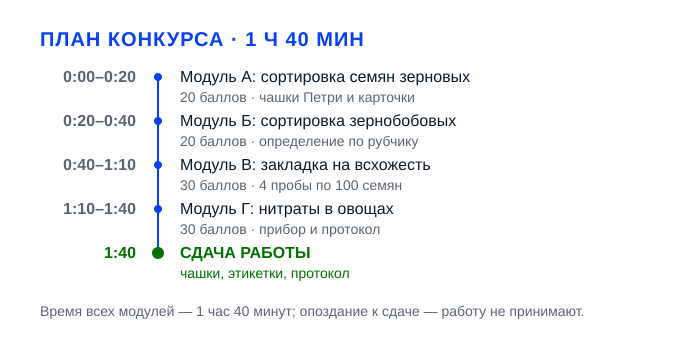
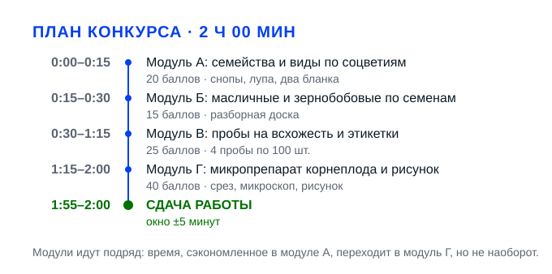
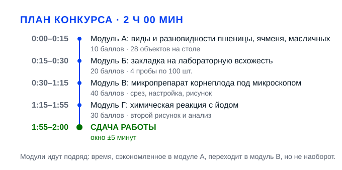

Агрономия (Р)
Задания ниже — официальные файлы «Абилимпикс» (источник: abilympics-russia.ru), разложенные по категориям. Решения написаны по тексту задания, регламенту и критериям оценки; в них указано, что именно проверяет эксперт.
Школьник
14–16 лет, базовый уровень заданияВыдержка из официального конкурсного задания: страницы, относящиеся к категории «Школьник» (стр. 7–11 источника).
Пошаговое решение
Задание для школьников состоит из четырёх модулей на 100 баллов и укладывается в 1 час 40 минут: модуль А — определение и сортировка семян зерновых, 20 баллов и 20 минут; модуль Б — то же для зернобобовых культур, ещё 20 баллов и 20 минут; модуль В — подготовка семян к анализу на лабораторную всхожесть, 30 баллов и 30 минут; модуль Г — региональный вариант, определение содержания нитратов в овощах, тоже 30 баллов и 30 минут. Работа идёт с чашками Петри, пинцетом, фильтровальной бумагой и нитратомером, а оценивают не скорость, а точность определения, комплектность проб и аккуратность записей. Главный риск — перепутать похожие виды на разборе и потерять счёт при отсчитывании сотен семян, поэтому порядок действий важнее спешки.

Задача 1. Разобрать смесь семян зерновых по видамМодуль А · 20 баллов · 20 минут
Первый модуль самый быстрый: за 20 минут нужно из смеси семян хлебных злаков выбрать зерновки каждого вида, разложить их по чашкам Петри, определить вид по таблице отличительных признаков и положить в каждую чашку карточку с названием. Модуль стоит 20 баллов из 100, и оценивают в нём три вещи сразу: правильность сортировки, точность определения и порядок на столе. Чашка без карточки или карточка не на своём месте считаются ошибкой так же, как неверно определённый вид.
Действие 1.1. Подготовить посуду и рабочее место
Шаг 1.1.1
Считаем, сколько видов ожидаем в смеси, и берём на один больше: четыре чашки Петри плюс запасная. Каждую чашку ставим дном вверх и подписываем по стеклу простым карандашом — номер, а если вид уже понятен, то и название; маркер для этого не годится, он смазывается от воды и от пальцев. Рядом с правой рукой кладём пинцет с тонкими концами и препаровальную иглу, перед собой — лист белой бумаги, на который будем высыпать смесь, а таблицу отличительных признаков ставим так, чтобы её было видно, не поворачивая головы.
Подпись на дне, а не на крышке, потому что крышка в этом модуле работает как подставка под карточку и постоянно снимается, а дно остаётся с содержимым до самой сдачи. Белый лист нужен не для красоты: на нём видно истинный цвет зерновки и плёнку, тогда как на цветном столе светло-жёлтая пшеница и серо-зелёная рожь выглядят почти одинаково. Запасная чашка спасает от перекладывания, если видов окажется больше, чем ожидалось.
Все чашки сухие, без сколов по краю и подписаны одним и тем же способом; пинцет и игла лежат в пределах досягаемости, а не на краю стола; таблица развёрнута к вам. Проверьте, что на дне каждой чашки читается номер: если карандаш бледный, обведите его ещё раз до начала разбора.
Самая частая ошибка — подписать крышки: через десять минут крышки перепутаны, и карточка с названием оказывается на чужой чашке, а это минус баллы сразу за два вида. Вторая — начать разбор, не приготовив запасную посуду: когда находится пятый вид, приходится ссыпать два вида вместе и разбирать заново, а времени на это уже нет.
Эксперт подходит в первые две-три минуты и смотрит на организацию места: подписаны ли чашки, лежит ли инструмент под рукой, не занята ли половина стола лишним. Одновременно он запоминает стартовую картинку, чтобы потом сравнить её с итогом.
Шаг 1.1.2
Протираем чашки насухо изнутри и снаружи, руки вытираем бумажным полотенцем. Смесь высыпаем не на голый стол, а на белый лист или в эмалированный лоток с бортиками: зерновки круглые и легко скатываются, а упавшее на пол семя уже не вернуть. Если в наборе есть пыль и обломки, аккуратно сдуваем их в сторону, но не выбрасываем сразу — обломок может оказаться частью зерновки, по которой определяют вид.
Влажное стекло — это прилипшие зерновки: часть останется на стенке, и проба окажется неполной, а цвет мокрого зерна темнее, и сравнение с таблицей идёт по неправильному оттенку. Бортики у лотка нужны из-за геометрии: зерновка пшеницы катится по гладкому столу почти как шарик, и одно неловкое движение руки уносит десяток семян под шкаф.
На стекле нет капель и разводов, зерно на листе лежит свободно и не липнет к пальцам. Поднимите чашку на свет: если видны мутные пятна от высохшей воды, протрите ещё раз. Если зерно прилипает к стеклу, значит, чашка плохо вытерта, и её нужно протереть ещё раз.
Разбирать смесь на клеёнке или на цветном столе — цвет зерна читается неверно, и рожь легко принять за пшеницу. Вторая ошибка — смахнуть пыль и мелкие обломки в мусор: вместе с ними уходит часть мелких зёрен, и карточка «овёс» остаётся без подтверждения.
Смотрит на сохранность образца: не потеряно ли зерно, не смешано ли оно с мусором. Пять-десять потерянных зёрен из пробы на 20 баллов не критичны, но привычка работать аккуратно видна сразу.
Шаг 1.1.3
До первого движения читаем таблицу «Отличительные признаки зерновок хлебных злаков» целиком и выбираем для себя порядок работы: сначала делим смесь на плёнчатые и голозёрные, потом внутри каждой группы — по форме и бороздке. Отмечаем карандашом 3–4 признака, которые реально видны глазом без лупы: форма, бороздка, плёнка и опушение, окраска. Остальные признаки оставляем как проверочные, на случай сомнения.
Таблица — официальный инструмент модуля, и 20 баллов ставят за определение по признакам, а не за угадывание по цвету. Порядок «от грубого признака к тонкому» экономит время: одно деление пополам убирает половину вариантов, а попытка сразу различить пшеницу и рожь по оттенку обычно заканчивается путаницей. Признаки, которые видны только под лупой, на столе без оптики бесполезны, и тратить на них минуты нельзя.
Закройте таблицу и назовите по памяти, чем отличаются пшеница и рожь, ячмень и овёс. Если ответ получается уверенно, порядок работы выбран верно; если нет — вернитесь к таблице, пока не начали разбор, потому что потом будет некогда.
Начинать с окраски — самая дорогая ошибка: цвет зависит от сорта, степени зрелости и освещения, поэтому светло-жёлтая рожь и янтарная пшеница легко меняются местами. Вторая ошибка — считать плёнку грязью и обтирать её: у ячменя и овса плёнка срослась с зерновкой, и, счищая её, вы уничтожаете главный признак.
Наблюдает, пользуется ли участник таблицей осмысленно: сравнивает признаки по порядку или просто водит пальцем по строкам. Умение работать с определителем входит в оценку модуля.
Действие 1.2. Разобрать смесь на группы
Шаг 1.2.1
Высыпаем смесь на белый лист и разравниваем её в один слой — пальцами или обратной стороной пинцета, не сдвигая в кучу. Смотрим на слой целиком и считаем, сколько разных типов зерна видно: по форме, по цвету, по наличию плёнки. Обычно в наборе четыре-пять видов, и уже на этом этапе понятно, какие группы придётся различать особенно внимательно. Лист лучше положить у окна или под лампу, чтобы тени не искажали форму зерновок.
Разровненный слой — это карта работы: видно, каких семян много, каких единицы, и не приходится перебирать горку, в которой мелкое зерно ушло вниз. Подсчёт типов до начала разбора не даёт забыть редкий вид: если в смеси два семени овса, их легко потерять среди ячменя и потом искать по всей чашке.
В один слой видны отдельные зерновки, они не перекрывают друг друга, и вы можете перечислить ожидаемые группы: например, гладкие светлые, гладкие серо-зелёные, плёнчатые веретеновидные, плёнчатые удлинённые с опушением. Если группы не читаются, значит, слой слишком плотный: раздвиньте зерновки ещё раз.
Разбирать прямо из горки: верхние семена выбираются легко, а нижние остаются нетронутыми, и в конце в чашке обнаруживается вид, которого вы не заметили. Вторая ошибка — сразу ссыпать похожие семена в одну чашку «потом разберу»: обратно разбирать придётся уже под таймер.
Смотрит, как организовано пространство листа: есть ли зоны под каждую группу и не смешивается ли уже разобранное с исходной смесью. По этому видно, продумал ли участник работу заранее или начал разбирать наугад.
Шаг 1.2.2
Пинцетом выбираем зерновки с неотделимой плёнкой: у ячменя она тонкая, плотно облегает зерно и повторяет его форму, у овса — более рыхлая, с заметным опушением и продольной бороздкой на брюшке. Складываем их в отдельную чашку и не спешим: плёнчатых в смеси обычно меньше, чем голозёрных. Голозёрные — гладкие, блестящие, без чешуи — пока остаются на листе.
Плёнчатость — первый и самый надёжный признак деления: её нельзя спутать с освещением или сортом. Одно это деление сразу отделяет ячмень и овёс от пшеницы и ржи, и дальше работать приходится только внутри пар, где признаков больше и они тоньше. Если пропустить плёнчатую зерновку в голозёрную группу, она там потеряется, и целый вид останется неопределённым.
Пересмотрите голозёрную группу на свет: в ней не должно остаться зерновок с матовой чешуёй и шероховатой поверхностью. Проведите пинцетом по слою — гладкие зерновки скользят, плёнчатые цепляются. Если стекло потеет от рук, протрите его ещё раз перед тем, как высыпать смесь.
Принять матовый налёт на пшенице за плёнку: у голозёрных сортов поверхность иногда тусклая, но чешуи на ней нет, и при нажатии пинцетом она не отделяется. Обратная ошибка — снять плёнку с ячменя и отнести его к пшенице: зерно станет гладким, но форма останется веретеновидной, и опытный глаз это заметит.
Проверяет руки: работает ли участник пинцетом, а не ногтями, не давит ли зерно. Раздавленное зерно не принимается как образец, а раздавленная плёнка лишает вид главного признака.
Шаг 1.2.3
Голозёрную группу делим на пшеницу и рожь. Пшеница короче и шире, бочонковидная, бороздка у неё широкая и неглубокая, а сама зерновка на ощупь плотная, часто стекловидная. Рожь длиннее и уже, с боков сжатая, бороздка глубокая и узкая, цвет серовато-зеленоватый, поверхность матовая. Кладём рядом по одной зерновке того и другого вида и сравниваем прямо, а не по памяти.
Пара «пшеница — рожь» даёт основную часть ошибок в модуле А, потому что обе культуры голозёрные и близки по размеру. Сравнение двух зерновок рядом работает надёжнее любого описания: глаз ловит разницу в длине и в цвете бороздки, когда объекты стоят друг за другом. Именно за правильное различение этих видов начисляется значительная часть из 20 баллов модуля.
Рядом лежат две зерновки: одна заметно короче и шире, вторая длиннее и уже, с более тёмной глубокой бороздкой. Если разницы не видно, поверните обе зерновки бороздкой вверх — на пшенице она раскрыта шире.
Определять по одной зерновке, не сравнивая: память подводит, и первая же нетипичная зерновка задаёт неверный эталон. Вторая ошибка — считать зелёный оттенок признаком незрелости и выбрасывать такие зёрна: у ржи это нормальный цвет, и, выбросив их, вы теряете вид.
Подходит к чашкам после разбора и проверяет именно эту пару: правильно ли разделены пшеница и рожь. Это самый быстрый способ понять, работал участник по таблице или гадал по цвету.
Шаг 1.2.4
Плёнчатую группу делим на ячмень и овёс. Ячмень веретеновидный, к концам сужается, плёнка тонкая и плотная, на поверхности видны продольные морщины, а на верхушке часто остаётся обломок ости. Овёс длиннее и тоньше, плёнка рыхлая, легко отходит при нажиме, поверхность с опушением, и зерно в руке заметно легче. Раскладываем по чашкам, стараясь не давить на плёнку.
Ячмень и овёс различаются не только формой, но и плотностью плёнки, и это различие удобно проверять нажатием пинцета: у ячменя плёнка держится, у овса продавливается. Масса тоже работает как признак — овсяное зерно в плёнке легче ячменного того же размера, поэтому одинаковые по длине зёрна ведут себя в руке по-разному.
Ячменные зерновки лежат веретеном, суженные к концам, овсяные — удлинённые, с рыхлой чешуёй и заметным опушением. Проверьте одну зерновку из каждой чашки нажатием: плёнка ячменя не отделяется, плёнка овса поддаётся.
Считать обломок ости у ячменя отдельным видом и класть его в пятую чашку: обломок — не зерновка, а карточка на пустую чашку снимает баллы за определение. Вторая ошибка — отобрать самые крупные зёрна овса и получить группу, которая по размеру ближе к ячменю, чем к своему виду.
Смотрит на однородность чашек: не осталось ли в «ячмене» удлинённых зерновок с рыхлой плёнкой. Смешанная чашка читается как ошибка определения, даже если большинство семян разобрано верно.
Действие 1.3. Определить виды и подписать чашки
Шаг 1.3.1
Берём каждую чашку по очереди и сверяем её содержимое с таблицей по трём признакам сразу: форма, бороздка, плёнка. Не ограничиваемся одним совпадением — если форма подходит, а бороздка нет, вид определён неверно. Для спорной чашки откладываем по две зерновки в сторону и возвращаемся к ним после того, как разобраны остальные: свежий взгляд на паузе часто решает сомнение.
Оценка идёт по совпадению с эталоном, и одного признака не хватает для вывода: у пшеницы и тритикале, например, совпадает форма, но различается глубина бороздки. Проверка по трём признакам — это тот минимум, который делает ответ защитимым, если эксперт попросит объяснить, почему чашка названа именно так.
Для каждой чашки вы можете назвать три признака, по которым отнесли зерно к виду, и показать их на конкретной зерновке. Если хотя бы один признак не подтверждается, чашка идёт в спорные. Спорных чашек не должно остаться больше одной, иначе времени на них не хватит.
Определять по первому совпадению: «похоже на овёс» — не определение, и половина таких ответов оказывается ячменём. Вторая ошибка — переставлять чашки местами в процессе, а потом не помнить, где что лежало.
Может попросить показать признак на конкретной зерновке. Ответ «по таблице так написано» без демонстрации признака засчитывается не полностью. Отдельно он отмечает, называет ли участник признак своими словами, а не читает с листа.
Шаг 1.3.2
Раскладываем карточки с названиями: в каждую чашку кладём карточку того вида, который в ней лежит, названием вверх и так, чтобы её было видно, не поднимая крышку. Название пишем полностью, родовое и видовое — «пшеница мягкая», «рожь посевная», «ячмень обыкновенный», «овёс посевной», а не просто «пшеница» или «злак». Карточку кладём на дно рядом с зерном или на крышку, если так требует задание, но одинаково во всех чашках.
Результат модуля описан в задании прямо: семена разобраны по видам, виды определены и в чашки разложены карточки с названиями. Карточка — это ваш ответ, и если она лежит не в той чашке или подписана одним словом, эксперт не может засчитать определение, даже когда зерно разобрано правильно.
Поднимите каждую чашку и прочитайте карточку: название совпадает с содержимым, написано разборчиво и полностью. Все карточки лежат одинаково — если в одной чашке на дне, а в другой под крышкой, это выглядит как небрежность.
Положить карточки стопкой в центр стола «чтобы эксперт разобрал»: результат модуля не выполнен, и баллы за определение не начисляются вовсе. Вторая ошибка — подписать «злаковые» вместо вида: это уровень семейства, а не вида, и стоит половины балла.
Проверяет соответствие карточки и содержимого по каждой чашке, а также полноту названия. Это финальная проверка модуля А, и здесь видно, доведена ли работа до результата.
Шаг 1.3.3
Перед сдачей проходим по чашкам слева направо и сверяем комплект: число чашек равно числу видов, в каждой есть зерно и карточка, на столе не осталось неразобранных семян. Остатки смеси и обломки ссыпаем в отдельную ёмкость, а не в чашку с видом. Если замечаем, что какая-то чашка пуста или в ней смешаны два вида, исправляем сразу — на это ещё есть время.
Модуль заканчивается по времени, и работа сдаётся в том виде, в каком её застал сигнал: недоделанная чашка и потерянное зерно — это прямые потери баллов. Сверка по порядку занимает меньше минуты, но ловит именно те ошибки, которые не видны, пока смотришь на одну чашку.
Чашек столько же, сколько видов; в каждой зерно и карточка; на листе и на столе нет одиночных зёрен, которые никуда не попали. Пройдите взглядом по столу с высоты — так лучше видно брошенные зерновки.
Оставить на столе неразобранную горку «пусть полежит»: эксперт видит, что смесь разобрана не полностью, и снимает баллы за сортировку. Вторая ошибка — ссыпать обломки и пыль в чашку с видом, чтобы не было мусора: содержимое перестаёт быть однородным.
Финальный осмотр перед сдачей: комплектность, чистота стола, отсутствие потерянных зёрен. В этот момент исправлять уже нечего, но эксперту важно видеть, что участник сам проверил работу.
Задача 2. Разобрать смесь семян зернобобовых культурМодуль Б · 20 баллов · 20 минут
Второй модуль устроен так же, как первый, но материал другой: в смеси лежат семена зерновых бобовых культур, и различают их не по бороздке и плёнке, а по форме, поверхности и рубчику — месту прикрепления семени к плоду. За 20 минут нужно разобрать смесь по видам, разложить по чашкам Петри, определить каждый вид по таблице «Отличительные признаки семян зерновых бобовых культур» и положить в чашки карточки с названиями. Модуль стоит 20 баллов, и здесь легче, чем в первом, ошибиться на похожих парах: горох и вика, нут и мелкие бобы внешне близки, а времени на перепроверку меньше.
Действие 2.1. Подготовить посуду и разборную доску
Шаг 2.1.1
Готовим чашки Петри по числу ожидаемых видов зернобобовых и подписываем дно карандашом по стеклу, как в первом модуле. Дополнительно кладём перед собой разборную доску или белый лоток с бортиками: семена бобовых крупные и тяжёлые, они не скатываются, но при падении на пол отскакивают далеко. Пинцет здесь нужен с более широкими концами, а препаровальная игла — только для мелких семян вики и чечевицы.
Крупное семя удобнее брать пальцами, но раскладывать по чашкам всё равно лучше пинцетом: на пальцах остаётся кожное сало, и светлая оболочка боба темнеет пятнами, что мешает оценке цвета. Бортики у доски спасают от потери семян: горошина, упавшая с высоты стола, уходит под шкаф, и найти её уже не получится.
Чашки подписаны, доска сухая и чистая, пинцет и игла на месте. На доске нет остатков предыдущей работы — крошек, шелухи, влаги. Если доска скользит по столу, подложите под неё влажную салфетку — так она не поедет при разборе.
Брать семена влажными руками после мытья: оболочка бобовых набухает и темнеет буквально за минуты. Вторая ошибка — использовать одну общую чашку для похожих видов: горох и вика внешне близки, и разделить их потом будет намного труднее.
Смотрит на посуду и инструмент в первые минуты: подписаны ли чашки, сухая ли доска, не лежат ли семена на голом столе. Это тот же чек-лист, что и в модуле А, и ошибки здесь повторяются.
Шаг 2.1.2
Осматриваем смесь до разбора: у бобовых семена крупные, и уже на глаз видно, что в наборе есть круглые гладкие, угловатые с носиком, плоские и удлинённые. Считаем, сколько типов ожидаем, и запоминаем самые редкие — обычно это одна-две штуки какого-то вида. Смесь не разравниваем в тонкий слой, как зерновые: бобовые крупные, их удобнее брать прямо из общей кучи по одному.
Осмотр до разбора задаёт план и не даёт пропустить редкий вид: если в смеси две чечевичины, а рядом лежат десять горошин, глаз замыливается, и мелкое семя остаётся незамеченным. Крупный размер здесь работает на участника: бобовые можно уверенно брать пальцами, не боясь раздавить, и скорость разбора выше, чем у зерновых.
Вы можете перечислить ожидаемые группы: круглые гладкие, круглые морщинистые, угловатые с клювиком, плоские линзовидные, крупные овальные с рубчиком. Если список не складывается, вернитесь к таблице. Сверяйте список с тем, что реально лежит в куче, а не с тем, что написано в задании.
Смешивать вику и горох в одну группу «мелкие круглые»: рубчик у них разный, и на определении это сразу скажется. Вторая ошибка — торопиться и хватать семена горстью: так теряется контроль над составом смеси.
Отмечает, осмотрел ли участник смесь до разбора и знает ли, сколько видов ищет. Бессистемный разбор «по одному семечку» виден по тому, как долго участник держит в руках каждое семя.
Шаг 2.1.3
Кладём перед собой таблицу «Отличительные признаки семян зерновых бобовых культур» и находим в ней четыре признака, которые видны невооружённым глазом: форма, поверхность, окраска, рубчик. Отдельно обращаем внимание на рубчик — место прикрепления семени к плоду: у одних видов он маленький и овальный, у других вытянутый в линию, у третьих лежит в выемке. Этот признак у бобовых надёжнее окраски.
Рубчик — самый устойчивый признак в этой группе: форма и цвет у сортов варьируют, а рубчик сохраняется и на светлых, и на тёмных семенах. Именно по нему надёжно различаются горох и вика, которые в остальном очень похожи, поэтому 20 баллов модуля во многом зависят от того, посмотрел ли участник на рубчик.
Вы можете показать рубчик на любом семени и назвать его форму: овальный, линейный, в выемке. Если признак не находится, поверните семя — рубчик всегда лежит на ребре или на плоской стороне, но не на выпуклой.
Определять бобовые только по цвету: жёлтый и белый горох, светлая и тёмная вика легко меняются местами. Вторая ошибка — путать рубчик с вмятиной от нажима и делать вывод по случайному повреждению. Ещё одна ошибка — определять по одному семени, не сравнивая его с соседним.
Проверяет, находит ли участник рубчик и умеет ли показать его. Это ключевой навык модуля, и эксперт может попросить показать признак на любом семени из чашки.
Действие 2.2. Разложить смесь по группам
Шаг 2.2.1
Берём семена из кучи по одному и раскладываем на три зоны доски: круглые и шаровидные, угловатые с выраженным носиком, плоские и линзовидные. Круглые — это горох и вика, угловатые — нут и кормовые бобы, плоские — чечевица, люпин и соя. Внутри каждой зоны потом работаем отдельно, чтобы не сравнивать далёкие формы между собой. Зоны размечаем мысленно, но лучше раздвинуть их на доске, чтобы группы не соприкасались краями.
Деление по форме — самое быстрое: оно занимает первые минуты и сразу убирает основную путаницу. Если начать с определения каждого семени по таблице, 20 минут уйдут на первые двадцать штук, а смесь останется неразобранной, и баллы за сортировку потеряны.
В каждой зоне семена похожи между собой по силуэту, ни один одиночка не лежит отдельно от группы. Если семя не подходит ни в одну зону, отложите его в сторону и вернитесь позже. Если в зоне оказалось одно семя, это повод пересмотреть его форму ещё раз.
Смешивать угловатые и круглые: нут с его клювиком легко принять за крупный горох, если не смотреть на силуэт. Вторая ошибка — раскладывать сразу по видам, не сделав грубого деления: глаз устаёт, и ошибки накапливаются.
Смотрит на скорость грубого деления: за первые пять минут должны быть заняты все три зоны доски. Если участник всё ещё перебирает кучу целиком, время модуля будет потеряно.
Шаг 2.2.2
Круглые семена делим на две группы по рубчику. У гороха рубчик небольшой, овальный, светлый, занимает малую часть окружности; у вики он вытянут в узкую полоску вдоль ребра и часто тёмный, почти чёрный. Дополнительно смотрим на поверхность: горох гладкий и блестящий, вика чаще матовая, с едва заметной сетчатостью. Семя удобно держать пинцетом за плоскую сторону, а ребро поворачивать к свету.
Это ключевая пара модуля: горох и вика похожи размером и формой, и именно на них теряется больше всего баллов. Рубчик решает вопрос за секунду, если смотреть на ребро семени, а не на его плоскость, и не требует ни лупы, ни дополнительного света. На тёмной оболочке светлый рубчик виден хуже, поэтому смотрите на рельеф, а не на цвет.
У каждой круглой группы проверьте 3–4 семени: рубчик либо короткий овальный, либо длинная полоска. Если в группе встречаются оба типа, значит, деление не закончено. Если рубчик не виден, поверните семя ребром к окну и слегка наклоните его.
Смотреть на семя с плоской стороны: рубчик там не виден, и горох с викой снова смешиваются. Вторая ошибка — отнести к вике морщинистый мозговой горох: у него рубчик остаётся коротким, а морщины — сортовой признак.
Проверяет именно пару «горох — вика»: смотрит на рубчики в обеих чашках. Это самое частое место ошибок, и эксперт идёт к нему первым, едва участник закончил разбор.
Шаг 2.2.3
Угловатые семена разбираем по размеру и носику. Нут мельче, угловато-округлый, с заметным клювиком на конце и морщинистой поверхностью; кормовые бобы крупные, плосковатые, овальные, с гладкой оболочкой и длинным линейным рубчиком. Нут часто светлый, кремовый, бобы — от светло-коричневого до тёмного. Морщины на нуте — не повреждение, а нормальный признак вида, их не нужно счищать.
Нут и бобы различаются размером почти вдвое, но если в наборе попались мелкие бобы, одной формы мало. Клювик у нута — это остаток столбика, он есть всегда, тогда как у боба на этом месте только рубчик, и по этому признаку виды расходятся надёжно. Поэтому размер проверяют по нескольким семенам, а не по одному.
В группе нута у каждого семени есть клювик, в группе бобов — длинный рубчик. Разница в размере видна без линейки: бобы заметно крупнее любого семени нута. Клювик должен быть виден без лупы, на свету он читается как небольшой выступ.
Принять за нут мелкий боб с повреждённой оболочкой: клювика у него нет, и признак не подтверждается. Вторая ошибка — отнести нут к гороху из-за округлости, не заметив угловатости. Ещё одна ошибка — давить на семя, чтобы найти клювик: он обламывается.
Смотрит, есть ли клювик у семян в чашке нута и длинный рубчик у бобов. По этим двум признакам пара различается надёжно, и эксперт проверяет их выборочно, по два-три семени.
Шаг 2.2.4
Плоские семена делим на три вида. Чечевица мелкая, линзовидная, с острым краем и узким рубчиком; люпин крупнее, сплюснуто-округлый, светлый, с рубчиком в выемке на ребре; соя овальная, с крупным тёмным рубчиком и гладкой оболочкой, часто жёлтая или зеленоватая. Начинаем с размера: чечевица уходит в свою чашку сразу, остальные две различаем по рубчику.
Три вида в одной группе — самая насыщенная часть модуля, и здесь важно не тратить время на попарные сравнения всех со всеми. Размер отделяет чечевицу за секунды, а рубчик в выемке у люпина настолько характерен, что его не спутать с соей. Соя и люпин растут в разных условиях, но на столе их различает только рубчик.
Чечевица в чашке мельче остальных и лежит плоской линзой; у люпина рубчик утоплен в выемку; у сои рубчик крупный и выступает на общем фоне. Проверьте по одному семени из каждой чашки. Проверьте, что чечевица не смешана с мелкими семенами вики: они тоже плоские.
Путать люпин и сою по цвету: белый люпин и светло-жёлтая соя близки, но рубчик у люпина в выемке, а у сои — на поверхности. Вторая ошибка — отнести мелкую сою к чечевице, не посмотрев на толщину семени.
Проверяет три плоские чашки на смешение: чаще всего путают люпин и сою. Эксперт смотрит на рубчик в выемке и на размер семян, а не на цвет. Отдельно он смотрит на чечевицу: она самая мелкая и чаще всего теряется.
Действие 2.3. Определить виды, подписать и сдать чашки
Шаг 2.3.1
Для каждой чашки сверяемся с таблицей по трём признакам: форма, поверхность, рубчик. Если форма и поверхность подходят, а рубчик нет, вид определён неверно, и чашку нужно пересмотреть. Спорные семена откладываем на угол доски и возвращаемся к ним в конце, когда все остальные чашки уже определены. Спорные семена лучше сразу отодвинуть в сторону, чтобы они не смешались с определёнными.
Сверка по трём признакам нужна потому, что отдельные признаки у бобовых варьируют сильнее, чем у злаков: окраска зависит от сорта, форма — от степени зрелости, и только рубчик остаётся стабильным. Ответ, подтверждённый тремя признаками, эксперт принимает без переспроса, а ответ по одному признаку легко оспорить.
Для каждой чашки вы можете назвать рубчик и ещё два признака и показать их на семени. Если хотя бы один признак не подтверждается, чашка идёт в спорные до конца модуля. Если признак находится только на одном семени из чашки, это повод проверить остальные.
Определять по окраске и не смотреть на рубчик: на светлых семенах он почти не виден, и участник делает вывод по самому ненадёжному признаку. Вторая ошибка — оставить спорные семена на углу доски и забыть о них до сдачи.
Может попросить объяснить определение словами, без таблицы. Ответ, который участник не может подтвердить признаком на самом семени, засчитывается не полностью.
Шаг 2.3.2
Раскладываем карточки с названиями видов в чашки: горох посевной, вика посевная, нут культурный, бобы кормовые, чечевица культурная, люпин, соя культурная — в зависимости от того, что оказалось в наборе. Название пишем полностью, родовое и видовое, разборчиво и одинаково на всех карточках. Карточка лежит названием вверх, рядом с семенами, так, чтобы её было видно через крышку.
Карточка — это зафиксированный результат определения, и без неё работа считается невыполненной, даже если семена разобраны идеально. Полное название нужно потому, что эксперт сверяет его с эталоном: «бобовые» или «горох» без видового названия — это неполный ответ и потерянная часть из 20 баллов.
Прочитайте каждую карточку и сверьте с содержимым чашки. Названия написаны полностью, одинаковым почерком, без исправлений и зачёркиваний. Отдельно проверьте, что карточка не прикрывает семена и её видно через крышку.
Подписать все чашки одним словом «бобовые»: определение не засчитывается, потому что вид не назван. Вторая ошибка — перепутать карточки при раскладке: две чашки меняются названиями, и обе теряют баллы.
Проверяет карточки по одной и сверяет с содержимым. Отдельно смотрит, не перепутаны ли карточки местами: это самая обидная потеря баллов при правильном разборе.
Шаг 2.3.3
Перед сдачей сверяем комплект: чашек столько же, сколько видов, в каждой зерно и карточка, на доске не осталось неразобранных семян. Остатки и обломки ссыпаем отдельно, стол протираем. Если в какой-то чашке семян заметно меньше, чем было в смеси, проверяем, не укатилось ли несколько штук под доску или на пол. Стол протираем сухой салфеткой, чтобы семена не прилипали к влажной поверхности.
Модуль сдаётся по времени, и неполный комплект читается как незавершённая работа. Сверка занимает минуту, но именно она ловит потерянные семена и пустые чашки, которые не видны, пока смотришь на стол по частям. Полный комплект — это единственное, что эксперт принимает как результат модуля.
Чашек столько же, сколько видов; в каждой семена и карточка; доска и стол чистые, потерянных семян нет. Пройдите по столу с высоты и посмотрите на него целиком. Если чашек больше, чем видов, проверьте, не осталась ли лишняя с одним-двумя семенами.
Оставить на доске неразобранные семена: эксперт видит, что смесь разобрана не полностью, и снимает баллы за сортировку. Вторая ошибка — сдать чашки, не проверив, что карточки лежат в тех же чашках, что и при определении.
Финальный осмотр: комплектность, чистота, соответствие карточек. В этот момент работа уже сдана по сути, и эксперт фиксирует то, что видит. Отмечает и то, насколько аккуратно выглядит стол после разбора.
Задача 3. Подготовить семена к анализу на лабораторную всхожестьМодуль В · 30 баллов · 30 минут
Самый дорогой по баллам этап работы с семенами: 30 баллов и 30 минут на то, чтобы из среднего образца отобрать четыре пробы по 100 штук, вырезать и уложить фильтр, разложить семена в чашки Петри, закрыть их и подписать этикетки на крышках. Оценивают не всходы — их ещё нет, а качество закладки: представительность пробы, ровный фильтр, правильный счёт семян и читаемые этикетки. Ошибка в счёте или пересохшая бумага обесценивают весь опыт, поэтому точность здесь важнее скорости.
Действие 3.1. Отобрать средний образец и подготовить посуду
Шаг 3.1.1
Средний образец — это не горсть сверху, а проба, взятая из разных мест пакета: совком или рукой из трёх-четырёх точек, сверху, с середины и со дна, примерно равными порциями. Ссыпаем всё в чистый лоток и перемешиваем, разравниваем и делим на четыре части. Такой порядок даёт образец, в котором пропорции крупных и мелких семян такие же, как во всей партии.
Если взять семена только сверху, в пробу попадут самые лёгкие и щуплые, и всхожесть окажется заниженной; если только со дна — наоборот, тяжёлые. Задание прямо требует отобрать пробу из среднего образца, и 30 баллов модуля ставят за то, что проба представительна, а не за скорость.
Образец однородный на вид, в нём есть и крупные, и мелкие семена в той же пропорции, что в исходном пакете. После деления на четыре части кучки сопоставимы по объёму. Если после деления на месте кучек видны пустые места, образец перемешан неравномерно.
Брать пробу одной горстью сверху — классическая ошибка, которая искажает весь дальнейший анализ. Вторая — перемешивать образец на столе без бортиков: часть семян теряется, и проба снова смещается. Ещё одна ошибка — брать пробу из одного угла пакета, где семена слежались.
Смотрит, откуда участник берёт семена: из разных точек пакета или с поверхности. Это видно по первым движениям и сразу говорит о понимании сути анализа.
Шаг 3.1.2
Готовим четыре чашки Петри и подписываем их: номер пробы, культура, дата закладки. Чашки должны быть сухими и чистыми, без сколов: скол по краю не даёт крышке сесть плотно, и влага испаряется быстрее, чем нужно для прорастания. Рядом ставим фильтровальную бумагу, ножницы и ёмкость с водой. Для подписи удобно заранее нарезать полоски бумаги и написать их до начала работы.
Четыре пробы по 100 штук — это требование задания, и каждая чашка должна быть узнаваема без вскрытия. Подпись делается заранее, потому что после укладки семян трогать чашку лишний раз нельзя: семена сдвинутся, и подсчёт при снятии результатов будет неточным.
Четыре сухие чашки с читаемыми номерами, бумага и ножницы на месте, вода налита в чистую ёмкость. Крышки подходят к чашкам без перекоса. Проверьте, что карандаш не стирается пальцем: проведите по надписи подушечкой.
Подписывать чашки после укладки: семена сдвигаются, часть прилипает к влажной бумаге, и проба теряет счёт. Вторая ошибка — использовать чашку со сколом: крышка не держится, и бумага высыхает за сутки.
Проверяет посуду до начала работы: нет ли сколов и трещин, подписаны ли чашки. Повреждённая посуда — уважительная причина попросить замену до старта модуля.
Шаг 3.1.3
Проверяем, что фильтровальная бумага подходит по диаметру: прикладываем лист к чашке и обводим карандашом по внутреннему краю, а не по внешнему. Вырезаем ножницами по линии, стараясь не рвать края руками: рваный край даёт волокна, которые потом путаются с корешками. На каждую чашку нужно два круга — нижний и, если требуется, верхний. Вырезать лучше по одному кругу за раз, прикладывая шаблон к новому листу.
Бумага, вырезанная по внешнему диаметру, загибается вверх и приподнимает крышку; вырезанная слишком маленькой оставляет семена на голом стекле, и они не получают влагу равномерно. Ровный край важен и при подсчёте: волокна бумаги при осмотре всходов легко принять за проростки.
Круг ложится на дно чашки и закрывает его полностью, не заходя на стенки и не оставляя зазора по краю. Край ровный, без бахромы. Если круг приходится подгибать, значит, он вырезан с запасом и его нужно переделать.
Обводить по внешнему краю чашки: круг получается на 3–5 мм больше и коробится. Вторая ошибка — рвать бумагу руками: бахрома даёт ложные корешки при подсчёте. Ещё одна ошибка — вырезать сразу стопку кругов: края получаются неровными.
Смотрит, как вырезан фильтр: приложен ли он к дну, нет ли зазора и бахромы. Это первый измеримый результат модуля. Смотрит, приложен ли фильтр к дну и нет ли между бумагой и стеклом пузыря.
Действие 3.2. Изготовить фильтр и уложить первую пробу
Шаг 3.2.1
Кладём вырезанный круг в чашку и смачиваем из пипетки или ложечкой, распределяя воду от центра к краям, пока бумага не станет равномерно влажной. Излишки воды сливаем, наклоняя чашку: на дне не должно быть лужицы. Бумага должна прилегать к стеклу всей поверхностью, без пузырей. Удобнее наливать воду ложкой по центру, а потом наклонять чашку, чтобы влага разошлась.
Сухая бумага забирает воду у семян и задерживает набухание; переувлажнённая лишает их воздуха, и семена задыхаются, что даёт загнивание вместо всходов. Задание требует именно смочить бумагу и поместить её в чашку, то есть речь о влажной камере, а не о чашке с водой.
Бумага влажная на ощупь по всей площади, но при наклоне чашки вода не стекает. Пузырей и сухих пятен нет. Проведите по бумаге чистым пальцем: она должна быть влажной, но не блестеть от воды и не оставлять на пальце капель.
Залить бумагу так, чтобы семена плавали: в воде семена загнивают, и всхожесть будет нулевой. Вторая ошибка — смочить только центр: края остаются сухими, и семена по периметру не прорастают. Третья ошибка — смачивать бумагу прямо из-под крана: напор сдвигает круг.
Проверяет влажность на ощупь и наклоном чашки: есть ли лужа. Перелив виден сразу и считается ошибкой изготовления фильтра. Отмечает и то, не осталась ли на дне вода после наклона чашки.
Шаг 3.2.2
Отсчитываем ровно 100 семян и раскладываем их на влажную бумагу рядами, зародышем вверх, на равном расстоянии друг от друга. Семена не должны касаться: при прорастании корешки переплетаются, и отделить одно семя от другого при подсчёте невозможно. Раскладываем пинцетом, а не пальцами, чтобы не сдвинуть бумагу и не оставить вмятины. Ряды удобно начинать от края и вести к центру, тогда раскладка не собьётся.
Сто штук — жёсткая норма задания, и любая ошибка в счёте делает пробу непригодной: при всхожести считают процент, и лишние или недостающие семена сразу искажают результат. Расстояние между семенами и зародыш вверх нужны для того, чтобы корешок шёл в бумагу, а не в сторону, и чтобы при подсчёте было видно, какое семя проросло.
Пересчитайте ряд за рядом: в каждом ряду по 10 семян, всего 10 рядов. Семена лежат зародышем вверх, не соприкасаясь и не касаясь стенки чашки. Если в ряду оказалось девять или одиннадцать семян, пересчитайте всю чашку заново.
Считать горстями «примерно сто»: ошибка в 5–10 семян — это 5–10 процентов всхожести, и весь анализ теряет смысл. Вторая ошибка — раскладывать семена вплотную: корешки слипаются, и подсчёт идёт с ошибками.
Считает семена вместе с участником или после него: сходится ли число, ровные ли ряды. Это ключевой измеримый результат модуля на 30 баллов. Смотрит на плотность: между семенами должен оставаться просвет.
Шаг 3.2.3
Накрываем чашку крышкой, держа её за края и опуская ровно, без сдвига. Чашку не переворачиваем и не наклоняем: семена должны остаться на своих местах. Если несколько семян всё же сдвинулись, поправляем их пинцетом через край, пока крышка не села полностью. Крышку держим двумя пальцами за противоположные края и опускаем медленно, чтобы не сдвинуть семена потоком воздуха.
Сдвиг на этом этапе сводит на нет всю аккуратность раскладки: семена собираются в кучу, и при подсчёте всхожести часть проростков остаётся неучтённой. Крышка, поставленная с перекосом, не держит влагу, и бумага высыхает быстрее, чем нужно для нормального прорастания.
Крышка сидит ровно, без перекоса и зазора; семена лежат так же, как были разложены. Чашка стоит на ровной поверхности и не наклонена. Если под крышкой видны капли, значит, бумага переувлажнена, и лишнюю воду нужно убрать.
Хлопнуть крышкой или поставить её сдвигом: семена сбиваются к одной стороне. Вторая ошибка — перевернуть чашку «чтобы бумага пропиталась»: семена падают на крышку и теряют ориентацию. Ещё одна ошибка — ставить чашку на край стола, где её легко задеть.
Смотрит на чашку сверху: не сбиты ли семена к краю. После закрытия крышки исправить это уже нельзя, поэтому эксперт фиксирует результат сразу. Проверяет, лежит ли крышка ровно и не сдвинулись ли семена к краю.
Действие 3.3. Отсчитать ещё три пробы и проверить счёт
Шаг 3.3.1
Повторяем раскладку для второй, третьей и четвёртой чашек, каждый раз отсчитывая ровно 100 семян и укладывая их так же, как в первой: рядами по десять, зародышем вверх, с равным расстоянием. Не меняем порядок и не ускоряемся за счёт счёта: удобнее отсчитывать по десять семян в ряд и называть номер ряда вслух или отмечать на черновике. Между чашками делаем короткую паузу и разминаем пальцы, чтобы не сбиться на четвёртой.
Четыре одинаковые пробы — условие сопоставимости: если в одной чашке семена лежат плотно, а в другой редко, условия прорастания разные, и средняя всхожесть по четырём пробам теряет смысл. Рядами по десять считается быстрее и точнее, чем навалом, а ошибка в счёте стоит процентов всхожести.
В каждой чашке по десять рядов по десять семян, раскладка одинаковая. Пересчитайте одну чашку контрольным проходом — это занимает меньше минуты. Если плотность раскладки в чашках разная, выровняйте её до сдачи.
Разложить первую пробу аккуратно, а остальные «на глаз»: именно так теряются баллы за модуль, потому что оценивают все четыре чашки. Вторая ошибка — сбиться при счёте и не заметить этого: проба на 95 или 105 семян даёт неверный процент.
Сравнивает чашки между собой: одинаковая ли плотность раскладки. Разнобой читается как небрежность и снижает оценку за качество закладки. Отмечает одинаковость раскладки во всех четырёх чашках.
Шаг 3.3.2
Когда все четыре чашки закрыты, пересчитываем общее количество: четыре пробы по 100 — это 400 семян. Проверяем, что нигде не осталось лишней горстки и что в каждой чашке счёт сходится. Если обнаружилась недостача, досыпаем семена из среднего образца, а не из первой попавшейся чашки. Считать удобно по чашкам: сначала первую, потом вторую, и только потом общую сумму.
Задание фиксирует результат прямо: из среднего образца отобраны четыре пробы по 100 штук каждая. Именно это число проверяет эксперт, и недостача в одной чашке означает, что проба не соответствует заданию, даже если раскладка выглядит аккуратно. Проверка счёта занимает минуту, а исправить ошибку после сдачи уже нельзя.
Четыре чашки, в каждой ровно 100 семян, сумма 400. На столе не осталось семян, предназначенных для проб. Сверьте число семян с записью на черновике, если вы его вели; расхождение ищите по тому ряду, где счёт сбился.
Досыпать семена из соседней чашки, чтобы уравнять счёт: число сходится, но пробы становятся неравноценными. Вторая ошибка — оставить на столе горку семян, из которой уже брали пробы. Ещё одна ошибка — досыпать семена из другой пробы, не заметив разницы в партии.
Пересчитывает пробы выборочно или полностью. Несовпадение числа семян — прямой минус баллов за модуль, потому что результат задания не выполнен. Сверяет число семян по одной-двум чашкам выборочно.
Шаг 3.3.3
Проверяем равномерность: в каждой чашке семена распределены по всей площади бумаги, не сгруппированы к центру или к одному краю. Если при переносе чашки часть семян сбилась, поправляем пинцетом через край, пока крышка снята. Чашки ставим на ровную поверхность, подальше от края стола и от источников тепла. Чашки лучше поставить в один ряд, а не друг на друга, чтобы крышки не давили на семена.
Равномерность — это одинаковые условия для всех семян: сгруппированные семена конкурируют за влагу и воздух, и часть из них не прорастёт не из-за качества, а из-за тесноты. Ровная поверхность и отсутствие тепла рядом нужны, чтобы вода не собиралась в одном углу, а бумага не пересыхала.
Семена распределены по всей площади, между ними есть просветы, чашки стоят ровно и не у края стола. Крышки закрыты до конца. Проверьте, что чашки не стоят на сквозняке: поток воздуха сушит бумагу быстрее.
Оставить чашки у батареи или на солнце «чтобы быстрее проросли»: бумага пересыхает, и всхожесть падает. Вторая ошибка — ставить чашки стопкой: нижние не получают света и воздуха. Ещё одна ошибка — накрыть чашки полотенцем от света: под ним скапливается конденсат.
Смотрит на размещение чашек в конце модуля: не стоят ли они под лампой или у края стола. Это часть оценки условий закладки опыта. Смотрит на место, куда поставлены чашки: не у батареи и не под прямым солнцем.
Действие 3.4. Оформить этикетки и сдать пробы
Шаг 3.4.1
Пишем этикетки: номер пробы, название культуры, дату закладки, количество семян — 100 штук, и свою фамилию, если это требуется по заданию. Пишем разборчиво, простым карандашом или водостойким маркером, который не смажется от конденсата. На каждую из четырёх чашек — отдельная этикетка, содержание одинаковое, отличается только номер пробы. Пишем печатными буквами, чтобы эксперт прочитал надпись без разглядывания.
Результат модуля включает изготовленные этикетки, размещённые на крышке чашки, и без них работа считается незавершённой. Дата закладки нужна потому, что сроки прорастания отсчитывают от неё, а номер пробы связывает чашку с записью в протоколе. Без даты невозможно понять, от какого дня отсчитывать сроки прорастания.
На этикетке читаются все пять позиций: номер, культура, дата, количество, фамилия. Буквы не смазаны, этикетка не больше крышки. Проверьте, что надпись не смазывается, если провести по ней влажным пальцем, и что буквы читаются с расстояния вытянутой руки.
Писать «пшеница» без номера пробы: четыре чашки становятся неразличимы, и результаты нельзя привязать к протоколу. Вторая ошибка — писать шариковой ручкой по влажной крышке: чернила расплываются. Ещё одна ошибка — писать номер пробы только на крышке, а дно оставлять чистым.
Читает этикетки и сверяет набор данных. Отсутствие даты или номера пробы — типичная потеря баллов именно на этом этапе. Отмечает, есть ли на этикетке дата закладки и номер пробы.
Шаг 3.4.2
Размещаем этикетки на крышке чашки, а не на дне и не внутри: так их видно, не открывая чашку, и они не мешают семенам. Кладём этикетку текстом вверх, разглаживаем, чтобы не было пузырей, и следим, чтобы она не закрывала всю поверхность — крышка должна оставаться прозрачной для осмотра. На всех четырёх чашках этикетки лежат одинаково. Этикетку удобно приклеить с краю, оставив центр крышки свободным.
Задание требует разместить этикетки именно на крышке, и это логично: чашку смотрят сверху, не вскрывая, чтобы не сбить семена. Этикетка на дне закрывает семена при осмотре снизу, а этикетка внутри намокает и прилипает к бумаге. Прозрачная крышка нужна ещё и для того, чтобы не вскрывать чашку при осмотре.
Этикетки на всех четырёх крышках, текстом вверх, не перекрывают центр. Крышки по-прежнему прозрачны, семена видны. Проверьте каждую крышку на просвет: семена должны быть видны по всей площади, а не только у края.
Положить этикетку внутрь чашки: она намокает и закрывает часть семян при подсчёте. Вторая ошибка — подписать одну чашку и поставить её как общую: пробы должны быть подписаны каждая. Ещё одна ошибка — наклеить этикетку на влажную крышку: бумага размокнет.
Проверяет, на крышке ли этикетки и видно ли через них семена. Это финальный измеримый признак модуля В. Смотрит, видно ли через крышку семена и не закрывает ли этикетка центр.
Шаг 3.4.3
Ставим четыре чашки в отведённое место — обычно это лоток или поднос, который сдаётся эксперту. Перед сдачей ещё раз проверяем: четыре чашки, на каждой этикетка, крышка закрыта, семена не сдвинуты. Если по заданию нужно назвать культуру и дату вслух, готовим короткий ответ: культура, дата закладки, число семян в каждой пробе. Лоток держим двумя руками и не наклоняем, чтобы чашки не поехали.
Модуль заканчивается сдачей, и сдаётся не «что получилось», а полный комплект: четыре пробы, фильтры, этикетки. Проверка перед сдачей — последняя возможность заметить перевёрнутую или неподписанную чашку, после сдачи исправить уже ничего нельзя. Сдаётся именно комплект, а не отдельные чашки по одной.
Комплект полный: четыре чашки, четыре этикетки, все крышки закрыты. Вы можете назвать культуру, дату и число семян, не заглядывая в записи. Проверьте, что этикетки не отклеились и читаются с первого взгляда.
Сдать три чашки из четырёх: модуль стоит 30 баллов, и неполный комплект тянет за собой потерю значительной части. Вторая ошибка — назвать дату по памяти, не сверившись с этикеткой. Ещё одна ошибка — поставить чашки стопкой на поднос: верхние давят на нижние.
Принимает пробы и сверяет комплектность. Недостающая чашка или этикетка фиксируется сразу, поэтому проверка перед сдачей — обязательный шаг. Сверяет число чашек с заданием и смотрит на подписи.
Задача 4. Определить содержание нитратов в овощахМодуль Г · 30 баллов · 30 минут
Региональный модуль, который есть только в задании этого чемпионата: за 30 минут нужно включить нитратомер, измерить содержание нитратов в овощной культуре, записать результаты и сделать вывод о почвах, где выросло растение. Модуль стоит 30 баллов и относится сразу к измеримым и оценочным критериям: число должно быть получено по процедуре, а вывод — связан с этим числом и с агротехникой. Работать приходится с прибором, поэтому половина успеха — правильная подготовка и прогрев, а не скорость измерения.
Действие 4.1. Подготовить прибор и овощ
Шаг 4.1.1
Берём нитратомер и читаем инструкцию на корпусе или в карточке задания: где кнопка включения, сколько прибор прогревается, в каких единицах показывает — миллиграммах на килограмм. Включаем и ждём выхода на рабочий режим столько, сколько указано: прибору нужно несколько десятков секунд, чтобы датчик стабилизировался. В это время раскладываем овощ, салфетки и протокол.
Нитратомер — измерительный прибор, и его показания до прогрева завышены или скачут; если записать первое число, вывод о содержании нитратов будет неверным. Модуль стоит 30 баллов, и оценивают не только число, но и то, соблюдена ли процедура измерения.
Прибор включён, на экране нули или показания воздуха, индикатор готовности не мигает. Вы знаете, в каких единицах он показывает и какая кнопка что делает. Если индикатор мигает, подождите ещё немного и не начинайте измерение.
Начать измерение сразу после включения: датчик ещё не вышел на режим, и первые цифры завышены в разы. Вторая ошибка — не посмотреть единицы и записать проценты вместо миллиграммов на килограмм. Третья ошибка — держать прибор за датчик: он нагревается от руки.
Смотрит, включён ли прибор до начала работы и выдержана ли пауза прогрева. Спешка на этом шаге видна по первому же числу. Смотрит на паузу между включением и первым измерением.
Шаг 4.1.2
Готовим овощ: моем, обсушиваем салфеткой и разрезаем так, чтобы была видна мякоть в зоне, где будем мерить. Для корнеплода срезаем часть кожицы, для плода вырезаем ломтик толщиной в палец. Датчик вводят в мякоть, а не в кожуру и не в семенную камеру, поэтому зона измерения должна быть однородной и сочной. Срез делаем чистым ножом, чтобы мякоть не была раздавлена и не отдала сок.
Нитраты распределены в овоще неравномерно: в кожице и в сердцевине их больше, в семенной камере меньше, и измерение в разных зонах даёт разные числа. Чтобы результат был сопоставим с нормой, мерят мякоть в типичной для этой культуры зоне, и задание требует измерения именно в исследуемом продукте.
Мякоть открыта, поверхность чистая и не мокрая, зона измерения ровная. На салфетке нет воды, которая попадёт на датчик. Проверьте, что на срезе нет крупных пустот: датчик должен входить в плотную мякоть.
Мерить через кожуру: показания занижены, и вывод о продукте окажется неверным. Вторая ошибка — оставить мякоть мокрой после мытья: вода на датчике разбавляет сок и искажает число. Ещё одна ошибка — резать овощ заранее: мякоть подсыхает и меняет показания.
Смотрит на подготовку овоща: снята ли кожица, сухая ли поверхность. По этому видно, понимает ли участник, что и где он измеряет. Смотрит, снята ли кожица и сухая ли поверхность среза.
Шаг 4.1.3
Проверяем прибор перед первым измерением: обнуляем на воздухе или калибруем так, как указано в инструкции, и протираем датчик чистой салфеткой. Если в комплекте есть контрольный раствор, делаем одно измерение на нём и убеждаемся, что прибор показывает ожидаемое значение. Только после этого вводим датчик в овощ. Обнуление делаем на воздухе, держа прибор вдали от овоща и от рук.
Без обнуления прибор может показывать сдвинутые значения, и вся работа пойдёт по ложным числам. Калибровка и протирание занимают минуту, а ошибка измерений стоит 30 баллов модуля целиком, потому что вывод о почвах строится на этих цифрах. Сдвиг прибора не виден по одному числу, его замечают только по контрольному раствору.
На воздухе прибор показывает ноль или близкое к нулю значение, датчик чистый и сухой. Контрольное измерение, если оно предусмотрено, совпало с ожидаемым. Если на воздухе прибор показывает не ноль, повторите обнуление по инструкции.
Пропустить обнуление: все числа смещены на одну и ту же величину, и заметить это по одному овощу невозможно. Вторая ошибка — тереть датчик пальцами: на нём остаётся жир, и показания плывут. Третья ошибка — калибровать прибор на самом овоще, а не на воздухе.
Проверяет, обнулён ли прибор и чист ли датчик. Это формальная часть процедуры, но именно она отличает измерение от снятия случайных цифр. Отмечает, вымыт ли датчик после предыдущей работы.
Действие 4.2. Измерить содержание нитратов
Шаг 4.2.1
Вводим датчик в мякоть на глубину, указанную в инструкции, — обычно на 1–2 сантиметра, до погружения измерительной части целиком. Держим прибор вертикально, не покачивая и не проворачивая: датчик должен стоять в мякоти неподвижно. Измерение делаем в трёх точках овоща — ближе к кожуре, в середине и с противоположной стороны. Глубину проверяем по метке на корпусе датчика, если она есть.
Нитраты распределены неравномерно, и одно измерение в случайной точке не даёт представления о продукте. Три точки — это минимум, который позволяет увидеть разброс и не принять случайное число за характеристику всего овоща. Модуль оценивает вывод о количестве нитратов, а он должен опираться на несколько измерений.
Датчик вошёл в мякоть на всю измерительную длину, прибор стоит ровно. Три точки расположены в разных зонах, а не рядом друг с другом. Убедитесь, что точки не совпали с трещиной, пустотой или местом, где виден срез семенной камеры.
Мерить в одной точке у самой кожуры: число будет завышенным, и вывод о превышении окажется ложным. Вторая ошибка — двигать датчик в мякоти: показания скачут, и записать нечего. Ещё одна ошибка — вводить датчик под углом: он упирается в ткань и показывает меньше.
Смотрит на расположение точек: равномерно ли они распределены по овощу. Одно измерение в центре эксперт отмечает как недостаточное. Считает число точек и смотрит, насколько они разнесены по овощу.
Шаг 4.2.2
Держим датчик в мякоти, пока показания не перестанут меняться, и только тогда записываем число. Обычно стабилизация занимает от нескольких секунд до полуминуты, и спешить здесь нельзя. Записываем значение сразу на бумагу, а не запоминаем: через три измерения цифры путаются, особенно если они близки. Если показания не успокаиваются дольше минуты, проверьте, не касается ли датчик кожуры.
Первые секунды прибор показывает переходный процесс, и записанное сразу число почти всегда отличается от установившегося. Запись на бумагу — единственный способ не перепутать точки: в протоколе должно быть видно, какое число к какой зоне относится. Скачущее число невозможно проверить, а записанное можно пересчитать.
Показания перестали меняться, число записано с указанием точки и единиц. В записи нет двух одинаковых строк с разными точками. Проверьте, что единицы записаны рядом с каждым числом, а не один раз в шапке.
Записать первое мелькнувшее число: оно завышено или занижено относительно установившегося. Вторая ошибка — держать цифры в голове: к третьей точке первая уже забыта. Ещё одна ошибка — записывать число, не глядя на экран, по памяти о предыдущем.
Наблюдает, ждёт ли участник стабилизации. Мгновенная запись первого числа — типичная ошибка, которую видно по секундомеру. Смотрит, сколько времени датчик стоит в мякоти до записи.
Шаг 4.2.3
Повторяем измерение во второй и третьей точках, каждый раз протирая датчик салфеткой и просушивая его. Между разными овощами или сортами меняем салфетку и снова обнуляем прибор, если это предусмотрено инструкцией. Все числа записываем в одну таблицу: точка, значение, единицы. Салфетку меняем после каждой точки, чтобы сок не переносился с одного измерения на другое.
Протирание между точками нужно, чтобы сок предыдущего измерения не попал в следующее и не смешал результаты. Если в задании несколько овощей, их нельзя мерить одним датчиком без очистки: числа перестанут быть независимыми, и сравнение с нормой потеряет смысл.
Датчик после каждой точки чистый и сухой. В таблице столько строк, сколько измерений, и каждая привязана к своей точке. Проверьте, что датчик не касается края чашки или стола между измерениями, иначе он соберёт грязь.
Мерить три точки подряд, не протирая датчик: числа смазываются, и разброс исчезает. Вторая ошибка — мерить разные овощи одним прибором без обнуления. Ещё одна ошибка — протирать датчик влажной салфеткой: вода разбавляет следующий образец.
Смотрит на гигиену измерения: протирается ли датчик. Сок на датчике виден и фиксируется как нарушение процедуры. Смотрит, лежит ли рядом чистая салфетка и меняется ли она.
Шаг 4.2.4
Считаем среднее по трём точкам: складываем значения и делим на три, округляя до целого. Если одно измерение резко отличается от двух других, проверяем, не попал ли датчик в кожицу или в пустоту, и при необходимости повторяем его. В протокол вносим и отдельные значения, и среднее — так видно, на чём построен вывод. Если разброс слишком велик, четвёртое измерение делают в новой точке.
Среднее по нескольким точкам — это то число, которое сопоставляют с нормой, и оно устойчивее любого единичного измерения. Отдельные значения нужны, чтобы эксперт видел разброс: если точки дали 120, 130 и 480, среднее скрывает проблему, а сам разброс говорит о неравномерном распределении нитратов.
Среднее посчитано из трёх чисел и записано с единицами. Отдельные значения сохранены, разброс между ними объясним. Проверьте, что среднее не округлено до десятков: точность здесь важнее круглого числа.
Взять для вывода максимальное значение «на всякий случай»: вывод о превышении окажется необоснованным. Вторая ошибка — округлить так, что среднее выходит за пределы измеренных значений. Ещё одна ошибка — считать среднее по двум числам, забыв третье.
Проверяет расчёт: сходится ли среднее с записанными числами. Арифметическая ошибка в среднем — прямой минус баллов за измеримый критерий. Проверяет расчёт на калькуляторе или в уме, не подсказывая ответ.
Действие 4.3. Записать результаты и сделать вывод о почвах
Шаг 4.3.1
Оформляем запись в протоколе: название овоща, точки измерения, значения в миллиграммах на килограмм, среднее. Пишем разборчиво и в тех же единицах, в которых показывает прибор. Если в задании есть готовая форма, заполняем её по графам, не оставляя пустых клеток. Если форма протокола пустая, расчерчиваем таблицу сами: культура, точка, значение, единицы, и оставляем строку для среднего.
Протокол — это результат модуля: по нему эксперт видит, определено ли количество нитратов и можно ли на этом основании делать вывод. Число без единиц и без указания культуры не проверить, а незаполненная графа читается как пропущенный этап. Протокол сдают вместе с прибором, и он остаётся у эксперта.
В протоколе заполнены культура, все точки, единицы и среднее. Запись можно прочитать, не переспрашивая участника. Проверьте, что каждое число подписано и его можно найти по названию точки, не пересчитывая заново.
Записать только среднее без точек: невозможно понять, откуда взялось число. Вторая ошибка — перепутать единицы и записать проценты вместо миллиграммов на килограмм. Ещё одна ошибка — записывать значения в разных единицах в одной таблице.
Читает протокол до сравнения с нормой: все ли графы заполнены. Пропуски видны сразу и оцениваются как незавершённый этап. Читает протокол и проверяет, есть ли в нём единицы измерения.
Шаг 4.3.2
Сравниваем среднее значение с предельно допустимой концентрацией для этой культуры, которая дана в задании или на карточке. Если значение ниже — фиксируем, что содержание нитратов в пределах нормы; если выше — отмечаем превышение и указываем, во сколько раз. Сравнивать нужно именно с нормой для своей культуры: у разных овощей она отличается в разы, и общая цифра здесь не работает.
Вывод о содержании нитратов — обязательная часть результата модуля, и он делается не на глаз, а сопоставлением с нормой. Одно и то же число для одной культуры может быть нормой, а для другой превышением, поэтому сравнение с чужой строкой таблицы даёт неверный вывод.
В выводе названы культура, измеренное среднее, норма и соотношение между ними. Формулировка однозначна: в пределах нормы или превышение, и во сколько раз. Проверьте, что в выводе есть слово «норма» или «превышение», а не общая оценка.
Сравнивать со средним по всем овощам: вывод получится случайным. Вторая ошибка — написать «нитратов много» без числа и без нормы, такой вывод не засчитывается. Ещё одна ошибка — сравнивать с нормой, не прочитав, для какой она культуры.
Проверяет, с какой строкой таблицы сравнивал участник. Сравнение не с той культурой — самая частая ошибка модуля и прямой минус баллов. Смотрит, названа ли норма и откуда она взята.
Шаг 4.3.3
Формулируем вывод о почвах, на которых выросло растение: повышенное содержание нитратов говорит об избытке азотных удобрений или о том, что урожай сняли раньше срока, а низкое — о нормальной азотной подкормке и достаточном освещении. Записываем вывод коротко, одним-двумя предложениями, и связываем его с измеренным числом. Затем сдаём протокол и прибор в том состоянии, в котором их приняли.
Это вторая половина результата модуля: задание требует не просто измерить нитраты, а сделать выводы о почвах, где произрастало растение. Связь между числом и агротехникой — то, что отличает осмысленное измерение от механического снятия показаний. Вывод без связи с числом звучит как догадка и не засчитывается.
В выводе есть число, норма и объяснение, откуда мог взяться избыток или недостаток азота. Протокол сдан, прибор выключен и протёрт, рабочее место чистое. Проверьте, что вывод можно прочитать вслух за полминуты и он не противоречит числу.
Ограничиться фразой «почва нормальная»: в ней нет ни числа, ни связи с измерением, и баллы за вывод не начисляются. Вторая ошибка — сдать прибор с грязным датчиком и разряженным экраном. Ещё одна ошибка — оставить прибор включённым после сдачи.
Слушает вывод и проверяет, связан ли он с числом. Формулировка без опоры на измерение оценивается как оценочный критерий, выполненный частично. Проверяет, связан ли вывод с измеренным числом.
Студент
учащиеся колледжей и техникумовВыдержка из официального конкурсного задания: страницы, относящиеся к категории «Студент» (стр. 7–11 источника).
Пошаговое решение
Задание категории «Студенты» — четыре модуля за два часа и сто баллов. По соцветиям нужно определить ботанические семейства и виды зерновых культур (модуль А, 20 баллов, 15 минут), рассортировать смесь масличных и зернобобовых по семенам (модуль Б, 15 баллов, 15 минут), заложить четыре пробы по сто семян на лабораторную всхожесть (модуль В, 25 баллов, 45 минут) и приготовить временный микропрепарат клубня картофеля с крахмальными зёрнами. Сорок баллов — у последнего модуля: там оценивается цепочка «срез — препарат — настройка микроскопа — рисунок», и каждое звено держит следующее. Первые два модуля идут по пятнадцать минут и почти не оставляют времени на раздумья, поэтому и проходить их надо по порядку: тип соцветия, разбор, таблица. Главные ошибки здесь не в знаниях, а в процедуре: проба в 99 семян, этикетка без срока учёта, срез толщиной в миллиметр, в котором не видно ни одной клетки.

Задача 1. Определить ботанические семейства и виды по соцветиямМодуль А · 20 баллов · 15 минут
На столе стоит ряд снопов: соцветия подняты, стебли связаны, у каждого своя бирка. Нужно по соцветию назвать ботаническое семейство и вид культуры и записать это в таблицу и в формы, которые выданы вместе с заданием. Пятнадцать минут — самый короткий модуль конкурса, и двадцать баллов здесь берутся не скоростью руки, а порядком осмотра: сначала тип соцветия, потом разбор колоска, потом таблица. Кто начинает с таблицы, тот полтора десятка минут тратит на догадки.
Действие 1.1. Принять снопы и подготовить бланк
Шаг 1.1.1
Подходим к столу и первые полминуты только смотрим, не разбирая: сколько снопов, как они стоят, читаются ли бирки, не помяты ли соцветия при переноске. Считаем снопы и сверяем с числом строк в бланке — лишние строки зачёркиваем, недостающие дописываем, чтобы в конце не выяснилось, что одна культура осталась без ответа. Лупу, пинцет и линейку кладём справа от бланка, снопы оставляем слева: так рука идёт по кругу и ничего не приходится переставлять. Сноп держим вертикально за связку, а соцветие придерживаем свободной рукой — осыпавшийся колосок уже не покажет, сколько в нём было цветков.
Модуль А даёт 20 баллов из 100 и идёт первым, а значит, задаёт темп остальным трём: если здесь потерять пять минут на поиск линейки, они вычтутся из модуля В, где каждая минута уходит на отсчёт четырёх сотен семян. Кроме того, порядок на столе эксперт видит сразу и переносит это впечатление на всю работу, а разбросанные соцветия читаются как спешка, в которой участник не понимает, что делает.
Снопы стоят ровно и не задевают друг друга, бирки читаются без наклона, в бланке столько строк, сколько снопов. Инструменты лежат в пределах вытянутой руки, бланк ничем не накрыт. Если бирка не читается или соцветие раздавлено — поднимите руку и скажите эксперту до начала разбора, а не в конце модуля.
Начать разбор первого попавшегося снопа, не посчитав остальные: к концу времени выясняется, что два соцветия не разобраны, и это минус баллы за определение. Вторая ошибка — вытряхнуть снопы из связки на стол: колоски осыпаются, и по такому соцветию уже не определить число цветков в колоске.
Эксперт подходит к столу в первые две-три минуты и смотрит, посчитал ли участник снопы прежде чем начал писать. Отдельно отмечается, сохранились ли соцветия целыми: осыпавшиеся колоски он видит сразу, и это стоит баллов за определение.
Шаг 1.1.2
В бланке размечаем пять колонок: номер снопа, тип соцветия, семейство, вид и признак, по которому вид определён. Пятая колонка не формальность — именно она показывает эксперту, что ответ получен по признаку, а не угадан, и по ней потом проверяют себя, если сомнения остались. Формы, выданные вместе с заданием, подписываем сразу: фамилия, категория, номер рабочего места, дата. Заполнять их будем после таблицы, но подпись ставим сейчас, потому что в конце модуля о ней забывают чаще всего.
В конкурсном задании прямо сказано: семейство записывается в таблицу, а культура — в соответствующие формы, и оба документа оцениваются. Неподписанный бланк или форма без фамилии теряют баллы независимо от того, насколько верно определены растения, потому что эксперт не может связать лист с участником.
Колонки подписаны, строки совпадают с числом снопов, на форме есть фамилия и номер места. Проверьте, что в колонке «признак» есть место хотя бы на пять-шесть слов: писать придётся коротко, но по делу — «колоски по три на уступе» или «метёлка, колоски двухцветковые».
Оставить колонку «признак» пустой, рассчитывая, что хватит одного названия: при спорном ответе именно она могла бы спасти балл, а без неё ошибка выглядит как случайное попадание. Вторая ошибка — подписать формы в самом конце, когда время уже вышло.
Эксперт просматривает бланк целиком после сдачи и сверяет номера строк с номерами снопов. Заполненная колонка «признак» для него важнее самого названия: по ней видно, чем ответ обоснован, а не угадан по общему впечатлению.
Шаг 1.1.3
Разворачиваем снопы соцветиями к свету — к окну или к лампе, но так, чтобы тень от руки не падала на колосок, который рассматриваем. Лупу держим над соцветием, а не прижимаем к нему: оптика на расстоянии двух-трёх сантиметров даёт резкость, а прижатая линза только пачкается о пыльцу. Линейку используем, когда нужно сравнить длину остей и плотность колоса: на глаз разница в два миллиметра не читается, а на конкурсе именно она разводит ячмень и рожь.
Освещение и увеличение — это не удобство, а условие точности: колосковые чешуи у пшеницы и ячменя отличаются формой киля, и при плоском свете этот признак пропадает. Модуль А оценивается как измеримый критерий, то есть проверяется каждый ответ, и один неверный вид стоит части из двадцати баллов.
Соцветие освещено равномерно, тени от руки нет, лупа даёт резкое изображение без радужных краёв. Если блик мешает — сдвиньте сноп на десять сантиметров, а не наклоняйтесь к нему: так вы не помнёте колоски соседних снопов.
Ловить свет, наклоняя сноп к лампе: колос касается лампы, чешуи подгорают или ломаются, и признак исчезает. Вторая ошибка — рассматривать соцветие против света: колосок превращается в силуэт, и число цветков уже не сосчитать.
Эксперт отмечает, работал ли участник с лупой и линейкой. Определение «по общему виду» он проверяет отдельно — именно в таких ответах чаще всего путаются ячмень с пшеницей и овёс с просом.
Действие 1.2. Разобрать соцветия по морфологическим признакам
Шаг 1.2.1
Для каждого снопа сначала называем тип соцветия и только потом смотрим на мелкие детали. Сложный колос — это когда на главной оси сидят колоски: так устроены пшеница, рожь, ячмень и тритикале, и их видно по плотному ряду чешуй вдоль стебля. Метёлка — ветвящаяся ось с колосками на концах веточек: овёс, просо, рис, сорго. Початок — толстая ось с зерновками, укрытая обёрткой из листьев, и это кукуруза. Записываем тип в первую колонку, ещё не называя вид: спешить с названием значит подгонять признаки под первую же версию.
Тип соцветия — самый устойчивый признак: он не зависит от того, как сноп сушили и как он лежал в ящике. Именно с него начинается любая таблица определения, и если тип назван неверно, дальше ошибка только накапливается. Модуль А целиком построен на умении идти от общего признака к частному, и эксперт видит этот путь по записям в бланке.
В первой колонке у каждого снопа стоит один из четырёх типов, и ни в одной строке не осталось прочерка. Проверьте себя на крайнем снопе: если сомневаетесь между колосом и метёлкой, посмотрите на основание — у метёлки веточки отходят от общей оси пучком, у колоса колосок сидит прямо на стержне.
Записать «колос» всем культурам подряд, потому что снопы похожи сверху: овёс и просо получают неверный тип, а вместе с ним и неверное семейство в следующей графе. Вторая ошибка — определять тип по зерну, а не по соцветию: задание сформулировано именно про соцветия.
Эксперт просматривает первые записи бланка в середине модуля и смотрит, с какого признака начат разбор. Если тип соцветия записан после вида, порядок работы читается как обратный, и доверия к ответам меньше.
Шаг 1.2.2
Колос разбираем пинцетом: отводим колосок от стержня и снимаем его целиком, не разрывая. Считаем число цветков в колоске — у пшеницы их обычно три-пять, у ржи два, у ячменя один, но на каждом уступе стержня сидит по три колоска, и это главное отличие ячменя от пшеницы. Смотрим на колосковые чешуи: у пшеницы они кожистые, широкие, с килем, у ржи узкие и длинные, у ячменя тонкие и почти не заметны под плёнкой зерна. Ости тоже считаем признаком: у мягкой пшеницы их может не быть вовсе, у твёрдой они длинные и расходятся в стороны, у ржи ости прямые и жёсткие.
Число цветков в колоске и число колосков на уступе — те два числа, по которым таблица «Отличительные признаки зерновых хлебов» разводит культуры за один шаг. Без разбора колоска остаётся сравнивать снопы «на глаз», и тогда ячмень и пшеница путаются почти всегда, а это два неверных ответа из двадцати баллов.
Колоски сняты целыми, число цветков сосчитано у трёх колосков из разных частей колоса, а не у одного. Если у ячменя на уступе видно три колоска, а в среднем только один с зерном — это нормально, боковые бесплодные, и путать их с цветками пшеницы нельзя.
Разбирать колосок на столе, а не над бланком: чешуи и ости разлетаются, и потом невозможно сказать, какому снопу они принадлежали. Вторая ошибка — считать цветки по числу остей: у остистой пшеницы ость есть не у каждого цветка.
Эксперт может попросить показать разобранный колосок. Целый колосок с сосчитанными цветками — лучшее доказательство того, что вид определён по признаку, а не угадан по общему виду снопа.
Шаг 1.2.3
Метёлку разбираем иначе: сначала смотрим, как ветвится ось — по одному колоску на конце веточки или пучками, и насколько веточки длинные. У овса метёлка раскидистая, колоски двух-трёхцветковые, колосковые чешуи крупные, перепончатые, а ость сидит на спинке цветковой чешуи и бывает изогнутой. У проса метёлка плотнее, колоски одноцветковые и очень мелкие, при разборе они крошатся под пинцетом, поэтому просо разбираем на листе бумаги, а не на столе. У риса метёлка с поникшими веточками и длинными остями у некоторых сортов.
Метёлка даёт сразу два признака — характер ветвления и число цветков в колоске, и этого хватает, чтобы не путать овёс с просом, которые по зерну похожи куда сильнее, чем по соцветию. Ошибка здесь стоит дороже, чем кажется: овёс и просо относятся к разным родам, и в таблице они стоят в разных строках.
Ветвление описано словами «раскидистая» или «сжатая», число цветков в колоске названо числом. Проверьте, что колосок не раздавлен: у овса чешуи тонкие, и от неосторожного пинцета они рвутся, после чего признак уже не прочитать.
Разбирать метёлку, держа её над столом: мелкие колоски проса и риса осыпаются и теряются, а без них число цветков не определить. Вторая ошибка — считать веточки метёлки вместо колосков: у овса на одной веточке их несколько.
Эксперт смотрит, сохранены ли мелкие колоски метёлки: рассыпанная метёлка читается как небрежность. Балл за определение снижается, даже если название верное, потому что предъявить признак уже нечем.
Шаг 1.2.4
Кукурузу узнаём по раздельнополым соцветиям: на верхушке стебля метёлка с мужскими цветками, а в пазухе листа — початок с женскими, укрытый обёрткой из видоизменённых листьев. Обёртку не снимаем полностью: достаточно отвернуть край и посмотреть на зерновки и на нити рылец, которые выходят из верхушки початка. Если в наборе есть только метёлка без початка, вид всё равно определяется по ней — метёлка кукурузы отличается от овсяной толстой осью и повисшими колосками, сидящими парами.
Кукуруза — единственный злак в наборе с однополыми цветками, и это признак, который нельзя перепутать ни с чем. В таблице она стоит отдельной строкой, и правильный ответ на неё обычно самый быстрый балл модуля, если не тратить время на попытки найти в метёлке зерно.
Названы оба соцветия, обёртка отвернута, а не разорвана, початок цел. Проверьте, что в бланке записано именно «раздельнополые» или «однодомное растение»: эта формулировка показывает понимание, а не заученное слово.
Искать в метёлке кукурузы зерновки и на этом основании считать сноп дефектным: метёлка мужская, зерна в ней нет по определению. Вторая ошибка — сорвать обёртку целиком: початок рассыпается, и предъявить его эксперту уже нечего.
Эксперт проверяет, цел ли початок после осмотра, и слышит, названы ли оба соцветия — метёлка на верхушке и початок в пазухе листа. Разорванная обёртка решает вопрос о целостности объекта не в пользу участника.
Шаг 1.2.5
Отдельно проверяем снопы, которые не похожи на злаки. Гречиха даёт не колос и не метёлку из колосков, а рыхлое щитковидное соцветие с розовыми цветками и пятичленным околоцветником, плод — трёхгранный орешек, а не зерновка с бороздкой. Листья у неё сердцевидно-стреловидные, стебель полый и ветвистый, и уже по одному листу видно, что это не мятликовое. Если в наборе попадётся корзинка с трубчатыми цветками, это Астровые, и чаще всего подсолнечник — его соцветие в снопе узнаётся сразу по обёртке из зелёных листочков.
Гречиха — классическая ловушка модуля: её относят к зерновым культурам по хозяйственному назначению, но ботаническое семейство у неё другое, Гречишные. Задание требует назвать именно семейство, поэтому ответ «злаковые» здесь неверен, и эксперт снимает балл дважды: за семейство и за вид.
У гречихи назван тип соцветия (щитковидная метёлка или кисть), семейство Гречишные и признак — трёхгранный орешек, а не зерновка. Проверьте, что в бланке нет слова «злак» в этой строке: именно оно чаще всего и остаётся по инерции.
Записать гречиху в Мятликовые «потому что она зерновая»: теряется балл за семейство, а следом и за вид, ведь в таблице злаков её просто нет. Вторая ошибка — определять семейство по названию культуры, а не по соцветию.
Эксперт целенаправленно смотрит строку с гречихой: это самый показательный ответ модуля. Ответ «злаковые» он отмечает дважды — и как неверное семейство, и как неверный вид.
Действие 1.3. Определить вид по таблице и заполнить формы
Шаг 1.3.1
Берём таблицу «Отличительные признаки зерновых хлебов» и идём по ней сверху вниз от типа соцветия: сначала колосовые, потом метёльчатые. В строке каждого рода сравниваем три признака — число цветков в колоске, характер колосковых чешуй и остистость, и выбираем ту строку, где совпали все три, а не одна. Палец держим на строке, пока не проверили второй и третий признак: так не соскальзываешь на соседнюю культуру, которая похожа по одному признаку.
Таблица в задании дана не для красоты: она построена так, что каждый род отличается сочетанием признаков, и совпадение по одному из них ничего не значит. Именно умение работать с таблицей, а не память, проверяет измеримый критерий модуля А на 20 баллов.
Название вида подтверждено тремя признаками, и все три записаны в пятую колонку хотя бы коротко. Если строка таблицы подходит только по двум признакам из трёх — вернитесь к разбору колоска, скорее всего один признак вы просто не посмотрели.
Определять «по похожести» и подгонять таблицу под уже выбранный ответ: пшеница и ячмень по такой логике меняются местами, и оба ответа становятся неверными. Вторая ошибка — не смотреть на остистость, хотя в таблице она стоит отдельной графой и решает спорные случаи.
Эксперт может подойти и попросить назвать признак, по которому определён вид. Ответ «так в таблице написано» без признака балл не подтверждает, и это проверяется выборочно, у двух-трёх участников.
Шаг 1.3.2
Заполняем таблицу по строкам, начиная с той культуры, в которой уверены больше всего: так появляется эталон записи, и остальные строки пишешь уже в том же формате. В колонке «семейство» пишем полное название и в скобках латинское — Мятликовые (Poaceae) или Гречишные (Polygonaceae), если помните; в колонке «вид» — русское название культуры, а в скобках латинское, если оно было в таблице. Признак записываем коротко, в четыре-шесть слов, но так, чтобы он был проверяемым: «колоски по три на уступе», «метёлка, колоски двухцветковые».
Запись идёт в два документа — таблицу и формы, и оба проверяются. Полное название семейства нужно потому, что в критерии оценивается именно «определение ботанического семейства», а не хозяйственная группа; сокращения и бытовые названия вроде «злак» тут не засчитываются.
Каждая строка заполнена, названия не сокращены до одной буквы, признаки не повторяются из строки в строку. Прочитайте свою таблицу глазами эксперта: по ней должно быть понятно, чем рожь отличается от пшеницы, не заглядывая в снопы.
Писать в колонке семейства «злаковые» для всех культур подряд, включая гречиху: это самая частая потеря баллов модуля, и она заметна сразу. Вторая ошибка — переносить названия в формы из таблицы с опозданием, когда время уже вышло.
Эксперт сверяет таблицу и формы между собой. Расхождение в названиях одной и той же культуры читается как небрежность, а сокращения вроде «зл.» в графе семейства не засчитываются вовсе.
Шаг 1.3.3
Перед сдачей проходим по строкам в обратном порядке и проверяем три вещи: у каждой строки есть тип соцветия, семейство и вид; в пятой колонке нет прочерков; формы заполнены теми же названиями, что и таблица. Отдельно проверяем гречиху и кукурузу — две культуры, где ошибки встречаются чаще всего. Снопы возвращаем на место, колоски, которые разбирали, складываем на край стола, инструменты протираем и убираем: рабочее место сдаётся в том же виде, в каком его приняли.
Обратный проход занимает меньше минуты, но ловит именно те ошибки, которые не видны, пока пишешь: пропущенную строку, перепутанный номер снопа, недописанное название. Пятнадцать минут модуля кончаются резко, и сдать недописанный бланк — значит потерять баллы, которые уже были в руках.
Все строки заполнены, номера снопов совпадают с бирками, таблица и формы согласованы. Бланк лежит на столе лицом вверх, формы подписаны, снопы стоят на своих местах — по этим признакам работу принимают без вопросов.
Сдать работу, не пройдя по строкам: одна пустая строка — минус два-три балла, и это обидно, потому что культура была определена. Вторая ошибка — оставить разобранные колоски на бланке: чешуи прилипают к записям и делают их нечитаемыми.
Эксперт принимает работу по факту сдачи и фиксирует время. Неубранные колоски на бланке и нечитаемые записи он отмечает отдельно, даже если все ответы верны и подтверждены признаками.
Задача 2. Рассортировать масличные и зернобобовые культуры по семенамМодуль Б · 15 баллов · 15 минут
В одной тарелке лежит смесь семян — масличные и зернобобовые вместе. За пятнадцать минут нужно разложить её по видам на разборной доске и занести каждую позицию в свою графу таблицы. Работа простая, но времени мало, а семена мелкие: выигрывает тот, кто сначала делит смесь на две группы по рубчику, а уже потом ищет вид внутри группы.
Действие 2.1. Подготовить разборную доску и осмотреть смесь
Шаг 2.1.1
Смесь получаем в тарелке или пакете и сначала высыпаем её тонким слоем на лист белой бумаги — на белом фоне видны и цвет, и блеск, и рубчик, чего не видно в общей куче. Разравниваем пальцем или линейкой, не перетирая семена, и смотрим сверху: сразу заметны крупные тёмные семянки подсолнечника, светлые шарики сои и мелкая тёмная россыпь рапса. Прикидываем, сколько видов в смеси, и сверяем с числом граф в таблице: обычно их совпадает, и это первый ориентир.
Осмотр россыпью занимает минуту и экономит пять: становится понятно, сколько видов искать, и не окажется, что один вид вы пропустили, потому что он лежал на дне тарелки. Модуль Б даёт 15 баллов, и они набираются именно полнотой сортировки, а не скоростью.
Смесь лежит ровным слоем в одну семечку, ни один вид не сдут в кучу, число замеченных видов записано на черновике. Если семян в смеси много, разравнивайте порциями по трети — так глаз не устаёт и ничего не теряется по краям листа.
Высыпать всю смесь на разборную доску сразу и начать разбирать с края: мелкие семена скатываются в щели доски и теряются, а вместе с ними теряется и вид. Вторая ошибка — оценивать состав по горсти, взятой сверху: лёгкие мелкие семена всегда оказываются внизу.
Эксперт смотрит, осмотрел ли участник смесь целиком до начала разбора. Пропущенный вид — это минус балл за полноту сортировки, и он виден по пустой графе в таблице при сдаче.
Шаг 2.1.2
Разборную доску ставим перед собой, чуть под углом, и размечаем на ней зоны: слева две большие зоны под группы — масличные и зернобобовые, справа узкие полосы под отдельные виды. Пинцет и лупу кладём справа, линейку — поперёк доски, чтобы сразу видеть масштаб: семечко подсолнечника около сантиметра, семя рапса два миллиметра, и на глаз эта разница иногда смазывается. Если доска светлая, подложите под неё лист белой бумаги — на тёмном фоне коричневые семена сливаются.
Размеченные зоны — это не педантизм: при разборе на глаз семена рапса и горчицы перемешиваются, и потом приходится разбирать заново, а времени в модуле пятнадцать минут. Разборная доска в задании названа прямо, и работа на ней оценивается как часть культуры труда.
На доске видно, где какая группа и где какой вид, зоны не пересекаются, семена не выходят за края. Проверьте, что доска не качается: одно неловкое движение — и рассортированное смешается обратно. Если доска стоит неровно, подложите под край сложенный лист бумаги.
Раскладывать семена прямо на столе, без доски: они скатываются, падают на пол, и часть набора теряется. Вторая ошибка — разложить всё в одну кучу «потом разберу по видам»: через пять минут это уже неразбираемая смесь.
Эксперт отмечает, разложены ли семена по зонам и видно ли по доске, что работа идёт системно. Смешанная куча в конце модуля стоит баллов за аккуратность даже при верных названиях.
Действие 2.2. Разделить смесь на масличные и зернобобовые
Шаг 2.2.1
Первым делом выбираем зернобобовые — их узнаём по рубчику: это светлый или тёмный след на семени, которым оно крепилось к створке боба. Горох даёт шарик четырёх-восьми миллиметров, гладкий или морщинистый, жёлтый или зелёный, с небольшим овальным рубчиком; фасоль — крупное почковидное семя с рубчиком на вогнутой стороне; чечевица — плоская двояковыпуклая линзочка с рубчиком на ребре; нут — угловатое семя с носиком, похожее на голову барана. Все они ложатся в левую зону, и рубчик виден даже через лупу без подсветки.
Рубчик — признак, который есть только у бобовых, и он делит смесь на две группы за один проход, без сравнения с таблицей. Именно этот шаг экономит время: если сначала искать виды, приходится по памяти перебирать все восемь культур, а после деления — только четыре.
В левой зоне лежат только семена с рубчиком, ни одного круглого гладкого шарика без следа крепления. Проверьте два семени с края зоны: если у них рубчик не читается, верните их в общую кучу — сомнительные разбираем позже.
Отнести к бобовым всё круглое и гладкое: соя по форме похожа на горох, но у неё рубчик крупный и продолговатый, а у гороха маленький овальный. Ошибка стоит двух баллов — и за группу, и за вид. Лучше положить сомнительное семя в отдельную кучку, чем угадывать группу.
Эксперт проверяет, по какому признаку отделены бобовые, и просит показать рубчик на одном семени. Отсутствие внятного ответа означает, что группа выделена случайно, а не по признаку.
Шаг 2.2.2
Остаток разбираем как масличные, и здесь работают другие признаки: твёрдая оболочка, блеск, маслянистость на ощупь, отсутствие рубчика. Подсолнечник даёт крупную семянку около сантиметра, чёрную с серыми продольными полосками и ребристой поверхностью. Рапс — шарики полтора-два с половиной миллиметра, чёрные или тёмно-коричневые, с мелкой сетчатостью, которая видна только под лупой. Лён — плоское овальное семя с заострённым концом, блестящее, коричневое, с тонким краем. Горчица — совсем мелкие шаровидные семена, жёлтые или красновато-коричневые, чуть крупнее макового зерна.
Масличные различаются размером и формой сильнее, чем кажется: семянка подсолнечника не спутается ни с чем, а вот рапс, горчицу и лён в спешке смешивают постоянно. Твёрдая оболочка и блеск — то, что отличает их от бобовых, у которых оболочка тонкая и часто матовая.
В правой зоне каждая группа отделена, у подсолнечника семянки лежат выпуклой стороной вверх, мелкие семена не рассыпаны по краям. Проверьте под лупой одно семя рапса: сетчатый рисунок должен читаться, если поверхность гладкая и блестящая — это уже лён или горчица.
Смешать рапс и горчицу в одну кучу «потом разделю»: они отличаются цветом и размером, но на тёмной доске разница теряется, и в графе появляется один вид вместо двух. Вторая ошибка — давить семена пальцем, чтобы проверить масличность: оболочка лопается, семя теряет вид и становится непригодным для предъявления.
Эксперт смотрит на сохранность семян в раскладке. Раздавленные и разорванные семена снижают оценку за аккуратность, а по некоторым из них уже нельзя проверить, верно ли определено.
Шаг 2.2.3
Сомнительные семена проверяем масляным тестом: кладём семя на фильтровальную бумагу и раздавливаем обратной стороной пинцета или ногтем. Масличное оставляет просвечивающее жирное пятно, которое не высыхает; бобовое даёт водянистый след, который быстро исчезает, а на бумаге остаётся мучнистая кашица. Тест делаем на отдельном листе, не на разборной доске, и на одном-двух семенах из каждой сомнительной группы, а не на всех подряд.
Тест занимает секунды и разводит группы там, где глаз сомневается: у мелких семян рубчик иногда закрыт плёнкой, и без проверки их легко отнести не в ту группу. Один неверно отнесённый вид — это потеря и балла за сортировку, и балла за определение. Проверка идёт по одному семени, а не по горсти.
На бумаге видно пятно: жирное просвечивает на свет, водянистое высыхает за полминуты. Если пятно не появилось вовсе, семя сухое и тест ничего не показал — повторите на другом семени из той же группы. Если и второе семя не дало пятна, группу определяйте по форме.
Проверять тестом каждое семя: времени на восемь культур не хватит, а фильтровальная бумага станет жирной вся и перестанет показывать разницу. Вторая ошибка — давить семена на самой разборной доске: жирное пятно остаётся на дереве и пачкает следующие партии.
Эксперт может спросить, чем участник отличил спорное семя. Ссылка на масляный тест принимается как полноценное обоснование, ссылка на «мне так показалось» — нет, и балл за группу не ставится.
Действие 2.3. Определить виды и заполнить графы таблицы
Шаг 2.3.1
Масличные определяем по таблице «Отличительные признаки семян масличных культур», идя от размера к форме и дальше к поверхности: крупные ребристые семянки с полосками — подсолнечник. Мелкие шаровидные с сетчатостью и почти чёрные — рапс. Плоские, блестящие, с заострённым концом — лён. Мелкие шаровидные жёлтого или красноватого цвета — горчица. Каждое название сразу пишем в свою графу, не откладывая на потом: к концу модуля в памяти остаётся не то, что вы видели, а то, что записали.
Таблица масличных построена на размере и характере поверхности, и это самые устойчивые признаки: они не меняются от того, как семя лежало в смеси. Модуль Б оценивается измеримо — по числу верно определённых и разложенных видов, поэтому каждая незаполненная графа это прямой минус.
Все масличные виды разложены и названы, в графах нет пустых мест, названия написаны полностью. Приложите линейку к семени рапса: если оно меньше двух миллиметров, это скорее горчица, у рапса размер заметно крупнее.
Определять масличные по цвету и забывать про размер: жёлтая горчица и жёлтый лён выглядят похоже, но лён плоский и втрое крупнее. Вторая ошибка — назвать подсолнечник «семечком» и не записать вид: бытовое слово в графе не засчитывается.
Эксперт сверяет раскладку с таблицей масличных. Важно не только название, но и то, что каждый вид лежит отдельно: смешанные рапс и горчица теряют балл за сортировку при сдаче доски.
Шаг 2.3.2
Зернобобовые разбираем так же, но по другой таблице — «Отличительные признаки семян зерновых бобовых культур»: горох — шаровидный, гладкий или морщинистый, со светлым маленьким рубчиком. Фасоль — почковидная, крупная, белая или пятнистая, с рубчиком на вогнутом краю. Чечевица — плоская линзочка, её не спутать ни с чем по толщине. Нут — угловатый, с носиком и шероховатой поверхностью. Соя — округлая или овальная, жёлтая, с крупным продолговатым рубчиком и заметным «глазком».
Пять бобовых различаются формой и рубчиком, и это ровно те признаки, которые перечислены в таблице задания. Если определять по цвету, фасоль и соя меняются местами: обе светлые, обе гладкие, и разница только в форме и в размере рубчика. Именно эту пару эксперт проверяет чаще всего.
Каждый вид лежит отдельно, названия записаны, у каждого названия есть подтверждение — форма или рубчик. Проверьте фасоль и сою рядом: у фасоли семя изогнутое, у сои округлое; если оба семени одинаковые по форме, одно из них определено неверно.
Считать фасоль и сою одним видом: они действительно похожи цветом, но это две разные культуры и две разные графы. Вторая ошибка — не заметить нут среди гороха: носик и угловатость видны только при повороте семени в пальцах.
Эксперт проверяет именно пары похожих культур — горох с нутом и фасоль с соей. По ним видно, работал ли участник с таблицей или определял на глаз, ориентируясь только на цвет.
Шаг 2.3.3
Семена, в которых не уверены, не разбрасываем по зонам, а складываем в отдельную маленькую кучку в углу доски и возвращаемся к ним, когда основная раскладка закончена. Тогда есть время посмотреть на них лупой, сравнить с соседними и, если нужно, сделать масляный тест. Решение принимаем по совокупности двух признаков — формы и поверхности, а не по одному впечатлению; в графу записываем тот вид, у которого совпали оба.
Отдельная кучка сомнительных — это способ не потерять время и не потерять балл: пока вы думаете над одним семенем, остальные лежат неразобранными. В задании оценивается полнота сортировки, поэтому лучше вернуться к спорному семени в конце, чем застрять на нём в середине.
Кучка сомнительных в конце модуля пуста, каждое семя получило место и название. Если после разбора всё равно остались сомнения, решение всё равно записываем: пустая графа хуже, чем версия, обоснованная признаком.
Оставлять сомнительные семена неразобранными до сдачи: они лежат отдельно, и это сразу видно как незакрытая позиция. Вторая ошибка — записывать в две графы одно и то же семя «на всякий случай»: дубли считаются ошибкой.
Эксперт осматривает доску перед сдачей и отмечает, остались ли неопределённые семена. Отдельная кучка в углу, о которой забыли, читается как незакрытая позиция и снимает балл за полноту.
Шаг 2.3.4
Сдаём доску в таком виде, чтобы по ней можно было проверить работу без объяснений: каждый вид подписан, подписи не перекрывают семена, свободные края доски чистые. Таблицу заполняем теми же словами, что и подписи, и проверяем, что число подписанных видов совпадает с числом заполненных граф. Семена, которые раздавливали для теста, убираем с доски — они уже не относятся к раскладке.
Совпадение подписей и граф — то, что эксперт проверяет первым, и расхождение читается как небрежность даже при верных определениях. Чистая доска и аккуратные подписи входят в оценку модуля на 15 баллов наравне с правильностью сортировки. Это первое, что бросается в глаза при сдаче.
Число подписей равно числу граф, названия совпадают, доска чистая, семена не раздавлены. Пройдите взглядом по доске слева направо: должно читаться, где масличные, где бобовые и сколько видов в каждой группе.
Сдать доску без подписей, рассчитывая, что эксперт определит сам: раскладка без названий не проверяется, и баллы за определение теряются целиком. Вторая ошибка — оставить на доске мусор от раздавленных семян.
Эксперт принимает доску целиком: раскладка, подписи и таблица оцениваются как одна работа. Несовпадение числа подписей и заполненных граф он замечает первым, ещё до проверки названий.
Задача 3. Заложить семена на лабораторную всхожестьМодуль В · 25 баллов · 45 минут
Самый длинный и самый «бумажный» модуль: из среднего образца нужно отобрать пробу, изготовить ложе из фильтровальной бумаги, отсчитать четыре пробы по сто семян, разложить их в чашки Петри и подписать этикетки. Отдельная часть — найти свою культуру в ГОСТе и посчитать, когда наступит учёт энергии прорастания и всхожести. Здесь выигрывает не скорость, а точность счёта: одна проба в 99 семян обнуляет весь результат по этой чашке.
Действие 3.1. Отобрать средний образец и пробу
Шаг 3.1.1
Получаем средний образец в пакете или банке и первым делом читаем бирку: культура, сорт, масса, дата поступления. Эти данные потом пойдут в этикетку чашки, и переписывать их с чужой бирки нельзя — образец у каждого свой. Высыпаем образец на разборную доску или на лист бумаги, разравниваем и осматриваем: однородность, запах, наличие плесени, крупные примеси. Если в образце видны комки земли или явный сор, отмечаем это на черновике — при отборе пробы такие места обходим.
Средний образец — это то, что пришло на анализ, и проба должна представлять именно его, а не горсть, взятую сверху. Модуль В стоит 25 баллов, и основная их часть — за корректно отобранные пробы и правильно оформленные этикетки, то есть за процедуру, а не за красивую раскладку.
Бирка прочитана целиком, данные записаны на черновике, образец высыпан ровным слоем. Проверьте, что на бирке и в задании одна и та же культура: если расхождение, это вопрос к эксперту до начала работы, а не после.
Высыпать образец горкой и брать пробу из вершины: туда попадают самые лёгкие и щуплые семена, и проба получается смещённой. Вторая ошибка — начать с раскладки, не записав данные бирки: потом этикетку заполнять будет нечем.
Эксперт проверяет, списаны ли данные с бирки. Этикетка без сорта или с чужим сортом оценивается как ошибка оформления, а не как мелочь, и балл за этикетку снимается полностью.
Шаг 3.1.2
Пробу отбираем не горстью, а совком или рукой, сложенной лодочкой, из разных мест разровненного образца — не менее чем из пяти точек по всей площади. Ссыпаем отобранное в чистую ёмкость и перемешиваем круговым движением, а не тряской: при тряске тяжёлые семена уходят вниз, лёгкие всплывают, и образец снова расслаивается. Если семян много, применяем квартование: делим кучу на четыре части, две противоположные соединяем, остальные две отбрасываем, и повторяем, пока не останется нужное количество.
Отбор из разных точек и перемешивание — это и есть смысл слова «средний»: проба должна содержать ту же долю мелких, крупных и повреждённых семян, что и весь образец. Иначе результаты анализа будут говорить об одной горсти, а не об образце, и эксперт отметит нарушение методики.
Проба отобрана из пяти точек, перемешана, её масса примерно в десять раз больше того, что уйдёт на четыре пробы. Проверьте на глаз: в пробе есть и крупные, и мелкие семена, а не только ровные. Если крупных семян меньше трети, отберите ещё из двух-трёх мест.
Брать пробу из одного места, потому что «семена одинаковые»: на деле в образце всегда есть расслоение по крупности, и проба выходит не средней. Вторая ошибка — перемешивать тряской и тут же отсчитывать: семена не успевают распределиться равномерно.
Эксперт смотрит, как отобрана проба: из скольких мест и перемешана ли она до отсчёта. Отбор из одной точки он отмечает как нарушение методики, и результаты пробы после этого считаются смещёнными.
Шаг 3.1.3
Из отобранной пробы убираем то, что не должно попасть в чашку: крупный сор, кусочки соломы, битые и пустые семена, семена других культур. Делаем это пинцетом на белом фоне, при необходимости с лупой, и складываем убранное в отдельную кучку — его можно предъявить эксперту. Щуплые и повреждённые семена не выбрасываем без разбора: если они относятся к анализируемой культуре, они остаются в пробе, потому что всхожесть считается по всем семенам, взятым в пробу.
Примеси и битые семена искажают результат: пустое семя никогда не прорастёт, и всхожесть выйдет заниженной, хотя партия хорошая. При этом убирать повреждённые семена своей культуры нельзя — анализ тогда покажет всхожесть лучше реальной, и это уже методическая ошибка.
На белом листе не осталось соломы, комков земли и семян других культур, примеси лежат отдельной кучкой. Проверьте чашку на просвет: тёмные и мелкие семена чужой культуры видны сразу. После перемешивания просмотрите пробу ещё раз — примеси всплывают.
Выбросить все щуплые семена «для красоты»: проба обедняется, всхожесть завышается, и анализ перестаёт быть достоверным. Вторая ошибка — не заметить овсюг или гречиху в пшенице: они прорастут и будут посчитаны как культурные растения.
Эксперт может посмотреть убранные примеси. Их наличие и правильная сортировка показывают, что участник понимает, что именно он анализирует, и не путает сор с повреждённым семенем культуры.
Действие 3.2. Изготовить ложе из фильтровальной бумаги
Шаг 3.2.1
Кладём чашку Петри на лист фильтровальной бумаги и обводим дно карандашом по внешнему контуру, затем вырезаем круг ножницами по линии. Круг должен входить в чашку свободно и ложиться на дно ровно, без загибов у стенок: если он вырезан по внутреннему диаметру, при увлажнении бумага набухнет и встанет горбом. Режем на отдельном листе, а не над чашкой, и ножницы держим так, чтобы обрезки не летели в приготовленные чашки.
Фильтр по размеру чашки — требование задания и одновременно условие равномерного увлажнения: бумага, которая не достаёт до стенок, оставляет сухую кромку, а семена у края получают меньше воды. Модуль В оценивается по результату — «изготовлен фильтр», и это отдельный элемент в критериях.
Круг ложится на дно без складок, зазор до стенки не больше миллиметра, край не заходит на вертикальную стенку. Проверьте, приподняв бумагу за край: под ней не должно быть воздуха и мусора. Край фильтра должен быть ровным, без зубцов от ножниц.
Вырезать круг по внутреннему диаметру: при смачивании он поднимается и отходит от дна, семена скатываются в щель. Вторая ошибка — резать сразу несколько слоёв бумаги: края получаются рваными, и волокна попадают в чашку.
Эксперт осматривает фильтр в каждой чашке. Ровный край и точный размер — видимый признак аккуратной работы, и проверяется он до раскладки семян, вместе с увлажнением ложа.
Шаг 3.2.2
Увлажняем фильтр водой из промывалки или пипетки, держа чашку над лотком. Льём понемногу, по краю, давая воде впитаться: бумага должна стать равномерно влажной и потемнеть по всей площади, но вода не должна стоять на дне слоем. Избыток сливаем, наклонив чашку, и промокаем уголком фильтровальной бумаги. Разглаживаем ложе пальцем в перчатке или стеклянной палочкой от центра к краям, выгоняя пузыри воздуха.
Переувлажнённое ложе — главная причина загнивания семян: в воде не хватает воздуха, и часть семян погибает, так и не проросши. Сухое ложе не даёт набухнуть, и всхожесть падает по другой причине. Оба случая — потеря баллов за результат анализа, хотя семена были хорошие.
Бумага тёмная и влажная по всей площади, на дне нет свободной воды, пузырей под бумагой нет. При наклоне чашки на 45 градусов вода не должна стекать струйкой. Бумага не должна блестеть от воды — блеск значит, что воды слишком много.
Залить чашку водой «чтобы точно хватило»: семена тонут, задыхаются и загнивают, а по краям появляется плесень. Вторая ошибка — смачивать бумагу после раскладки: сухие семена сдвигаются потоком воды. Оба случая исправляются только переделкой ложа.
Эксперт проверяет ложе до раскладки и наклоняет чашку. Свободная вода на дне видна сразу, и это самая частая причина загнивания семян на конкурсе — важнее, чем ровность бумаги.
Шаг 3.2.3
Готовые чашки ставим в ряд, крышки снимаем и кладём рядом выпуклой стороной вверх, чтобы не пачкать внутреннюю поверхность. Подписываем дно каждой чашки несмываемым маркером или карандашом по стеклу — номер пробы и культуру, коротко: «пшеница, проба 1». Дно подписываем потому, что крышку вы будете снимать и ставить обратно, а дно останется с чашкой до конца анализа.
Подпись на дне — страховка: этикетка на крышке ставится по заданию, но крышки на конкурсе переносят и переставляют, и одна перепутанная чашка обнуляет результаты двух проб. Номер пробы на дне позволяет восстановить порядок, даже если этикетка сдвинулась.
На дне каждой чашки читается культура и номер, ложе влажное и ровное, крышки лежат рядом и не пачкаются. Проверьте, что маркер не смывается каплей воды — проведите влажным пальцем по краю надписи. Подпишите все четыре чашки до раскладки, иначе руки будут заняты.
Подписывать только крышки, оставляя дно чистым: при переноске крышки меняются местами, и пробы путаются. Вторая ошибка — писать на стекле шариковой ручкой: она смазывается от воды. Тогда принадлежность чашки приходится доказывать по раскладке.
Эксперт обращает внимание на маркировку. Двойная подпись — на дне и на этикетке — говорит о том, что участник понимает риск путаницы при переноске чашек, и это отмечается отдельно.
Действие 3.3. Отсчитать четыре пробы по сто семян и разложить их
Шаг 3.3.1
Отсчёт ведём не по одному, а десятками: отсчитываем десять семян, сдвигаем их в сторону и считаем десятки, пока не наберётся десять десятков. Удобно раскладывать десятки в ряд слева направо, а набранную сотню сдвигать вниз — тогда видно и число десятков, и число проб. Считаем пинцетом или влажным кончиком препаровальной иглы, а не пальцами: сухие семена выскальзывают и прыгают по столу.
Счёт десятками втрое быстрее и точнее: ошибка в один десяток сразу видна глазом, а ошибка в одно семя при сплошном счёте не видна никак. В задании жёстко сказано — четыре пробы по сто семян, и любое отклонение делает пробу непригодной. Поэтому счёт ведут ровно, без пауз и разговоров.
В каждой пробе ровно десять десятков, пробы лежат отдельно и не смешиваются. Проверьте себя повторным счётом одной пробы десятками — это полминуты, и они окупаются: пересчитывать уже разложенные семена в чашке придётся куда дольше.
Считать подряд «раз, два, три» и сбиться на середине: начинать заново приходится уже в чашке, а это потеря пяти минут. Вторая ошибка — захватывать семена пальцами: они прилипают к коже и уходят из пробы.
Эксперт может пересчитать одну пробу. Расхождение в два-три семени заметно сразу, и оно снижает балл за точность, даже если остальные пробы отсчитаны идеально с первого раза.
Шаг 3.3.2
Набранную сотню проверяем ещё раз, раскладывая её на десять кучек по десять семян: так видно, что десятков ровно десять и ни один не рассыпался. Затем переносим пробу на ложе, а на дне чашки ставим номер пробы, соответствующий порядку отсчёта. Первую пробу делаем полностью — от счёта до раскладки, — и только потом начинаем вторую: параллельный счёт двух проб почти всегда заканчивается смешиванием.
Контрольный пересчёт занимает меньше минуты, но именно он ловит ошибку, которая иначе проявится только на седьмой день, когда переделывать будет поздно. Четыре пробы по сто — это требование задания, и проверяют его по факту, а не по обещанию. Контрольный пересчёт делают до раскладки, а не после.
В чашке лежит ровно сто семян, номер на дне совпадает с номером в записи, проба уложена полностью. Если при раскладке одно семя упало на стол — верните его в пробу и пересчитайте ряд, а не «добавьте на глаз».
Раскладывать сразу четыре пробы, отсчитывая их одновременно: взгляд перескакивает, и в одной чашке оказывается 97, в другой 103. Вторая ошибка — досыпать семена в уже разложенную пробу, не пересчитав ряд.
Эксперт проверяет число семян в одной-двух чашках выборочно, обычно в первой и последней пробе. Именно там чаще всего оказывается 97 или 103 вместо ста, и это видно при первом же пересчёте.
Шаг 3.3.3
Раскладываем семена на ложе зародышем вверх, равномерно по всей площади, не ближе сантиметра друг к другу. Пшеницу и ячмень удобно укладывать рядами: бороздка вниз, зародыш кверху, тогда проросток виден при подсчёте и не врастает в бумагу. Каждое семя слегка прижимаем пинцетом, но не вдавливаем в ложе, и не сдвигаем уже уложенные: сдвинутое семя теряет контакт с влажной бумагой.
Зародыш вверх — это не формальность: при подсчёте видно, из какого конца пошёл проросток, и легче отличить нормальный росток от корешка, проросшего в бумагу. Расстояние между семенами нужно, чтобы проростки не переплетались: спутанные ростки невозможно отнести к конкретному семени.
Семена лежат ровными рядами, зазоры не меньше сантиметра, ни одно не касается соседнего, все на бумаге, а не на стенке. Наклоните чашку над столом: при правильной укладке семена не съезжают. Каждое семя должно касаться бумаги, а не соседа.
Ссыпать семена из кучки в чашку и разровнять пальцем: половина ложится зародышем вниз, часть сбивается в кучу, и подсчёт превращается в разбор клубка. Вторая ошибка — укладывать семена, не смочив ложе: они не прилипают и разъезжаются при закрывании крышкой.
Эксперт смотрит на равномерность раскладки. Плотная куча в центре чашки читается как спешка, а при подсчёте она превращается в клубок переплетённых проростков, которые невозможно отнести к семенам.
Шаг 3.3.4
Закрываем чашку крышкой, держа её за край и опуская сверху ровно, без сдвига в сторону: воздух под крышкой выходит, а семена остаются на местах. Чашку не переворачиваем и не трясём, ставим на поддон в положение, указанное в задании — обычно крышкой вверх. Если по условиям опыта чашку нужно поставить в темноту, накрываем её светонепроницаемым колпаком или ставим в шкаф, но не заворачиваем во что попало.
Резкое закрывание сдвигает семена и сбивает их в кучу, а перевёрнутая чашка меняет условия: конденсат стекает на семена, и они загнивают. Темнота или свет для конкретной культуры указаны в ГОСТе, и пренебрегать этим нельзя — на свету часть культур прорастает иначе.
Крышка сидит плотно, без перекоса, семена лежат так же, как были уложены, на стенках нет крупных капель. Подпишите время закладки — часы и минуты: по нему потом считают сроки. Капли на стенках допустимы, но крупные — признак переувлажнения.
Закрывать крышку, придерживая семена пальцем: палец сдвигает ряды, а на бумаге остаётся вмятина. Вторая ошибка — ставить чашки стопкой друг на друга: нижние получают меньше воздуха и света. Нижние чашки в стопке ещё и подсыхают неравномерно.
Эксперт осматривает закрытые чашки. Перекошенная крышка и сдвинутые семена отмечаются как дефект закладки, и переделать её на этом этапе уже нельзя — семена остаются лежать кучей.
Действие 3.4. Найти культуру в ГОСТе и посчитать сроки учёта
Шаг 3.4.1
Открываем ГОСТ 12038-84 на приложении 1 — таблице условий проращивания — и находим строку своей культуры. Выписываем на черновик четыре параметра: ложе (на фильтровальной бумаге, между слоями бумаги, в песке), температуру и её режим — постоянная или переменная, отношение к свету и сроки проращивания. Для пшеницы и ячменя это ложе из фильтровальной бумаги, постоянная температура 20 °C и темнота; для кукурузы условия другие, и именно поэтому строку ищут по названию, а не по памяти.
В задании отдельным пунктом стоит «найти в ГОСТе анализируемую культуру», и это проверяется: эксперт видит, работал ли участник с таблицей или взял цифры из головы. Условия проращивания — часть методики, и при их нарушении результат анализа недействителен независимо от того, сколько семян проросло.
В черновике есть строка с четырьмя параметрами, температура записана с указанием режима, ложе названо так же, как в таблице. Проверьте, что вы смотрите столбец именно для своей культуры: соседние строки в таблице отличаются одной цифрой.
Взять условия «средние по таблице»: у разных культур отличаются и температура, и ложе, и сроки, и перенос цифр с соседней строки даёт неверный анализ. Вторая ошибка — не заметить, что для части культур указана переменная температура, а не постоянная.
Эксперт подходит и смотрит, открыт ли ГОСТ на нужной странице. Выписанные параметры он сверяет со строкой культуры: перенос цифр с соседней строки виден сразу, как и работа по памяти.
Шаг 3.4.2
В той же строке находим два срока: энергию прорастания и всхожесть. Для пшеницы, ржи и ячменя энергия прорастания учитывается на третьи сутки, а всхожесть на седьмые; у кукурузы эти сроки сдвинуты — четвёртые и седьмые сутки. Разница между двумя показателями не формальная: энергия прорастания показывает, сколько семян дали дружные, сильные ростки за короткий срок, а всхожесть — сколько проросло нормально за весь период.
Эти два числа — смысл всего модуля: именно их вписывают в этикетку и именно по ним через неделю будут считать результат. Если срок определён неверно, чашку откроют не в тот день, и анализ придётся признать недействительным, а баллы за модуль потерять целиком.
В черновике записаны два срока в сутках с указанием, что именно считается на каждый из них, и культура рядом. Проверьте, что сроки взяты из строки своей культуры, а не из соседней: разница в одни сутки здесь принципиальна.
Считать энергию прорастания и всхожесть одним и тем же сроком: тогда этикетка содержит два одинаковых числа, и эксперт сразу видит, что методика не понята. Вторая ошибка — брать сроки по памяти для пшеницы, когда в задании кукуруза.
Эксперт проверяет этикетку на соответствие таблице ГОСТа. Это одна из самых весомых позиций модуля: ошибка в сроке делает весь анализ недействительным, и переиграть его уже не получится.
Шаг 3.4.3
Считаем даты. По ГОСТу день закладки семян на проращивание и день подсчёта считают за одни сутки, поэтому третий день — это не «плюс три», а «плюс два» календарных дня от даты закладки. Заложили четырнадцатого — энергия прорастания наступает шестнадцатого, всхожесть двадцатого. Записываем на черновике обе даты цифрами и дублируем в этикетке, а рядом ставим день недели: через неделю вы можете не помнить, какой был день.
Ошибка на сутки — самая обидная из всех, потому что она не связана с умением: методика соблюдена, семена хорошие, а учёт проведён не в тот день. В задании этот пункт назван прямо — «подсчитать дату», и он проверяется по этикетке. Поэтому дату считают дважды и сразу пишут на этикетке.
Обе даты посчитаны в календаре, а не в уме, и записаны полностью: число, месяц, день недели. Проверьте обратным счётом: от даты всхожести до даты закладки должно получиться шесть календарных дней для семисуточного срока.
Прибавлять срок к дате напрямую и получать лишние сутки: чашку открывают на день позже, проростки перерастают, и часть из них уже нельзя оценить как нормальные. Вторая ошибка — записать только срок в сутках без даты: на этикетке дата обязательна.
Эксперт сверяет дату на этикетке с датой закладки. Расхождение на сутки фиксируется как ошибка расчёта, а не как описка: по этой дате чашку будут открывать без вашего участия.
Шаг 3.4.4
Формулируем для себя разницу между показателями, чтобы правильно подписать этикетку: энергия прорастания — доля семян, давших нормальные проростки к первому сроку, всхожесть — доля нормально проросших за весь период. Оба показателя выражаются в процентах от ста семян, поэтому в пробе из ста штук число проросших сразу равно проценту. В этикетку вписываем оба срока и оба показателя, оставляя место для цифр, которые появятся при подсчёте.
Путаница между энергией прорастания и всхожестью — типичная ошибка на защите: участник называет одно число, а объясняет другое. Понимание разницы видно по тому, как заполнена этикетка, и это входит в оценку модуля на 25 баллов. Два одинаковых числа в этикетке сразу выдают путаницу в понятиях.
В этикетке два разных срока и два разных показателя, и вы можете объяснить своими словами, чем они отличаются. Проверьте: если вы говорите «всхожесть — это сколько взошло за три дня», вы перепутали показатели.
Считать, что энергия прорастания — это всхожесть, только измеренная раньше, без различия в требованиях к проростку: на самом деле к первому сроку учитывают только нормальные, дружные проростки. Вторая ошибка — выражать показатели в штуках, а не в процентах.
Эксперт может попросить объяснить разницу между показателями. Короткий и точный ответ подтверждает, что этикетка заполнена осознанно, а не переписана из таблицы без понимания.
Действие 3.5. Оформить и разместить этикетки
Шаг 3.5.1
Пишем этикетку разборчиво, печатными буквами, и вносим в неё всё, что требует задание: культуру, сорт, номер пробы, число семян, дату закладки, срок учёта энергии прорастания и всхожести. Данные берём с бирки образца и из черновика, а не из памяти. Пишем на лицевой стороне так, чтобы надпись читалась, когда этикетка лежит на крышке: проверьте, положив лист на стол и отойдя на шаг.
Этикетка — единственный документ, который останется от вашей работы через неделю, когда чашки откроют без вас. В задании сказано: этикетки с параметрами семян размещаются на крышке чашки Петри, и оцениваются именно они, а не то, что вы помните. Поэтому каждую позицию вписываем полностью, без сокращений.
На этикетке читаются все шесть позиций, номер пробы совпадает с номером на дне чашки, дата и сроки не противоречат записям в черновике. Проверьте, что чернила не расплываются от влажных пальцев: этикетка будет лежать рядом с мокрой чашкой.
Писать «пшеница, 100 шт.» и считать этикетку готовой: без сорта, даты и сроков она не проверяема, и баллы за оформление теряются. Вторая ошибка — писать шариковой ручкой по влажной поверхности: надпись смазывается.
Эксперт читает этикетки при сдаче. Нечитаемая надпись не оценивается вовсе, поэтому писать надо печатными буквами и проверять читаемость на расстоянии шага, а не наклонившись к столу.
Шаг 3.5.2
Кладём этикетку на крышку чашки, а не внутрь: внутри она намокнет и закрыет семена, а при подсчёте будет мешать. Крепим так, чтобы она не свисала с края и не закрывала центр крышки — через стекло должно быть видно хотя бы часть раскладки. Чашки ставим на поддон в один ряд, этикетками в одну сторону, чтобы эксперт мог прочитать их не переставляя. В конце ещё раз сверяем: у каждой чашки своя этикетка, номер на этикетке совпадает с номером на дне.
Этикетка на крышке — требование задания, и её положение тоже: свисающая этикетка теряется при переноске, а лежащая внутри портит и препарат, и подсчёт. Ровный ряд чашек с этикетками в одну сторону экономит эксперту время и читается как порядок в работе.
У каждой из четырёх чашек есть этикетка, номера совпадают, этикетки не закрывают семена и не свисают. Пройдите по ряду слева направо и прочитайте номера вслух — так ошибка в нумерации слышна сразу. Этикетка не должна закрывать больше трети крышки.
Положить одну этикетку на четыре чашки или перепутать номера: пробы становятся неразличимыми, и результаты четырёх проб объединяются в один, что методически неверно. Вторая ошибка — положить этикетку внутрь чашки.
Эксперт проверяет соответствие числа этикеток числу чашек. Одна этикетка на четыре чашки — грубая ошибка оформления, и она видна без всяких измерений, при первом взгляде на поддон.
Задача 4. Приготовить микропрепарат корнеплода и зарисовать крахмалМодуль Г · 40 баллов · 45 минут
Самый дорогой модуль конкурса: сорок баллов из ста. Нужно сделать тонкий срез клубня картофеля, приготовить временный микропрепарат, настроить микроскоп, рассмотреть клетки с крахмальными зёрнами и выполнить биологический рисунок. Оценивается всё по цепочке: срез, препарат, настройка, рисунок. Сорванное звено обнуляет всё, что после него, поэтому первые пятнадцать минут здесь самые важные.
Действие 4.1. Подготовить микроскоп и рабочее место
Шаг 4.1.1
Начинаем с инструкции по работе с микроскопом, которая лежит на столе: в задании этот пункт вынесен отдельно, и его действительно проверяют. Читаем не всю подряд, а то, что нужно сейчас: как переносить прибор, как менять объективы, какими винтами работать на малом и на большом увеличении, как регулировать свет. Рядом раскладываем инструменты: предметные и покровные стёкла, препаровальную иглу, пинцет, бритву в чехле, промывалку с водой, фильтровальную бумагу, карандаш и ластик.
Инструкция — не формальность: у разных моделей микроскопов винты и осветители расположены по-разному, и попытка настроить прибор по памяти приводит к тому, что участник крутит не тот винт и сбивает фокусировку. Модуль Г оценивается на 40 баллов, и работа с прибором входит в критерии отдельно.
На столе есть всё перечисленное, инструкция открыта на нужной странице, бритва в чехле и лежит отдельно от стекол. Проверьте, что стёкла не побиты и чистые: разбитое предметное стекло — это и травма, и потеря времени на замену.
Начинать с среза, не прочитав, как включается свет: половина сорока минут уходит на попытки найти ручку регулировки. Вторая ошибка — держать бритву открытой на столе: о неё режутся чаще всего. На конкурсе это стоит баллов за организацию и безопасность.
Эксперт смотрит, прочитана ли инструкция и разложены ли инструменты по порядку. Бритва, лежащая открытой среди стекол, отмечается как нарушение техники безопасности, и работа модуля начинается с замечания.
Шаг 4.1.2
Микроскоп переносим двумя руками: одной держим за штатив, другой поддерживаем основание. За окуляр, тубус или предметный столик не берёмся — это самые уязвимые части, и перекос оптической оси уже не исправить на месте. Ставим прибор на расстоянии ладони от края стола, поворачиваем револьверную головку до щелчка на малый объектив и только потом смотрим в окуляр. Окуляр на десять крат обычно уже установлен, проверяем, что он вставлен до упора и не качается.
Неправильный перенос — первая причина поломок на конкурсе, а сломанный прибор означает, что модуль на 40 баллов не выполняется вообще. Малый объектив при начале работы нужен, чтобы найти препарат на большом поле зрения: на сорокакратном объективе без этого можно полчаса искать пустое место.
Микроскоп стоит устойчиво, револьвер щёлкнул и не проворачивается сам, окуляр на месте. Проверьте, что прибор не касается края стола и шнур не натянут: одно неловкое движение — и микроскоп падает. На столе прибор должен стоять не ближе ладони от края.
Тащить микроскоп за тубус или окуляр: головка проворачивается, и настройка сбивается. Вторая ошибка — начинать сразу с сорокакратного объектива: изображения нет, и участник начинает крутить винты наугад.
Эксперт фиксирует, как участник обращается с прибором. Перенос за тубус и работа с револьвером без фиксации — отдельные позиции критериев, и они проверяются в начале модуля, пока прибор ещё не настроен.
Шаг 4.1.3
Настраиваем свет до того, как положим препарат. Включаем осветитель или разворачиваем зеркало вогнутой стороной к окну, поднимаем конденсор до уровня предметного столика и открываем диафрагму наполовину. Смотрим в окуляр: поле должно быть светло-серым, равномерным, без тёмных краёв и радужных полос. Яркость регулируем так, чтобы свет не слепил: пересвеченное поле даёт бледную картинку, на которой крахмальные зёрна почти не видны.
Свет — половина качества изображения: при закрытой диафрагме поле тёмное, при пересвете пропадает контраст, и слоистость крахмальных зёрен, ради которой делается препарат, не читается. Настройка света занимает минуту, а экономит десять. Без правильного света препарат выглядит хуже, чем он есть на самом деле.
Поле зрения светлое и равномерное, края не темнее центра, контраст достаточный, чтобы видеть пылинку на стекле. Проверьте на пустом стекле: если видно сетку или полосы, конденсор стоит не на месте. Поле должно быть одинаковым по яркости от края до края.
Смотреть при полностью открытой диафрагме: изображение становится плоским, и структура клеток теряется. Вторая ошибка — настраивать свет уже с препаратом, сдвигая стекло и теряя срез. В обоих случаях изображение теряет контраст, и слои не видны.
Эксперт проверяет качество освещения, когда подходит к рабочему месту. Тёмное или пересвеченное поле видно сразу, и по нему он судит о готовности участника к работе с препаратом.
Действие 4.2. Сделать тонкий срез и приготовить временный препарат
Шаг 4.2.1
Берём клубень картофеля, моем его и обсушиваем, затем срезаем с одной стороны небольшой блок размером примерно сантиметр на сантиметр — ровная площадка нужна, чтобы срез получился тонким. Клубень держим так, чтобы пальцы были убраны с линии движения бритвы: лезвие идёт к себе или от себя, но никогда в сторону пальцев. Бритву берём за обушок, а не за лезвие, и кладём её на стол, когда не работаем.
Без ровной площадки срез получается клином: один край толстый, и в микроскопе он тёмный, а второй просвечивает. Ровный блок и правильный хват бритвы — это одновременно качество препарата и безопасность, а модуль Г начинается с «сделать микропрепарат».
Площадка ровная, без вмятин, клубень не скользит по доске. Проверьте, что пальцы находятся за плоскостью среза и бритва лежит в чехле, пока вы перекладываете клубень. Блок удобнее срезать на разделочной доске: так клубень не катится, а рука с бритвой остаётся устойчивой.
Резать на весу или на клубне, который катится по столу: срез получается рваным, а бритва соскакивает. Вторая ошибка — держать клубень в мокрой руке: он выскальзывает именно в момент движения лезвия. Порез означает остановку модуля и потерю всех сорока баллов.
Эксперт наблюдает за хватом бритвы. Нарушение техники безопасности останавливает работу модуля, и никакое качество препарата уже не компенсирует порез или испорченный клубень.
Шаг 4.2.2
Срезаем тонкую пластинку: сначала берём ломтик толщиной два-три миллиметра, а затем от него делаем ещё более тонкий срез — толщиной около половины миллиметра. Ведём бритву одним движением, без нажима, слегка смачивая лезвие водой: сухое лезвие тянет ткань и рвёт клетки. Хороший срез полупрозрачный, его видно на свет, и он не разваливается в пальцах. Лезвие движется под небольшим углом к плоскости, а не строго вертикально.
Толщина среза — главное условие видимости: в толстом срезе клетки лежат в несколько слоёв, свет не проходит, и вместо крахмальных зёрен видно тёмное пятно. Именно поэтому задание начинается со среза, а не с микроскопа: без него вся сорокобалльная часть не имеет смысла.
Срез просвечивает, его толщина меньше миллиметра, край не рваный. Проверьте на свет, подняв срез на лезвии: если видны отдельные светлые участки и структура, толщина подходящая. Толстый срез на свет почти не просвечивает.
Срезать сразу тонко, нажимая на бритву: ткань сминается, клетки лопаются, и в препарате видна каша вместо структуры. Вторая ошибка — резать сухим лезвием: срез получается с надрывами и разваливается при переносе.
Эксперт может попросить показать срез на свет. Прозрачность и ровный край видны без микроскопа, и по ним он оценивает, понял ли участник, зачем нужна тонкая пластинка, а не ломтик.
Шаг 4.2.3
Наносим на предметное стекло каплю воды пипеткой или кончиком палочки — капля должна быть небольшой, с горошину. Переносим срез препаровальной иглой или мягкой кисточкой, держа его за край: пинцет сжимает ткань и оставляет вмятины. Срез кладём в каплю плашмя, расправляем иглой, если он подогнулся, и следим, чтобы он не перевернулся. Стекло берём за торцы, а не за плоскость, иначе остаются отпечатки.
Капля нужна, чтобы срез не высох и чтобы под покровным стеклом не осталось воздуха: вода заполняет пространство и работает как иммерсионная среда. Мелкие манипуляции с краем среза — то, что отличает аккуратный препарат от мятого. Вода заодно предохраняет срез от высыхания.
Срез лежит в капле, расправлен, не выступает за её края, под ним нет пузырей. Проверьте сбоку на свет: срез должен лежать плоско, а не стоять ребром. Пузырь под срезом виден как тёмное пятно с блестящим краем.
Брать срез пинцетом за середину: ткань сминается, и в препарате появляется тёмное пятно. Вторая ошибка — делать слишком большую каплю: под покровным стеклом она выступит и унесёт срез на край. Смятый срез уже не расправить.
Эксперт смотрит на препарат до установки на столик. Расправленный срез в капле воды виден сразу, как и мятые края от неосторожного пинцета, и по ним он оценивает аккуратность переноса.
Шаг 4.2.4
Накрываем срез покровным стеклом, держа его за края двумя пальцами под углом примерно сорок пять градусов: сначала касаемся краем капли, даём воде растечься по кромке, а потом плавно опускаем стекло. Так под ним не остаётся воздуха. Избыток воды убираем уголком фильтровальной бумаги, прикладывая его к краю покровного стекла, а не вытирая поверхность: трение сдвигает стекло и рвёт срез.
Пузырьки воздуха — главный дефект временного препарата: они рассеивают свет и выглядят как тёмные круги, которые легко спутать со структурами. Опускание под углом — единственный способ выгнать воздух, не трогая срез. Крупный пузырь не даст рассмотреть половину поля.
Под покровным стеклом нет крупных пузырей, вода не выступила за края, срез не сдвинут. Посмотрите на препарат сбоку: покровное стекло лежит ровно, без перекоса. Под стеклом не должно быть радужных пятен.
Опускать стекло плашмя: под ним остаётся воздушный слой, и препарат приходится переделывать, теряя десять минут. Вторая ошибка — вытирать воду поверх покровного стекла: стекло сдвигается и ломает срез.
Эксперт проверяет препарат перед установкой. Пузыри и перекошенное покровное стекло видны невооружённым глазом, и он отмечает, заметил ли их сам участник до того, как начал настройку.
Шаг 4.2.5
Прежде чем ставить препарат на столик, оцениваем его на свет: срез должен быть тонким и полупрозрачным, лежать в центре, покровное стекло — целым. Если срез смялся, вышел толстым или под стеклом остались пузыри, препарат переделываем сразу, не тратя время на настройку микроскопа: переделка занимает три-четыре минуты, а попытки рассмотреть мутный срез — все оставшиеся двадцать.
Проверка на свет — это дешёвый способ поймать брак до того, как он станет проблемой. В модуле на 40 баллов время дороже материала: стекло и кусочек клубня ничего не стоят, а потерянные минуты не вернуть. Переделка в начале модуля стоит четыре минуты, в конце — весь модуль.
Срез тонкий, лежит в центре стекла, пузырей нет, покровное стекло целое. Держите препарат на уровне глаз против света: структура должна угадываться, а не быть сплошным тёмным пятном. Стекло не должно выступать за край предметного.
Ставить на столик заведомо плохой препарат и надеяться «разглядеть что-нибудь»: на это уходит время, а рисунок получается по памяти, а не с препарата. Вторая ошибка — переделывать препарат после того, как микроскоп уже настроен: фокусировку приходится начинать заново.
Эксперт подходит в этот момент и просит показать препарат на свет. Решение переделывать или нет оценивается как понимание качества собственной работы, а не как потеря времени.
Действие 4.3. Настроить микроскоп и рассмотреть препарат
Шаг 4.3.1
Кладём препарат на предметный столик покровным стеклом вверх и закрепляем клеммами, не нажимая на стекло. Револьвер стоит на малом объективе. Столик с препаратом поднимаем макровинтом, глядя сбоку, почти до объектива — зазор около двух миллиметров. Затем смотрим в окуляр и медленно опускаем столик тем же макровинтом, пока из размытого пятна не появится резкая структура. Один глаз у окуляра, второй открыт или прикрыт, но не зажмурен: так меньше устают глаза.
Порядок «сначала сбоку, потом в окуляр» — правило, которое бережёт объектив: при подъёме столика с препаратом линза может упереться в стекло и поцарапаться. На малом увеличении находят поле и только потом переходят к большому. Правило простое: сначала глаз сбоку, потом глаз в окуляр.
В поле зрения видна ткань: светлые многогранные клетки с тонкими оболочками, между ними тёмные линии. Если видно только серую муть — сфокусируйтесь точнее, если ничего нет — срез не под объективом, сдвиньте препарат клеммами.
Крутить макровинт, глядя в окуляр: объектив упирается в стекло, и препарат раздавливается. Вторая ошибка — начинать с большого увеличения: поле пустое, и участник не понимает, в чём дело. Поцарапанная линза выводит прибор из строя до конца конкурса, и модуль не выполняется.
Эксперт смотрит, в каком порядке участник работает с винтами. Подъём столика с препаратом под объективом — риск для оптики, и это отмечается сразу, даже если стекло уцелело.
Шаг 4.3.2
Когда изображение появилось, регулируем конденсор и диафрагму: диафрагму прикрываем так, чтобы контраст вырос, но поле не потемнело по краям. Конденсор опускаем чуть ниже, если свет слишком жёсткий. Добиваемся ровного освещения по всему полю и отсутствия резких теней: край поля зрения должен быть светлее центра незначительно. Только после этого оцениваем, что видно.
Крахмальные зёрна — прозрачные образования, и при жёстком свете они сливаются с фоном. Мягкий контрастный свет проявляет и оболочки клеток, и слоистость зёрен, ради которой делается весь препарат. Свет — половина изображения, и настраивать его надо до препарата.
Поле освещено ровно, структура читается, границы клеток видны как тонкие линии, а не как чёрные полосы. Проверьте, подвигав препарат: при перемещении картинка должна оставаться такой же чёткой. Если край темнее центра, опустите конденсор на пару миллиметров.
Закрыть диафрагму полностью «для контраста»: поле темнеет, и различимы только силуэты. Вторая ошибка — не трогать конденсор вовсе, оставив его в верхнем положении: свет бьёт в стекло, и изображение кажется мутным.
Эксперт проверяет настройку света. По ней видно, умеет ли участник работать с микроскопом, а не только смотреть в него: полностью открытая диафрагма выдаёт новичка сразу.
Шаг 4.3.3
Переходим на увеличение: поворачиваем револьвер до щелчка на объектив сорок крат, глядя сбоку, чтобы не задеть стекло. Фокусируемся только микровинтом, плавно, не больше пол-оборота за раз: макровинт на большом увеличении не используют. Если изображение «плывёт», дайте руке остановиться и повторите движение медленнее — при сорокакратном увеличении дрожание руки видно настолько, что картинка уходит из фокуса.
Сорокакратное увеличение нужно, чтобы увидеть крахмальные зёрна внутри клеток и их слоистость: на малом увеличении видны только контуры клеток. Это тот уровень, на котором делается биологический рисунок, входящий в критерии модуля. На этом увеличении видно и ядро клетки, и оболочку.
Изображение резкое, структура видна детально, при повороте микровинта на четверть оборота картинка уходит в мягкое размытие и возвращается. Если резкости нет во всём диапазоне, препарат лежит не той стороной — переверните его.
Крутить макровинт на сорокакратном объективе: объектив проходит сквозь препарат, стекло трескается, и работа останавливается. Вторая ошибка — гнаться за резкостью, крутя винт рывками: изображение проскакивает и не находится.
Эксперт подходит и смотрит в окуляр. Резкость и выбранное увеличение фиксируются, и по ним он понимает, дошёл ли участник до крахмальных зёрен или остановился на контурах клеток.
Шаг 4.3.4
Ищем в поле то, ради чего сделан препарат: клетки паренхимы округло-овальной формы с тонкими оболочками, внутри — бесцветные тельца, лейкопласты, заполненные крахмальными зёрнами. Зёрна овальные или яйцевидные, разного размера, с характерной слоистостью и смещённым к одному концу центром роста. Двигаем препарат по полю, пока не найдём участок, где зёрна видны отчётливо и не перекрывают друг друга: рисовать нужно то, что действительно видно, а не то, что нарисовано в учебнике.
Слоистость крахмальных зёрен — главный признак, по которому препарат картофеля отличается от любого другого: слои откладываются по-разному в зависимости от освещённости и времени суток, и именно их требует показать рисунок. Модуль Г оценивается на 40 баллов, и содержательность рисунка — основная часть этой оценки.
В поле видны клетки с оболочками и внутри них овальные зёрна со слоями; зёрна не размыты, их границы читаются. Проверьте, что вы смотрите именно на зёрна, а не на пузырьки воздуха: пузырьки круглые, с тёмным ободком, и при повороте микровинта меняют вид.
Рисовать по памяти, не найдя характерных структур: на листе появляются «идеальные» клетки из учебника, которые не соответствуют препарату, и эксперт это видит при сравнении с изображением в окуляре. Вторая ошибка — считать пузырёк воздуха крахмальным зерном.
Эксперт сравнивает рисунок с тем, что видно в микроскопе на рабочем месте участника. Сходство проверяется непосредственно, поэтому рисовать по памяти бессмысленно — расхождение видно сразу.
Действие 4.4. Выполнить биологический рисунок
Шаг 4.4.1
Лист располагаем вертикально, простым карандашом средней твёрдости рисуем рамку и в правом верхнем углу пишем увеличение: окуляр десять на объектив сорок, то есть четыреста крат. Внизу оставляем место для подписи объекта. Рисунок делаем в масштабе поля зрения: сначала едва заметно намечаем границы поля и два-три крупных объекта, чтобы композиция не съехала к краю листа.
Увеличение и подпись — обязательные элементы биологического рисунка, без них он не читается как научный: эксперт должен понимать, при каком масштабе сделано изображение. Предварительная разметка экономит лист: перерисовывать работу на сорок баллов не хочется.
Рамка ровная, увеличение записано, намечены границы и места для подписей. Проверьте, что карандаш не слишком мягкий: линия должна быть тонкой, а не жирной. Если линия рвётся, карандаш слишком твёрдый или рука напряжена: держите его свободнее, не нажимая.
Рисовать без рамки и без указания увеличения: работа выглядит как набросок и теряет баллы за оформление, даже если структура передана верно. Вторая ошибка — начинать рисунок с крупного объекта в углу: остальное уже не помещается.
Эксперт проверяет оформление в первую очередь. Увеличение и подпись объекта он ищет всегда, и без них рисунок оценивается как набросок, даже если структура передана верно.
Шаг 4.4.2
Рисуем контуры клеток тонкой линией, не отрывая карандаш на каждой границе: оболочка клетки — это одна непрерывная линия, а не пунктир из штрихов. Клетки паренхимы округлые или слегка вытянутые, плотно прилегают друг к другу, между ними тонкие прослойки. Рисуем не все клетки поля, а пять-семь, наиболее ясных, и следим, чтобы их размеры соответствовали друг другу так же, как в препарате.
Биологический рисунок отличается от художественного именно линией: непрерывный тонкий контур передаёт форму, а штриховка и растушёвка её скрывают. Пять-семь клеток достаточно, чтобы показать строение ткани, и при этом на них хватает времени. Штриховка на таком рисунке запрещена.
Контуры замкнуты, линии тонкие и одинаковой толщины, клетки не наезжают друг на друга, масштаб соблюдён. Посмотрите на лист с расстояния вытянутой руки: структура должна читаться как ткань, а не как узор.
Обводить клетки жирной линией или штриховать: рисунок становится грубым, а внутренние структуры на его фоне не видны. Вторая ошибка — рисовать клетки идеальными кругами: в препарате они всегда чуть неровные, и правильность формы читается как рисование по памяти.
Эксперт сравнивает форму клеток на рисунке с препаратом. Идеальные круги и клетки «из учебника» вызывают вопросы, а неровные, как в поле зрения, — нет: по ним видно, что рисовали с натуры.
Шаг 4.4.3
Внутри двух-трёх клеток прорисовываем крахмальные зёрна: овальные тела, каждое отдельным контуром, с двумя-тремя линиями слоистости внутри и точкой центра роста, смещённой к одному концу. Зёрна располагаем группами, как в препарате, и показываем разный размер: крупные рядом с мелкими. Не раскрашиваем и не затушёвываем — прозрачность зёрен передаётся именно отсутствием штриховки и тонкой внутренней линией.
Слоистость и смещённый центр роста — те признаки, по которым крахмальное зерно узнают: без них на рисунке получаются просто овалы. Именно эта деталь отличает осмысленный рисунок от формального, и она входит в оценку модуля наравне с препаратом. Слоистость видна только на тонком срезе, поэтому её и ищут.
Зёрна овальные, слои видны, центр роста смещён, размеры разные, зёрна не выходят за оболочку клетки. Проверьте соотношение: крахмальное зерно занимает примерно треть клетки, а не половину поля зрения.
Рисовать зёрна одинаковыми ровными овалами без слоёв: такой рисунок не подтверждает, что участник увидел именно крахмал, и балл за содержание снижается. Вторая ошибка — закрашивать зёрна карандашом, теряя прозрачность.
Эксперт ищет на рисунке слоистость крахмальных зёрен. Её отсутствие он отмечает как потерю содержательной части, даже если контуры аккуратные и клетки нарисованы ровно.
Шаг 4.4.4
Подписываем рисунок: оболочка клетки, цитоплазма, лейкопласт, крахмальное зерно, при возможности — ядро. Подписи ставим горизонтально, по линейке, тонкими линиями выносим их за пределы изображения, чтобы они не пересекались и не закрывали структуры. Внизу пишем название: «Клетки клубня картофеля с крахмальными зёрнами», и рядом — дату. Затем сверяем рисунок с препаратом в последний раз и сдаём работу.
Подписи превращают рисунок в документ: эксперт по ним видит, что участник понимает строение клетки, а не просто переносит контуры. Аккуратно вынесенные подписи — это те баллы, которые берутся без риска, в отличие от спорных определений. Одна пропущенная подпись стоит балла за структуру рисунка.
Все подписи читаются, линии-выноски не пересекаются, название и дата есть, рисунок соответствует препарату. Проверьте, что стрелки указывают точно на структуру, а не в пустое место рядом с ней. Проверьте, что каждая подпись читается без наклона листа и увеличения.
Подписывать «клетка» и «зёрна» без пояснений: общие слова не показывают знания структур, и балл за подписи снижается. Вторая ошибка — ставить выноски так, что они пересекают рисунок и закрывают то, что подписывают.
Эксперт оценивает рисунок целиком в момент сдачи: структура, подписи, оформление и соответствие препарату. Выноски, пересекающие рисунок, снижают оценку за оформление, даже если подписаны верно.
Специалист
работающие профессионалыВыдержка из официального конкурсного задания: страницы, относящиеся к категории «Специалист» (стр. 7–13 источника).
Пошаговое решение
Разбор конкурсного задания регионального чемпионата «Абилимпикс» 2026 по компетенции «Агрономия» для категории «Специалисты». Четыре модуля, два часа и 100 баллов: модуль А — определение видов и разновидностей пшеницы, ячменя и масличных культур по колосьям и семенам, 15 минут и 10 баллов; модуль Б — закладка семян на лабораторную всхожесть, 15 минут и 20 баллов; модуль В — микропрепарат клубня картофеля и биологический рисунок, 45 минут и 40 баллов; модуль Г, вариативный для региона, — химическая реакция с йодом на крахмал и анализ её результата, 45 минут и 30 баллов. Обратите внимание на распределение сил: половина всех баллов приходится на два последних модуля, где ценится не скорость, а качество препарата, аккуратность рисунка и способность объяснить увиденное. При этом модуль А, самый короткий, задаёт темп: застряв на одном колосе, вы отдаёте время модуля Б впустую.

Задача 1. Определить виды и разновидности злаковых и масличных культурМодуль А · 10 баллов · 15 минут
На столе лежат восемь колосьев пшеницы (Альбидум, Лютесценс, Мильтурум, Грекум, Ферругинеум, Велютинум, Гордеиформе, Мелянопус), девять колосьев ячменя (Паллидум, Рикотензе, Параллелюм, Целесте, Трифуркатум, Нутанс, Нигриканс, Нудум, Неогэнес) и одиннадцать видов масличных семян — от подсолнечника и сафлора до мака и ляллеманции. За 15 минут нужно назвать вид и разновидность каждой позиции и записать это в три формы. Модуль короткий и стоит 10 баллов, но ошибка здесь тянет за собой весь остальной конкурс: после сигнала набор убирают, вернуться и пересмотреть колос уже нельзя.
Действие 1.1. Развернуть рабочее место под 28 объектов
Шаг 1.1.1
Принимаем набор и раскладываем его по трём зонам стола: слева восемь колосьев пшеницы, в центре девять колосьев ячменя, справа чашки Петри с семенами масличных культур. Колос берём за основание соломины, а не за колос: ости — главный признак разновидности, и обломанный колос превращается в нерешаемую задачу. Сверяем комплектность с описью: восемь, девять, одиннадцать. Если позиции не хватает или колос раздавлен, зовём эксперта до старта модуля, а не в середине.
Модуль А стоит 10 баллов при 15 минутах работы, поэтому каждая минута поиска стоит примерно 0,7 балла. Разложенный по зонам набор экономит две-три минуты: рука находит нужную культуру без перебора, глаза не бегают по всему столу. Приёмка до старта — единственный момент, когда некомплект исправляют без потери баллов; после сигнала считается, что участник согласился с набором.
На столе три чётко разделённые зоны, в каждой ровный ряд объектов, опись отмечена карандашом. Пересчитайте вслух: восемь колосьев пшеницы, девять ячменя, одиннадцать чашек с семенами. Ости целы, колосковые чешуи не обломаны, семена в чашках не перемешаны между видами.
Свалить набор в общую кучу «потом разберу»: на 15 минутах это приговор — половину времени вы будете разбирать, а не определять. Вторая ошибка — брать колос за верхушку или за ость: ости обломаются, а разновидности ячменя Трифуркатум и Нутанс различаются именно характером остей, и позиция станет неопределяемой.
Эксперт проходит вдоль стола в первые две-три минуты и отмечает, организовано ли рабочее место и совпадает ли число объектов с описью. Отдельно он отмечает, лежат ли формы для ответов на видном месте, а не под чашками.
Шаг 1.1.2
Кладём три формы для ответов — по видам и разновидностям пшеницы, по подвидам и разновидностям ячменя, по масличным культурам — справа, чуть выше разборной доски. Каждую подписываем: фамилия, категория, дата. Карандаш графитовый затачиваем и кладём рядом с формой, ластик — тоже: исправление в форме допустимо, а вот зачёркивание ручкой читается как отсутствие ответа. Разборную доску ставим по центру, шпатель и препаровальную иглу — справа от неё, в пределах одной руки.
Измеримый результат модуля — это не уверенность в руках, а записи в трёх формах: эксперты оценивают именно их. Подписанная форма исключает путаницу при сдаче, когда на столе лежат работы нескольких участников. Карандаш нужен потому, что в определении всегда есть одна-две сомнительные позиции, и аккуратная правка без помарок реально сохраняет баллы за полноту ответа.
Все три формы подписаны, графы читаются, карандаш и ластик на месте. Проверьте, что число строк в каждой форме совпадает с числом объектов набора: восемь, девять, одиннадцать. Лишние пустые строки допустимы, недостающие — нет.
Заполнять формы после модуля, по памяти: половина признаков забудется, а время на модуль уже вышло. Вторая ошибка — писать ручкой и зачёркивать: нечитаемая графа трактуется как отсутствие ответа, даже если определение было верным.
Эксперт смотрит на формы в момент сдачи: подписаны ли они, заполнены ли все строки, есть ли в графах признаки, а не только названия. Ещё один пункт — есть ли в графах сокращённые признаки, а не только названия видов: по ним видно, работал ли участник с таблицей.
Шаг 1.1.3
Прикидываем хронометраж до первого касания колоса: 15 минут на 28 объектов — это около тридцати секунд на позицию, и в эти тридцать секунд входит и осмотр, и запись. Идём блоками: пять минут на пшеницу, четыре на ячмень, пять на масличные, минута резерва на спорные позиции. Сомнительный объект не задерживает блок: помечаем его точкой на полях формы и возвращаемся к нему в резервную минуту.
Модуль А жёстко ограничен 15 минутами, и переход к модулю Б не даёт доделать начатое. Практика чемпионатов показывает: баллы теряются не на сложных разновидностях, а на первой попавшейся — участник сидит над ней семь минут и сдаёт полупустые графы. Пометка «вернуться» и резервная минута позволяют пройти весь набор и потратить оставшееся время только на то, что действительно требует внимания.
К пятой минуте все восемь колосьев пшеницы имеют запись, к девятой — ячмень, к четырнадцатой — масличные. Если на контрольной точке отстаёте на два объекта, ускоряйтесь за счёт записи, а не за счёт осмотра: недописанный признак дешевле, чем непросмотренный объект.
Застрять на первом колосе, который «не похож ни на что»: время уходит, а баллы за остальные 27 объектов не набираются вообще. Обратная ошибка — гнать так, что в графах стоят только названия: эксперту нечем подтвердить определение, и позиция не засчитывается как выполненная.
Эксперт следит за темпом и за тем, возвращается ли участник к помеченным объектам: это видно по точкам на полях формы. Если участник сдаёт форму за минуту до сигнала с пустыми строками, он фиксирует незавершённые позиции отдельно.
Действие 1.2. Определить вид пшеницы — твёрдая или мягкая
Шаг 1.2.1
Берём колос пшеницы в левую руку, поворачиваем к свету и оцениваем общий габитус: плотность колоса, толщину, наклон, как стоят ости. У мягкой пшеницы колос рыхлее, ости расходятся в стороны веером, соломина под колосом полая и тонкая. У твёрдой колос плотный, сжатый с боков, ости стоят почти параллельно и направлены вверх, а соломина под колосом выполненная, упругая на сжатие.
Морфологические различия твёрдой и мягкой пшеницы — первая графа формы и первое, что проверяет эксперт: перепутанный вид автоматически лишает балла и за разновидность, потому что названия разновидностей у двух видов не совпадают. Определение вида занимает меньше минуты, но экономит две: дальше вы выбираете нужную таблицу-определитель и не мечетесь между двумя.
Колос сжат с боков, ости собраны кверху, соломина не продавливается ногтем — признаки твёрдой. Колос рыхлый, ости веером, соломина полая и легко сминается — признаки мягкой. Проверьте соломину на разломе у основания колоса: полая трубка видна невооружённым глазом.
Определять вид по зерну: зерно твёрдой стекловидное и ребристое, но у спелого мягкого зерна на изломе тоже бывает стекловидный участок, и ошибка стоит двух граф. Вторая ошибка — судить по окраске колоса: и мягкая, и твёрдая бывают белыми, красными и чёрными.
Эксперт подходит в момент, когда участник разламывает колос: смотрит, проверена ли соломина, а не только внешний вид. Если колос разломан небрежно и чешуи раздавлены, он просит взять второй и повторить осмотр.
Шаг 1.2.2
Разламываем колос пополам и рассматриваем колосковую чешую с лупы или просто близко к свету. У твёрдой пшеницы киль — продольный гребень на чешуе — выражен резко, поднимается гребнем, а зубец на его вершине острый и длинный. У мягкой киль развит слабо, часто едва намечен, зубец короткий и тупой. Ту же чешую проверяем на опушение: у мягкой она чаще голая, у твёрдой встречаются опушённые формы — но киль информативнее.
Киль и зубец колосковой чешуи — признак, который не зависит от условий выращивания и возраста колоса, поэтому по нему вид определяется надёжнее, чем по габитусу. В таблице «Морфологические различия твёрдой и мягкой пшеницы» это ключевая строка, и эксперт при разборе работы смотрит именно на неё: если в форме написано «твёрдая», а киль не проверен, балл за обоснование не ставят.
На чешуе виден гребень, зубец острый — пишем «твёрдая». Гребня нет, зубец короткий и тупой — «мягкая». Дополнительно раздавите зерно: у твёрдой оно раскалывается на стекловидные кусочки, у мягкой мнётся в мучнистую лепёшку. Второй колос должен подтвердить решение.
Смотреть на колос сбоку и путать киль с жилкой: у мягкой тоже есть продольные жилки, но они плоские. Вторая ошибка — определять вид по одному колосу из набора: проверьте хотя бы два, потому что среди восьми разновидностей есть и твёрдые (Гордеиформе, Мелянопус), и мягкие.
Эксперт может попросить показать чешую: важно, чтобы участник умел назвать признак, а не только итоговое слово. Если участник показывает соломину, а не чешую, ответ считается неполным: соломина — вспомогательный признак.
Действие 1.3. Определить разновидность пшеницы по четырём признакам
Шаг 1.3.1
Работаем по таблице «Отличительные признаки разновидностей пшеницы» строго в четырёх признаках: остистость (остистый или безостый колос), опушение колосковых чешуй (голые или опушённые), окраска колосковых чешуй (белая или красная), окраска зерна (белое или красное). Проверяем в этом порядке и каждый ответ отмечаем пальцем в таблице: так исключается перескок через признак, из-за которого определяют «похожую» разновидность.
Четыре признака дают шестнадцать комбинаций, а в наборе восемь разновидностей — значит, каждая отличается от соседней ровно одним признаком. Порядок важен: остистость видна сразу и отсекает половину таблицы, а цвет зерна приходится смотреть на разрезе, и до него доходят только в конце. Такой порядок экономит время и не даёт двух ответов на одну позицию.
Все четыре признака отмечены в таблице, ответ один. Если таблица даёт два варианта — значит, один признак прочитан неверно; вернитесь к опушению, его чаще всего путают с налётом пыли. Если после сверки остаётся сомнение, решает окраска зерна — она устойчивее опушения.
Определять «на глаз по похожести»: Альбидум и Лютесценс внешне почти неразличимы, их разводит только окраска зерна, и без разреза зерна ответ будет угадыванием. Вторая ошибка — протереть чешую пальцем «чтобы лучше видеть»: опушение стирается, и признак теряется навсегда.
Эксперт задаёт вопрос «почему эта разновидность»: ответ должен опираться на четыре признака, а не на форму колоса в целом. Если участник называет разновидность, но путает порядок признаков, он просит пройти таблицу вслух ещё раз.
Шаг 1.3.2
Разбираем пары, которые чаще всего путают. Альбидум и Лютесценс — оба белые, безостые, с голыми чешуями; различие только в зерне: у Альбидума оно белое, у Лютесценса красное, поэтому смотрим зерно на изломе. Ферругинеум — красный остистый с голыми чешуями и красным зерном. Грекум — белый остистый, но с опушёнными чешуями и белым зерном. Мильтурум — красный безостый. Велютинум отличается опушением при белом колосе. Гордеиформе и Мелянопус — твёрдые, у Мелянопуса чёрный колос.
Именно эти пары дают основную часть ошибок модуля А: восемь разновидностей в наборе подобраны так, чтобы каждая имела двойника по трём признакам из четырёх. Знание различающего признака превращает 15 минут в 8 и снимает необходимость возвращаться. Кроме того, эксперт на разборе почти всегда спрашивает про одну из этих пар — готовый ответ показывает, что таблица действительно прочитана.
Каждая пара разведена по одному признаку, и этот признак записан в форме. Проверьте: у Альбидума и Лютесценса в графе есть цвет зерна, у Грекума — слово «опушённые», у Гордеиформе и Мелянопуса — «твёрдая».
Смотреть цвет зерна на целом колосе: у краснозёрных форм зерно в колосе выглядит бурым из-за плёнок, и Лютесценс легко записать как Альбидум. Вторая ошибка — считать Мелянопус мягкой пшеницей только потому, что он стоит в общем наборе: чёрный колос с плотными параллельными остями — признак твёрдой.
Эксперт проверяет одну-две позиции из этих пар и смотрит, записан ли различающий признак. При ошибке он не подсказывает ответ, а просит найти различающий признак в таблице — и ждёт, пока участник его назовёт.
Шаг 1.3.3
Заполняем форму: номер позиции, разновидность русским названием и латинским эпитетом — albidum, lutescens, milturum, grecum, ferrugineum, velutinum, gordeiforme, melanopus, — и через запятую признаки. Латинское название пишем печатными буквами, без попытки «исправить» окончание: эксперты сверяют написание с таблицей. Последнюю графу — «примечание» — оставляем для сомнительных позиций, туда же переносим точку-метку.
Латинский эпитет в форме — требование к специалистам, а не украшение: он однозначен, тогда как русские названия в разных таблицах пишут по-разному (Мильтурум и Мильтурум, Гордеиформе и Гордеиформе). Однозначная запись исключает спор при подсчёте баллов и показывает уровень подготовки: категория «Специалисты» предполагает владение номенклатурой, а не только узнавание.
Восемь строк заполнены, в каждой есть латинский эпитет и признаки, пометки перенесены в примечание. Прочитайте форму целиком: если строка читается без колоса — она заполнена правильно. Если какая-то строка читается двусмысленно, перепишите её до сдачи: исправление карандашом допустимо.
Писать латынь по памяти и с ошибкой в корне: gordeiforme как «гордеиформе» латиницей — типичная ошибка, и эксперт может не зачесть позицию. Вторая ошибка — оставлять примечания пустыми, хотя сомнение было: лучше честная пометка, чем молчаливо неверный ответ.
Эксперт просматривает форму на полноту: восемь строк, латинские эпитеты, признаки у каждой. Отдельно его интересует, совпадает ли число строк с числом колосьев: лишняя строка так же плоха, как пропущенная.
Действие 1.4. Определить подвид и разновидность ячменя
Шаг 1.4.1
Начинаем с подвида и смотрим на колос с торца: у двурядного ячменя в каждом уступе колосового стержня развивается только одно зерно, поэтому колос в разрезе плоский, с двумя рядами зерён, а боковые цветки бесплодны. У многорядного в каждом уступе три зерна, колос в разрезе шестигранный, толстый, зерно идёт в четыре или шесть рядов. Проверяем ширину колоса большим и указательным пальцем: многорядный не сжимается, двурядный плоский и сжимается легко.
Подвид — первая развилка таблицы «Отличительные признаки разновидностей ячменя», и ошибка здесь делает бессмысленной всю дальнейшую работу: Паллидум, Рикотензе, Нутанс, Нигриканс и Нудум — двурядные, Параллелюм, Целесте, Трифуркатум и Неогэнес — многорядные. Перепутать подвид — значит записать разновидность из чужой группы, и эксперт увидит это мгновенно по несоответствию числа рядов.
Колос плоский, зерно в два ряда, боковые цветки редуцированы — двурядный. Колос толстый, шестигранный, зерно в четыре-шесть рядов — многорядный. Пересчитайте ряды ногтем по бороздке: у двурядного бороздка одна и глубокая, у многорядного их несколько.
Определять подвид по длине остей: у многорядных они тоже бывают длинными, это ничего не говорит. Вторая ошибка — считать, что «толстый колос = многорядный» всегда: у Параллелюма колос узкий, но рядов всё равно шесть, поэтому считать надо ряды, а не толщину.
Эксперт смотрит на торец колоса вместе с участником: именно разрез показывает число рядов. Если участник определяет подвид по толщине колоса, он просит пересчитать ряды на срезе — и это решает оценку.
Шаг 1.4.2
Дальше различаем разновидность по трём признакам: чем заканчивается цветковая чешуя — остью или фуркой (трёхлопастным придатком), какова окраска колоса — жёлтая или чёрная, и плёнчатое зерно или голое. Трифуркатум узнаётся сразу: вместо остей у него фурки, похожие на трезубец. Неогэнес и Нудум — голозёрные, у них зерно вымолачивается из плёнок. Окраску проверяем при дневном свете: жёлтая бывает от соломенной до бурой, чёрная — от тёмно-серой до фиолетовой.
Три признака дают комбинации, которые в наборе не повторяются: каждое из девяти названий соответствует своей комбинации, и определять надо именно комбинацию, а не «узнавать» колос по памяти. Такой подход устойчив: КЗ на региональном этапе меняют примерно на треть, и в новом наборе названия могут быть другие, а признаки — те же.
Для каждой позиции записаны три признака: ость или фурка, окраска, плёнчатость. Трифуркатум отмечен словом «фурки», Нудум и Неогэнес — словом «голозёрный». Если два колоса выглядят одинаково — сравните их рядом, различие проявится в оттенке или в длине остей.
Путать фурку с обломанной остью: у Трифуркатума фурка сидит на всех цветках и имеет три лопасти, а обломок — один. Вторая ошибка — определять окраску под искусственным светом у окна с синеватым оттенком: чёрный колос покажется тёмно-синим, а жёлтый — серым, и признак «поплывёт».
Эксперт выборочно просит показать фурку и голое зерно: это самые наглядные признаки набора. Он же просит назвать окраску колоса словами «жёлтая» или «чёрная», а не «тёмная»: расплывчатый ответ не зачитывается.
Шаг 1.4.3
Заполняем вторую форму: подвид (двурядный или многорядный), разновидность латинским эпитетом — pallidum, ricotense, parallelum, caeleste, trifurcatum, nutans, nigricans, nudum, neogenes — и три признака через запятую. Отдельно отмечаем голозёрные формы: их в наборе две, и они чаще всего определяются неверно, потому что зерно в колосе выглядит необычно. Девять строк — девять позиций, ни одной пустой.
Форма по ячменю — вторая половина баллов модуля А, и её проверяют отдельно от пшеничной: незаполненная строка стоит столько же, сколько неверная. Запись подвида перед разновидностью дисциплинирует: если подвид назван верно, разновидность автоматически попадает в правильную группу, и половина ошибок исчезает ещё до сверки с таблицей.
Девять строк заполнены, подвид стоит в своей графе, у каждой разновидности есть три признака. Проверьте, что голозёрные отмечены: Нудум и Неогэнес. Сверьте число строк с числом колосьев на столе. Пустых строк быть не должно, даже если позиция кажется неопределяемой.
Оставить графу «подвид» пустой, написав только разновидность: эксперт не видит хода мысли, и балл за определение снижается. Вторая ошибка — записать многорядный ячмень как двурядный из-за узкого колоса Параллелюма.
Эксперт сверяет число строк и наличие подвида: это две формальные проверки, которые делаются за десять секунд. Если разновидность записана без подвида, он просит дописать: графа считается незаполненной.
Действие 1.5. Разобрать и определить масличные культуры по семенам
Шаг 1.5.1
Высыпаем содержимое первой чашки на разборную доску небольшими порциями — не больше чайной ложки за раз, иначе мелкие семена теряются среди крупных. Разбираем шпателем и препаровальной иглой: крупные семена (подсолнечник, клещевина, арахис, крамбе) откладываем в верхний ряд, средние (сафлор, рапс, кунжут) — в середину, мелкие (мак, рыжик, перилла, ляллеманция) — в нижний. Каждую группу накрываем краем доски или отодвигаем, чтобы не смешать обратно.
Одиннадцать видов масличных различаются прежде всего размером, формой и поверхностью, и разбор по размеру сокращает число сравнений втрое: мак не сравнивают с подсолнечником, они даже рядом не лежат. Разборная доска с бортиком нужна именно для этого — семена не скатываются на стол, а мелкие не теряются. Потерянное семя — это неопределённая позиция и минус балл.
Семена разложены тремя рядами по размеру, каждый вид отдельной кучкой, кучки не соприкасаются. На доске нет рассыпанных семян, чашки пока пустые. Если семян в чашке больше, чем помещается на доске, — работайте в два приёма.
Высыпать всю чашку сразу: мелкий мак уходит в щель между доской и столом, и позиция остаётся без ответа. Вторая ошибка — брать семена пальцами: жирная кожура масличных липнет к коже, семена падают, а на поверхности остаются пятна, из-за которых не видно рисунка кожуры.
Эксперт смотрит на доску в середине работы: аккуратность разбора видна по тому, сколько семян рассыпано вокруг. Если семена рассыпаны по столу, он отмечает это как потерю материала и снижает балл за организацию.
Шаг 1.5.2
Определяем каждый вид по таблице «Отличительные признаки семян масличных культур», идя от размера к деталям. Подсолнечник — клиновидная семянка 10–15 мм, чёрная с белыми полосками. Сафлор — белая блестящая четырёхгранная семянка с хохолком. Клещевина — крупная, гладкая, мраморно-пятнистая. Рапс — шаровидный, 1,5–2,5 мм, чёрно-бурый, ячеистый. Рыжик — плоский, жёлто-бурый. Кунжут — плоский овальный, 3 мм. Мак — 1–1,5 мм, почковидный, сетчатый. Перилла — округлый, серо-коричневый. Крамбе — крупный шаровидный, бурый. Ляллеманция — трёхгранный. Арахис — крупный овальный, кожура розово-коричневая.
Признаки семян устойчивы и не зависят от партии, поэтому определение по ним надёжно, а по «общему виду» — нет: рапс и перилла на глаз почти одинаковы, пока не сравнишь поверхность и форму. Таблица даёт последовательность, при которой каждый следующий вопрос отсекает половину оставшихся видов: сначала размер, потом форма, потом поверхность и цвет. Так одиннадцать видов определяются за пять минут без спешки.
Для каждого вида записаны три-четыре признака в форме, ответы не повторяются. Проверьте пару «рапс — перилла»: у рапса поверхность ячеистая и семя шаровидное, у периллы — округлое с сетчатым рисунком и более светлое. Если различие не находится, положите семена рядом и рассмотрите при боковом свете.
Определять масличные по цвету: у одной культуры цвет сильно варьирует (кунжут бывает белым, бурым и чёрным). Вторая ошибка — принять обломок крупного семени за мелкий вид: у обломка нет характерной верхушки, и его нельзя сравнивать с целым семенем.
Эксперт проверяет две-три позиции, где виды похожи: чаще всего рапс, периллу и ляллеманцию. Если участник показывает семя на ладони, а не на доске, он просит вернуть его: сравнение идёт только в одной плоскости.
Шаг 1.5.3
Заполняем третью форму: номер позиции, русское и латинское название, признаки. Затем возвращаем семена в чашки — каждую кучку в свою чашку, шпателем, не сдувая и не смахивая рукой: потерянное семя на сдаче считается недостачей. Чашки закрываем крышками и ставим на прежнее место, доску очищаем. Формы и карандаш оставляем на столе открытыми до сигнала о конце модуля.
Возврат семян в чашки — не формальность: набор передаётся следующему участнику, и недостача фиксируется в протоколе. Кроме того, на сдаче эксперты сверяют, совпадает ли число чашек с описью, и лишняя куча на доске читается как незавершённая работа. Порядок на столе в момент сигнала — последнее, что видит эксперт перед выставлением балла за модуль.
Одиннадцать чашек закрыты и стоят по местам, доска чистая, форма заполнена полностью. Сверьте число чашек с числом строк в форме: одиннадцать и одиннадцать. Карандаш и формы — на видном месте, не под чашками.
Смахнуть семена с доски в общую чашку: виды смешаются, и следующий участник получит неразборный набор, а вам запишут порчу инвентаря. Вторая ошибка — убрать формы в сумку до сигнала: их ищут при сдаче, и время уходит из модуля Б.
Эксперт фиксирует состояние стола при сдаче модуля: закрытые чашки, чистая доска, формы на месте. Если семена сметены в одну чашку, он фиксирует смешивание набора — это отдельное нарушение.
Задача 2. Заложить семена на лабораторную всхожестьМодуль Б · 20 баллов · 15 минут
Из среднего образца нужно отобрать пробу, изготовить фильтр из бумаги по ГОСТ 12026-76, отсчитать четыре пробы по 100 семян, разложить их в чашки Петри и подписать крышки так, чтобы через неделю в термостате было понятно, чья это чашка и когда её проверять. Модуль занимает 15 минут, но ошибка в нём стоит дорого: неверно отсчитанная проба или перепутанная дата делают бессмысленным весь опыт, а 20 баллов начисляются по четырём измеримым признакам — числу проб, качеству фильтра, правильности раскладки и этикетке.
Действие 2.1. Отобрать пробу из среднего образца
Шаг 2.1.1
Получаем средний образец — по набору это мелкосемянная культура: редис, капуста белокочанная или лук репчатый. Высыпаем его на разборную доску ровным слоем толщиной не больше сантиметра и перемешиваем шпателем в двух направлениях, а не круговыми движениями: при круговом перемешивании тяжёлые и щуплые семена расходятся к краям, и образец перестаёт быть средним. Сразу убираем видимый мусор — обломки и плёнки, — но без выбора «лучших» семян.
Средний образец — это модель всей партии, и любое избирательное действие её искажает. Если отобрать только крупные и полные семена, всхожесть в чашке получится выше реальной, и анализ будет недействительным. Модуль Б оценивается по 20 баллам, и первый измеримый признак — именно отбор пробы: эксперты смотрят, перемешан ли образец и не выбирал ли участник семена руками.
Слой на доске ровный, семена распределены равномерно, мусор убран. Горсть, взятая из середины слоя, по составу не отличается от горсти с края — проверьте это глазами: щуплых и мелких должно быть примерно одинаково везде.
Брать семена из одного места чашки, обычно из середины, где они крупнее: проба получается смещённой, и все четыре повторности дадут завышенную всхожесть. Вторая ошибка — выбрать руками 400 лучших семян: это уже не анализ, а подгонка, и эксперт видит её по однородности пробы.
Эксперт смотрит на доску в момент перемешивания: оценивается способ работы, а не только результат. Он также смотрит, не выбирает ли участник семена руками: избирательный отбор виден по однородности пробы.
Шаг 2.1.2
Делим образец квартованием. Разравниваем семена в квадрат, шпателем проводим две диагонали и раздвигаем семена от центра к углам, оставляя между четырьмя треугольниками просвет в сантиметр. Два противоположных треугольника объединяем, два других убираем обратно в чашку. Операцию повторяем дважды, пока на доске не останется примерно 500–600 семян — этого хватает на четыре пробы по 100 штук и на запас.
Квартование — стандартный способ получить представительную пробу без выбора отдельных семян: каждое семя имеет равный шанс попасть в анализ, и повторности получаются независимыми. Именно независимость повторностей делает результат измеримым: если все четыре пробы взяты из одной кучки, они покажут одно и то же и не дадут представления о разбросе, а эксперты оценивают как раз четыре отдельные пробы.
После двух квартований на доске около 500 семян, четыре треугольника были примерно равны по объёму. Проверьте равенство на глаз до объединения: если один треугольник заметно меньше, деление было неточным, и его надо повторить.
Делить «на глаз» без раздвигания семян: границы размываются, и вместо квартования получается случайная горсть. Вторая ошибка — квартовать до самого малого количества, пока не останется сто семян: тогда четыре пробы взять не из чего, и придётся снова обращаться к образцу, теряя время.
Эксперт может попросить показать, как делился образец: важен сам приём, а не только количество. Если квартование выполнено круговым перемешиванием, он просит повторить деление с раздвиганием семян.
Шаг 2.1.3
Из подготовленной массы отбираем пробу для анализа: совком или шпателем берём семена из разных мест тонким слоем, ссыпаем в чистую чашку и ещё раз перемешиваем. Отсчитывать 400 семян будем именно из этой пробы, поэтому её должно быть с запасом — не меньше пятисот. Чашку с пробой ставим отдельно, а остаток образца убираем с доски, чтобы не путать его с рабочим материалом.
Проба для анализа — промежуточное звено между партией и четырьмя повторностями, и её чистота напрямую влияет на результат. Если на доске останется исходный образец, рука автоматически потянется к нему при нехватке семян, и повторности разойдутся по составу. Разделение «проба — остаток» стоит пять секунд и снимает целый класс ошибок.
В рабочей чашке не меньше пятисот семян, остаток убран, доска свободна. Семена в пробе однородны по цвету и размеру, мусора нет. Если семян меньше — доложите из остатка и перемешайте заново. Доска после отбора свободна, остаток убран в чашку и стоит отдельно.
Оставить пробу и остаток на доске вместе: граница стирается, и при отсчёте вы незаметно для себя добираете семена из остатка. Вторая ошибка — отбирать пробу после того, как часть семян уже отсчитана: оставшиеся семена смещены по составу.
Эксперт проверяет, отделена ли проба: это видно по двум чашкам на столе. Он также смотрит, не осталось ли на доске исходного образца: если осталось, проба считается смешанной с остатком.
Действие 2.2. Изготовить фильтр по размеру чашки
Шаг 2.2.1
Кладём чашку Петри на лист фильтровальной бумаги по ГОСТ 12026-76 и обводим карандашом по внешнему контуру дна. Вырезаем ножницами по линии, но не точно по ней, а на миллиметр внутрь: фильтр должен лежать свободно, не заходя на стенки. Для четырёх чашек удобно сложить бумагу вчетверо, обвести один раз и вырезать четыре круга сразу — так они получаются одинаковыми.
Фильтр по размеру — отдельный измеримый признак модуля Б: бумага, заходящая на стенку, поднимает влагу по краю и создаёт «фитиль», из-за которого семена у стенки набухают сильнее остальных, а часть пробы задыхается под мокрым краем. Слишком маленький фильтр не покрывает дно, и семена у края остаются без влаги. Ровный круг, вырезанный по обводке, — это ещё и аккуратность, которую эксперт видит сразу.
Круг ложится в чашку свободно, между бумагой и стенкой остаётся тонкий зазор, бумага не топорщится. Все четыре круга одинакового диаметра. Проверьте на просвет: край бумаги не выходит за бортик. Край ровный, без бахромы, все четыре круга лежат в своих чашках.
Вырезать по внешнему контуру крышки: фильтр окажется больше дна, загнётся вверх и будет касаться крышки, а семена под ним запреют. Вторая ошибка — рвать бумагу по линейке: край получается бахромчатым, волокна тянут воду и портят влажностный режим.
Эксперт осматривает фильтры в чашках: размер и ровность края — первое, что бросается в глаза. Если фильтр заходит на стенку, он отмечает это как ошибку размера, даже когда бумага сухая.
Шаг 2.2.2
Укладываем фильтр на дно чашки и смачиваем водой из пипетки Пастера или из посуды для воды: на чашку диаметром 90 мм уходит примерно 4–5 мл, то есть два-три полных пипеточных объёма. Льём не в центр, а по кругу, у стенки, чтобы бумага пропиталась равномерно и не образовалось углубление. Даём воде впитаться и сливаем излишек, наклонив чашку над сливом. Разглаживаем бумагу от центра к краям, выгоняя воздух.
Влажность ложа — фактор, который определяет, прорастут семена или загниют: сухая бумага останавливает набухание, а вода, стоящая на дне, перекрывает доступ воздуха, и семена задыхаются уже на третьи сутки. Норма — полностью пропитанная бумага без свободной воды. В модуле Б за это дают баллы по признаку «качество подготовки ложа», и проверяется он на ощупь и наклоном чашки.
Бумага равномерно тёмная от влаги, свободной воды на дне нет: при наклоне под углом 45 градусов вода не стекает, но и не образует лужицу. Поверхность фильтра гладкая, без складок и пузырей. Бумага прилегает к дну по всей площади, у стенок нет воздушных карманов.
Залить чашку «чтобы наверняка»: вода стоит над бумагой, семена плавают и загнивают, а на сдаче такая чашка выглядит небрежно. Вторая ошибка — капнуть только в центр: края остаются сухими, и семена у стенки не набухают.
Эксперт проверяет влажность наклоном чашки и пальцем: слишком мокрое ложе фиксируется как нарушение. Отдельно он смотрит, не льёт ли участник воду из общей посуды прямо в чашку: так сложно дозировать.
Действие 2.3. Отсчитать четыре пробы по 100 семян
Шаг 2.3.1
Отсчитываем семена сотнями: берём препаровальной иглой или шпателем по одному семени и раскладываем десятками в ряд на сухой части доски. Набрав десять десятков, ссыпаем их в чашку — это одна проба. Счёт ведём вслух или шёпотом, каждый десяток откладывая в сторону: так сбиться почти невозможно, а при пересчёте видно, на каком десятке произошла ошибка.
Четыре пробы по 100 семян — третий измеримый признак модуля Б, и он проверяется пересчётом: не 99 и не 102, а ровно сто в каждой. Счёт десятками нужен потому, что мелкие семена редиса и капусты при счёте по одному сливаются в массу, и ошибка в пять-семь штук обнаруживается только при контрольном пересчёте, когда время уже вышло. Отсчёт вслух дисциплинирует и не даёт «прыгнуть» через десяток.
В каждой чашке ровно сто семян. Проверьте пересчётом по десяткам: разложите семена из чашки в десять кучек по десять — если кучек десять и в каждой десять, проба верная. Четыре чашки — четыре пробы, ни одна не пропущена.
Отсчитывать «на глаз горстями»: проба получается 90–110 семян, и процент всхожести считается от неверного знаменателя. Вторая ошибка — считать одну пробу и потом делить её на четыре части: повторности перестают быть независимыми, и результат теряет смысл.
Эксперт выборочно пересчитывает одну из проб: это стандартная проверка измеримого критерия. Если в пробе оказалось 95 или 105 семян, он фиксирует это как ошибку счёта, а не как допустимое отклонение.
Шаг 2.3.2
Раскладываем первую пробу на влажный фильтр: семена берём препаровальной иглой или пинцетом и укладываем рядами, зародышем кверху, на расстоянии 0,5–1 см друг от друга. Считаем при раскладке вслух по десяткам и сверяем с числом, которое только что отсчитали. Раскладываем от центра к краю, чтобы крайние семена не толпились у стенки. Закончив, закрываем чашку крышкой и ставим её в сторону, не переворачивая.
Равномерная раскладка без соприкосновения — это профилактика загнивания: соприкасающиеся семена передают друг другу инфекцию, и одно больное семя обнуляет соседние. Расстояние 0,5–1 см достаточно, чтобы проростки не переплелись и их можно было посчитать. Зародышем кверху семена укладывают потому, что корешок при прорастании идёт вниз, в бумагу, и не упирается в соседнее семя.
Семена лежат рядами, не соприкасаясь, зародыши видны с верхней стороны. Свободные места распределены равномерно, у стенки нет скопления. Крышка закрыта до щелчка, чашка не наклонена. Семена не перевёрнуты зародышем вниз, расстояние между ними ровное.
Ссыпать семена на фильтр из чашки: они лягут кучей, часть перевернётся зародышем вниз, и при подсчёте всходов вы не отличите нормальный проросток от уродливого. Вторая ошибка — раскладывать на сухую бумагу: семена не прилипают, съезжают при закрывании крышки и сбивают ряды.
Эксперт смотрит на раскладку через крышку: равномерность и отсутствие скученности видны сразу. Он также смотрит, считает ли участник вслух: это единственный способ заметить сбой в середине пробы.
Шаг 2.3.3
Повторяем раскладку ещё три раза, каждую пробу — в отдельную чашку. Дойдя до четвёртой, пересчитываем все четыре: раскладываем семена из каждой чашки в кучки по десять и убеждаемся, что кучек десять. Если в какой-то пробе оказалось 99 или 101 семя, добираем или убираем одно и записываем это в черновик, а не исправляем молча. Расхождение отмечаем на этикетке мелким шрифтом: это честнее, чем тихая правка.
Четыре независимые повторности — обязательное условие анализа: всхожесть считается как среднее по четырём пробам, и разброс между ними показывает, насколько однородна партия. Если одна проба отсчитана неверно, среднее смещается, и всю работу приходится переделывать, а времени на модуль всего 15 минут. Контрольный пересчёт занимает минуту и защищает 20 баллов.
Четыре чашки, в каждой сто семян, подтверждено пересчётом по десяткам. Крышки закрыты, чашки стоят в ряд. В черновике нет записей о расхождениях — или они есть и исправлены до закладки. Если в какой-то чашке семена сдвинулись к краю, поправьте их иглой до закрывания.
Проверять только первую пробу, а остальные считать «на глаз по аналогии»: именно в третьей-четвёртой пробе случается недосчёт из-за усталости. Вторая ошибка — исправлять число молча, не отмечая: при разборе эксперт не поймёт, откуда взялось расхождение.
Эксперт может пересчитать любую из четырёх чашек, а не только первую. Он сравнивает число семян в чашке с числом на этикетке: расхождение фиксируется как ошибка счёта.
Действие 2.4. Рассчитать сроки по ГОСТ и подписать этикетки
Шаг 2.4.1
Открываем ГОСТ на методы определения всхожести и находим свою культуру в таблице: для редиса, капусты и лука сроки разные, и брать их «по памяти» нельзя. Выписываем на черновик три величины: температуру проращивания (для большинства овощных — 20 °C), срок определения энергии прорастания и срок определения всхожести. Рядом записываем, на каком ложе проращивается культура — на бумаге или в песке, — потому что для мелкосемянных это бумага.
Энергия прорастания и всхожесть — два разных срока, и путать их нельзя: энергия показывает дружность всходов и считается раньше, всхожесть — окончательный результат. В протоколе анализа эти два числа стоят отдельно, и если в этикетке указан только один срок, чашку снимут с учёта раньше или позже, чем нужно. Модуль Б включает пункт «работа с ГОСТ», и эксперты проверяют, открыт ли стандарт, а не воспроизведены ли сроки по памяти.
В черновике три числа с единицами: температура в градусах, два срока в сутках. Культура в таблице найдена по русскому названию, а не по латинскому — в ГОСТ указатель русский. Проверьте, что сроки взяты из строки своей культуры, а не соседней: у капусты и редиса они различаются.
Считать по памяти «у всех по три дня»: у мелкосемянных овощных сроки разные, и ошибка в два дня сдвигает учёт. Вторая ошибка — взять срок всхожести за срок энергии прорастания: чашку откроют слишком поздно, проростки перерастут, и подсчёт станет невозможным.
Эксперт подходит и смотрит, открыт ли ГОСТ на нужной странице: работа со стандартом входит в критерий. Если ГОСТ закрыт и сроки названы по памяти, он просит открыть таблицу и показать строку культуры.
Шаг 2.4.2
Считаем даты прямо на этикетке, а не в голове. Берём дату закладки, прибавляем срок энергии прорастания — получаем первый контроль, прибавляем срок всхожести — получаем второй. Если дата переходит на следующий месяц, пишем месяц словом, а не цифрой: «03.03» и «03.04» путаются, а «3 марта» — нет. Оба срока пишем на каждой из четырёх этикеток, чтобы чашки можно было проверять по отдельности.
Дата — то, по чему чашку откроют через неделю без вас, и ошибка здесь обнуляет всю работу модуля: проростки перерастут, корешки переплетутся, и подсчитать всхожесть будет невозможно. Кроме того, в критериях модуля Б отдельно указано, что этикетки должны содержать параметры семян, — то есть даты входят в обязательный набор. Арифметика на бумаге занимает двадцать секунд и исключает ошибку на месяц.
На этикетке две даты, обе позже даты закладки, разница между ними равна сроку всхожести. Проверьте переход через месяц и через выходные: в термостате даты идут календарно, без скидок на праздники. Обе даты читаются без напряжения.
Считать «плюс неделя» без учёта срока культуры: для одних культур это поздно, для других рано. Вторая ошибка — написать только дату закладки: через неделю непонятно, когда открывать чашку, и её открывают наугад.
Эксперт читает этикетку целиком и сверяет даты с ГОСТ: расхождение в один день ещё допустимо, в три — уже ошибка. Если на этикетке стоит одна дата вместо двух, он считает параметры семян указанными неполно.
Шаг 2.4.3
Пишем этикетку: культура и сорт, номер образца или повторности, число семян (100), дата закладки, дата энергии прорастания, дата всхожести, фамилия участника и температура проращивания. Пишем карандашом, крупно и печатными буквами, в строку, а не в столбик: столбик не читается через крышку. Готовую этикетку клеим на крышку чашки, а не на дно, и располагаем её так, чтобы текст читался, когда чашка стоит в термостате.
Этикетка на крышке — требование задания: чашки в термостате стоят стопками, и подпись на дне просто не видна. Кроме того, крышку можно поднять и положить рядом, не потеряв подпись. Полный набор параметров на этикетке — четвёртый измеримый признак модуля Б, и он оценивается по списку: культура, число семян, даты, фамилия. Пропущенный пункт — потерянный балл, даже если чашка идеальна.
На крышке каждой из четырёх чашек есть этикетка, текст читается с расстояния вытянутой руки. Все обязательные пункты на месте, даты совпадают с черновиком. Повторности пронумерованы 1–4 и не дублируются.
Наклеить этикетку на дно: в термостате её не видно, и чашку считают безымянной. Вторая ошибка — написать «капуста» без номера повторности: четыре одинаковые чашки сливаются, и результат нельзя привязать к пробе.
Эксперт проверяет этикетки при сдаче модуля: наличие всех пунктов и читаемость текста — формальный, но жёсткий критерий. Отдельно он проверяет, читается ли текст, когда чашка стоит в стопке: подпись на боковой стенке бесполезна.
Шаг 2.4.4
Ставим четыре чашки в термостат или в отведённое место, крышками вверх, не стопкой выше трёх штук: под весом верхних чашек нижние деформируются, и влажное ложе смещается. Перед постановкой ещё раз проверяем, что крышки закрыты, а этикетки не отклеились. В журнале или в форме модуля отмечаем время закладки — по нему потом считается дата первого контроля.
Правильная постановка в термостат — последняя точка, где ещё можно всё испортить: стопка из шести чашек даёт неравномерный прогрев, и нижние пробы прорастают медленнее верхних, а разброс между повторностями списывают на неоднородность партии. Отметка времени закладки нужна, потому что даты на этикетке считаются от неё, и расхождение в полдня при коротких сроках уже заметно.
Чашки стоят ровно, крышками вверх, стопками не выше трёх, этикетки видны. Время закладки записано, совпадает с датой на этикетках. Термостат закрыт, температура выставлена по ГОСТ. Чашки не касаются стенок термостата, вода не выступила на стекло.
Поставить чашки друг на друга высокой стопкой или боком: ложе смещается, семена сгребаются к одной стенке. Вторая ошибка — не отметить время закладки: даты на этикетке окажутся «примерно», и контроль придёт не в срок.
Эксперт осматривает постановку в термостат: ровность, высота стопки, читаемость этикеток. Если чашки стоят выше трёх в стопке, он просит переставить: прогрев будет неравномерным.
Задача 3. Приготовить микропрепарат корнеплода и рассмотреть его под микроскопомМодуль В · 40 баллов · 45 минут
Самый дорогой модуль конкурса: 45 минут и 40 баллов из ста. Нужно сделать срез клубня картофеля, приготовить временный микропрепарат, настроить микроскоп, найти крахмальные зёрна, описать их строение и зарисовать увиденное биологическим рисунком. Здесь оценивают не скорость, а качество препарата, правильность настройки оптики и точность рисунка: срез толщиной в миллиметр, пузырь под покровным стеклом или «примерный» контур стоят сразу нескольких баллов.
Действие 3.1. Развернуть микроскопическое место
Шаг 3.1.1
Ставим микроскоп на стол так, чтобы окуляр был на уровне глаз, а тубус — наклонён к вам: при работе сидя это избавляет от наклона головы на 45 минут. От края стола отступаем 10–15 см, чтобы случайное движение локтя не сбросило прибор. Справа кладём стёкла в закрытой чашке Петри, лезвие, пипетку с водой, фильтровальную бумагу полосками и карандаш. Слева оставляем место под клубень и бланк для рисунка.
Порядок на микроскопическом столе — не эстетика, а условие работы: любое движение за нужным предметом через поле зрения сбивает настройку, и её приходится повторять. Модуль В стоит 40 баллов, и в критериях есть отдельный пункт об организации рабочего места. Кроме того, стёкла, лежащие открыто, собирают пыль, а пылинка на предметном стекле в поле зрения выглядит как структура и уводит в сторону.
Микроскоп устойчив, не качается, окуляр на уровне глаз, тубус наклонён. Все принадлежности в пределах одной руки, стёкла закрыты, лезвие в чехле или на лотке. На столе есть свободная площадка под бланк.
Поставить микроскоп на край стола «чтобы удобнее смотреть»: прибор падает от первого неосторожного движения, и модуль на 40 баллов заканчивается, не начавшись. Вторая ошибка — разложить стёкла по всей столешнице: они бьются и пачкаются, а поиск нужного стекла съедает время.
Эксперт осматривает рабочее место в начале модуля и фиксирует устойчивость прибора и наличие расходников. Он также отмечает, лежит ли лезвие открытым на столе: это нарушение техники безопасности.
Шаг 3.1.2
Читаем инструкцию к микроскопу до первого включения: находим окуляр, револьвер, предметный столик с клеммами, макро- и микровинт, конденсор и диафрагму. Считаем увеличение: оно равно произведению увеличения окуляра и объектива, поэтому окуляр 10 и объектив 8 дают 80 крат, а с объективом 40 — 400 крат. Записываем оба числа в бланк, они понадобятся для подписи рисунка. Сразу проверяем свет: нужен ровный светлый круг в поле зрения.
Инструкция — обязательный пункт задания, и её изучение входит в критерий: эксперт смотрит, работает ли участник осознанно или крутит винты наугад. Понимание того, что увеличение складывается из окуляра и объектива, нужно для подписи рисунка: биологический рисунок без указания увеличения считается неполным и теряет баллы. Кроме того, знание расположения микровинта спасает препарат от раздавливания.
Вы можете назвать все органы управления и объяснить, какой из них двигает тубус грубо, а какой тонко. В бланке записаны увеличения 80 и 400 крат. Инструкция лежит на столе открытой, а не убрана в сторону.
Пропустить инструкцию и сразу крутить винты: на незнакомом микроскопе легко принять макровинт за микровинт и раздавить препарат вместе со стеклом. Вторая ошибка — считать увеличением только объектив: рисунок подписывают неверно, и балл за оформление снимается.
Эксперт может спросить, какое увеличение даёт конкретная пара окуляр-объектив: ответ должен быть без паузы. Если участник путает макро- и микровинт, он просит показать оба и объяснить разницу в ходе.
Действие 3.2. Сделать срез и собрать препарат
Шаг 3.2.1
Берём вымытый клубень картофеля и делаем срез из средней части, а не у кожуры: в середине клетки крупнее и крахмала больше. Лезвие держим строго перпендикулярно поверхности и режем одним движением к себе, без пиления: толщина среза должна получиться 0,5–1 мм, то есть примерно как два листа бумаги. Если срез получился толще, отрезаем новый из того же места, а не пытаемся утончить старый.
Толщина среза — главный технический параметр модуля: через слой толще миллиметра свет почти не проходит, и в микроскопе видна тёмная масса, в которой не различить ни клеток, ни крахмальных зёрен. Срез из середины клубня даёт крупные зёрна с хорошо заметной слоистостью, а у кожуры крахмала меньше и клетки мельче. Ровная поверхность нужна ещё и для того, чтобы покровное стекло легло без перекоса.
Срез просвечивает на свет, имеет ровную блестящую поверхность и не разваливается в руках. Толщину проверьте на просвет у окна: через 0,5 мм видно светлое пятно, через 2 мм — нет. Края не рваные, срез не подсох.
Резать тупым ножом или пилить: срез получается рваным, клетки разрушаются, и рисунок приходится делать «по памяти». Вторая ошибка — взять срез у самой кожуры, где клетки мелкие и опробковевшие: крахмальных зёрен там почти нет, и участник делает вывод, что крахмала в клубне не обнаружено.
Эксперт смотрит на срез до переноса на стекло: толщина и ровность поверхности оцениваются визуально. Если срез толще миллиметра, он просит сделать новый, не дожидаясь, пока участник увидит тёмное поле.
Шаг 3.2.2
Кладём предметное стекло на стол, держа его за боковые рёбра, и наносим в центр каплю воды пипеткой — объёмом примерно с булавочную головку, не больше: лишняя вода вытечет за покровное стекло и смоет срез. Переносим срез на каплю препаровальной иглой или кисточкой, не пальцами: на пальцах жир, и вода с поверхности стекла собирается в капли. Расправляем срез иглой, если он подвернулся, и следим, чтобы он лежал плоско, без складок.
Капля воды — среда, которая преломляет свет и делает препарат прозрачным; без неё срез подсохнет за минуту и покроется тёмными пятнами. Правильный объём важен: при избытке воды покровное стекло «плавает», срез смещается, и фокусировка не держится. Перенос иглой, а не пальцами — требование чистоты: жировое пятно на стекле видно в поле зрения как радужное размытие.
Срез лежит в капле, расправлен, не выступает за пределы будущего покровного стекла. Воды ровно столько, что она не растекается до края стекла. На поверхности среза нет складок и воздушных карманов. Капля не выходит за границы будущего покровного стекла.
Капнуть воды «побольше, чтобы не подсохло»: покровное стекло всплывает, срез уезжает, и фокусировка всё время уходит. Вторая ошибка — брать срез пальцами: он прилипает, рвётся, а на стекле остаётся жирный след.
Эксперт наблюдает за сборкой препарата: объём капли и способ переноса среза видны сразу. Если срез перенесён пальцами, он отмечает загрязнение стекла и просит пересобрать препарат.
Шаг 3.2.3
Берём покровное стекло за рёбра, подносим к капле под углом 45 градусов так, чтобы нижний край коснулся воды, и плавно опускаем: вода сама растекается под стеклом и вытесняет воздух. Не бросаем стекло сверху и не прижимаем пальцем. Излишек воды, выступивший по краю, убираем полоской фильтровальной бумаги, прикладывая её к краю, а не проводя по стеклу.
Опускание под углом 45 градусов — единственный способ получить препарат без пузырей: воздух выходит вперёд фронтом воды. Пузырь в поле зрения выглядит как толстая тёмная окружность с блестящим ободком и полностью перекрывает структуру; участники нередко принимают его за клетку. Уборка излишка бумагой нужна, чтобы вода не попала на объектив и не сместила срез.
Под покровным стеклом нет пузырей: при осмотре сбоку видна ровная водяная прослойка. Стекло лежит горизонтально, срез под ним не смещён. Края стекла сухие. Вода не выступила за край, фильтровальная бумага не касается среза.
Бросить покровное стекло сверху: под ним остаются два-три крупных пузыря, и рассматривать препарат приходится в обход них. Вторая ошибка — прижать стекло пальцем: оно лопается, осколки попадают на стол, и модуль прерывается.
Эксперт проверяет препарат на просвет до установки на столик: пузыри видны невооружённым глазом. Если стекло брошено сверху и пузыри остались, он просит пересобрать препарат до установки на столик.
Шаг 3.2.4
Ставим препарат на предметный столик, прижимаем клеммами за края стекла и проверяем, что срез оказался над центром отверстия, а не сбоку. Двигаем стекло только за рёбра, не касаясь покровного. Если срез сместился, поправляем его пальцем через край предметного стекла, а не иглой через покровное. Столик перед установкой опускаем макровинтом до упора, чтобы объектив не упирался в стекло при повороте револьвера.
Центрирование экономит время: при смещённом срезе участник ищет его на малом увеличении, крутит столик и теряет минуты, а модуль ограничен 45 минутами. Клеммы удерживают стекло от сдвига при фокусировке: макровинт опускает объектив почти до стекла, и любое смещение заканчивается контактом линзы с водой. Правильная установка — часть критерия «владение методикой».
Срез расположен над центром отверстия столика, стекло зажато клеммами, не качается. Покровное стекло не зажато и не треснуло. При взгляде сбоку объектив не касается стекла. Клеммы держат стекло за края, а не за центр.
Зажать клеммами покровное стекло: оно трескается, препарат теряется, а времени на новый срез остаётся мало. Вторая ошибка — поставить стекло срезом к краю столика: при повороте револьвера объектив упирается в стекло.
Эксперт смотрит на установку препарата: центрирование и фиксация — часть оценки. Если препарат стоит срезом к краю столика, он просит перецентровать до фокусировки.
Действие 3.3. Настроить микроскоп и найти крахмальные зёрна
Шаг 3.3.1
Фокусируемся на малом увеличении. Глядя сбоку, макровинтом опускаем объектив почти до покровного стекла — зазор примерно 2–3 мм, не касаясь его. Затем смотрим в окуляр и тем же макровинтом медленно поднимаем объектив, пока в поле зрения не появится край среза. Как только появился контур, переходим на микровинт и доводим резкость им. Если изображение не появляется, проверяем, не закрыта ли диафрагма и включён ли свет.
Порядок «опускаем сбоку, поднимаем глядя» — правило безопасности оптики: если крутить макровинт, глядя в окуляр, объектив легко вдавить в стекло, раздавить препарат и поцарапать линзу. На малом увеличении глубина резкости большая, поэтому срез находится за одно движение. Это базовая методика, и эксперт оценивает именно её: правильная последовательность видна по движениям рук.
В поле зрения появился контур среза или его край, изображение резкое по краю. Объектив не касается стекла, макровинт больше не крутится. Если изображение мутное и не меняется — проверьте, не закрыта ли диафрагма и включён ли свет.
Крутить макровинт, глядя в окуляр: объектив упирается в стекло, стекло лопается, линза царапается — это уже не баллы, а поломка оборудования. Вторая ошибка — сразу хвататься за микровинт: его ход всего 0,1 мм, и на малом увеличении он не выведет изображение из мути.
Эксперт наблюдает за фокусировкой: смотрит ли участник сбоку при опускании объектива. Если участник крутит макровинт, глядя в окуляр, он останавливает работу и просит повторить приём правильно.
Шаг 3.3.2
Настраиваем свет и контраст: приоткрываем диафрагму до половины, поднимаем конденсор примерно до уровня столика. Яркость ставим так, чтобы изображение было светлым, но структура не «выгорала»: при полном свете крахмальные зёрна выглядят белыми пятнами без слоистости, при слишком слабом — тонут в тени. Регулируем плавно, по одному органу управления за раз.
Диафрагма и конденсор управляют контрастом, а не только яркостью: для прозрачного препарата важно косое освещение, которое подчёркивает границы клеток и слоистость зёрен. Именно слоистость отличает крахмальное зерно от пузырька воздуха, и без контраста этот признак не виден. Оценивается качество изображения — отдельный пункт в 40 баллах модуля.
Изображение светлое, контуры клеток видны, внутри клеток различимы округлые тельца. При закрытии диафрагмы контраст растёт, при открытии падает — значит, механизм работает и вы им управляете. Резкость не потеряна.
Выкрутить свет на максимум: изображение залито, структура исчезает, и участник начинает искать несуществующие детали. Вторая ошибка — полностью закрыть диафрагму и решить, что препарат испорчен. Третья — оставить конденсор опущенным: света не хватает, и зёрна выглядят серыми.
Эксперт смотрит в окуляр вместе с участником: оценивается читаемость изображения, а не только его наличие. Если изображение залито светом, он просит прикрыть диафрагму и показать разницу в контрасте.
Шаг 3.3.3
Ищем крахмальные зёрна: это овальные или яйцевидные тельца размером от 15 до 100 мкм, лежащие внутри клеток и группами. У картофельного крахмала они крупные, с хорошо заметной слоистостью в виде концентрических полос, смещённых к одному полюсу — слоистость эксцентрическая. Найдя участок с зёрнами, переводим револьвер на объектив 40 и фокусируемся микровинтом, не трогая макровинт.
Крупные овальные зёрна с эксцентрической слоистостью — видовой признак картофельного крахмала: у пшеницы зёрна мелкие и округлые, со слоистостью в центре, у кукурузы — многогранные. Именно по этим признакам эксперт отличает настоящий препарат от «похожего» и проверяет, понял ли участник, что он видит. Переход на 40 крат нужен, чтобы слоистость стала различимой: на 80 кратах зёрна видны, но полосы сливаются.
В поле зрения не меньше пяти-шести целых зёрен, у каждого видна овальная форма, а у крупных — полосы слоистости. Зёрна не раздавлены, не перекрыты пузырями. Резкость держится при небольшом повороте микровинта.
Смотреть на пузырьки воздуха и принимать их за зёрна: пузырёк идеально круглый, с толстым тёмным ободком и без слоистости. Вторая ошибка — крутить макровинт на 40 кратах: хода в 0,1 мм хватает, чтобы раздавить препарат.
Эксперт просит показать конкретное зерно и объяснить, по какому признаку участник понял, что это крахмал. Если участник показывает пузырь, он просит найти зерно с полосами слоистости и назвать отличие.
Шаг 3.3.4
Выбираем кадр для рисунка: участок, где видны и клетки, и зёрна целиком, без пересечения краем поля зрения. Записываем в бланк увеличение (например, 10 × 40 = 400 крат), отмечаем, что видно: оболочки клеток, зёрна разного размера, слоистость. Если зёрна перекрывают друг друга, слегка двигаем препарат, а не вертим винты: смена поля зрения дешевле потери фокуса.
Выбранный кадр — основа рисунка, и от него зависит, сколько структур участник сможет подписать. Кадр с целыми клетками позволяет показать расположение зёрен внутри клетки, что важно для биологического рисунка: зёрна лежат в цитоплазме, а не в межклетниках. Запись увеличения обязательна, иначе рисунок нельзя интерпретировать и он теряет баллы за оформление.
В бланке записано увеличение и перечень видимых структур. Кадр выбран так, что в поле зрения есть и оболочка клетки, и не меньше пяти зёрен. Фокусировка устойчива, изображение не «плывёт». В бланке указано, что видно: оболочки, зёрна, слоистость.
Рисовать с первого попавшегося поля, где зёрна размыты: контур получится приблизительным, и подписывать будет нечего. Вторая ошибка — забыть записать увеличение: рисунок без увеличения не оценивается как биологический.
Эксперт подходит в момент выбора кадра: важно, чтобы участник осознанно выбрал участок, а не рисовал то, что посередине. Если кадр выбран на краю среза, он просит сместить препарат к центру.
Действие 3.4. Сделать биологический рисунок
Шаг 3.4.1
Рисуем простым карандашом, без линейки и без штриховки: сначала лёгкими линиями намечаем границы участка и 5–7 зёрен в том же взаимном расположении, что в микроскопе, затем уточняем контуры. Крупное зерно прорисовываем отдельно, рядом, в увеличенном виде — это допустимо и приветствуется, если подписано. Ничего не додумываем: если структура не видна, её не рисуем.
Биологический рисунок отличается от художественного тем, что передаёт действительное строение, а не впечатление: оценивается точность пропорций, взаимное расположение структур и отсутствие вымышленных деталей. Штриховка теней и растушёвка на таком рисунке считаются ошибкой — они скрывают контур. Модуль В стоит 40 баллов, и рисунок — его главный результат: по нему эксперт проверяет, увидел ли участник то, что должен был увидеть.
На рисунке 5–7 зёрен, их форма и относительный размер соответствуют увиденному, линии тонкие и замкнутые. Отдельно увеличенное зерно подписано. Рисунок занимает не меньше половины листа, детали различимы.
Срисовывать «красивые» зёрна с таблицы или учебника: расположение не совпадёт с препаратом, и эксперт это заметит при сравнении с изображением в окуляре. Вторая ошибка — рисовать всё поле целиком, включая пузыри и грязь: рисунок теряет читаемость.
Эксперт сравнивает рисунок с препаратом в окуляре: смотрит на форму зёрен и их взаимное расположение. Если рисунок сделан с таблицы, он это замечает по слишком правильному расположению зёрен.
Шаг 3.4.2
Подписываем структуры тонкими линиями-выносками, не пересекающими друг друга: оболочка клетки, крахмальные зёрна, слоистость зерна, цитоплазма. Подписи делаем печатными буквами, горизонтально, справа или слева от рисунка, а не поверх него. Если структура повторяется, подписываем одну и ставим рядом цифру, остальные отмечаем той же цифрой — так рисунок не превращается в паутину.
Подписи — то, что превращает картинку в биологический рисунок: без них эксперт не знает, различает ли участник оболочку и зерно или просто нарисовал овалы. Выноски, пересекающие рисунок, закрывают детали, которые оцениваются. В критериях модуля отдельно указано, что рисунок должен отражать строение препарата, — подписи это подтверждают.
Все видимые структуры подписаны, выноски не пересекаются, текст читается без увеличения. Подписано не меньше четырёх структур. Рисунок и подписи выполнены одним карандашом, без помарок. Выноски не пересекают рисунок и не перекрывают друг друга.
Подписать «клетка» и «крахмал» и остановиться: слоистость — главный признак картофельного крахмала, и её отсутствие в подписях снижает оценку. Вторая ошибка — подписывать поверх рисунка: детали закрыты, эксперт не может проверить точность.
Эксперт читает подписи и сверяет их с рисунком: все ли названные структуры действительно изображены. Если подписано «зёрна» без указания слоистости, он просит дописать главный видовой признак.
Шаг 3.4.3
Оформляем рисунок до конца: подписываем под ним, что изображено («клетки клубня картофеля с крахмальными зёрнами»), ставим увеличение, фамилию и дату. Проверяем пропорции: если зерно на рисунке крупнее клетки, рисунок неверен. Затем убираем препарат со столика, ставим микроскоп на малый объектив, выключаем свет и сдаём бланк. Перед сдачей проверяем, что карандашные линии не размазаны ладонью.
Полное оформление — то, что делает рисунок проверяемым: без названия объекта и увеличения он не имеет доказательной силы, а на конкурсе оценивается именно документ. Приведение микроскопа в исходное состояние — правило работы с оборудованием: объектив малого увеличения защищает оптику при следующем включении, а выключенный свет исключает перегрев.
Под рисунком есть название объекта, увеличение, фамилия и дата. Пропорции соблюдены: зерно меньше клетки, зерно крупное — овальное. Микроскоп переведён на малый объектив, свет выключен, препарат снят.
Сдать рисунок без названия и увеличения: он не идентифицируется и оценивается как эскиз. Вторая ошибка — оставить микроскоп с объективом 40 и включённым светом: при следующем использовании линза запотеет, а эксперт отметит нарушение правил эксплуатации.
Эксперт принимает бланк и осматривает микроскоп после участника: состояние прибора входит в оценку культуры работы. Если свет оставлен включённым, он отмечает это как нарушение правил эксплуатации.
Задача 4. Провести химическое исследование на крахмал и объяснить результатМодуль Г · 30 баллов · 45 минут
Вариативный модуль региона: в готовый микропрепарат клубня добавляют раствор йода, рассматривают его под микроскопом, зарисовывают и анализируют результат реакции. 30 баллов дают не за «посинело», а за второй рисунок, который можно сравнить с первым, и за объяснение: где крахмал, сколько его и почему йод окрашивает именно его. Работа идёт с реактивом, поэтому половина модуля — это аккуратность и порядок на столе.
Действие 4.1. Подготовить препарат и реактив
Шаг 4.1.1
Оставляем на столике тот препарат, который рассматривали в модуле В: он уже сфокусирован, и рисунок «до реакции» у вас есть — это контроль для сравнения. Рядом ставим капельницу с раствором йода, кладём пипетку Пастера, три-четыре полоски фильтровальной бумаги и часовое стекло, чтобы класть на него пипетку. Проверяем, что покровное стекло не сдвинуто и срез под ним на месте: если препарат высох, делаем новый срез и заново фокусируемся.
Сравнение «до и после» — основа химического доказательства: без контрольного изображения второй рисунок ничего не доказывает, потому что цвет может быть связан с самим реактивом. Модуль Г оценивается как измеримый и оценочный одновременно, и аналитическая часть опирается именно на пару рисунков. Кроме того, работа на уже сфокусированном препарате экономит 10–15 минут из 45, которые нужны на реакцию, рисунок и вывод.
Препарат на столике, сфокусирован, в поле зрения тот же участок, что нарисован. Первый рисунок подписан и лежит рядом. Реактив и бумага в пределах одной руки, стекло под пипетку на месте. Препарат не подсох: под стеклом видна вода.
Начать с нового среза, не нарисовав контроль: сравнивать будет не с чем, и анализ превратится в описание цвета. Вторая ошибка — оставить препарат открытым на полчаса: вода испаряется, срез подсыхает, и после добавления йода видна тёмная кайма, а не зёрна.
Эксперт в начале модуля проверяет, есть ли у участника первый рисунок: без него оценочная часть не выполняется. Если первый рисунок не подписан, он просит подписать до начала реакции: потом будет поздно.
Шаг 4.1.2
Работаем с йодом в перчатках и в очках, если они выданы: раствор оставляет на коже тёмно-жёлтые пятна, которые держатся несколько дней, а в глаза и на слизистые попадать не должен вообще. Капельницу открываем на время, необходимое для одной капли, и сразу закрываем: пары йода улетучиваются, а концентрация раствора за конкурс меняется. Наклоняться над открытым препаратом не нужно — смотрите в окуляр, а не поверх него.
Йод — единственный агрессивный реактив модуля, и техника безопасности здесь оценивается отдельно, в том числе как оценочный критерий. Испарение йода снижает концентрацию, и к концу модуля реакция идёт слабее: у участников, которые держат капельницу открытой, зёрна окрашиваются бледно-бурым вместо синего, и результат выглядит неубедительно. Перчатки защищают не только руки: отпечаток йода на предметном стекле виден в поле зрения.
Перчатки надеты, капельница закрыта после каждой капли, на столе нет жёлтых капель. Препарат не наклонён к лицу, окуляр используется по назначению. Если капля попала на стол — она промокнута бумагой, а не размазана.
Набрать йод в пипетку «на весь модуль» и держать её открытой: раствор темнеет, а пипетка пачкает всё, к чему прикасается. Вторая ошибка — работать без перчаток и потом тереть глаза: это уже медицинский инцидент, а не потеря баллов.
Эксперт следит за обращением с реактивом с первой минуты: нарушение техники безопасности фиксируется сразу. Если капельница остаётся открытой, он делает замечание до того, как раствор потеряет концентрацию.
Шаг 4.1.3
Перед реакцией ещё раз смотрим в окуляр и фиксируем исходную картину: записываем на бланке, сколько зёрен в поле зрения, какого они размера, где расположены. Отмечаем, что цвет зёрен сейчас серовато-белый, полупрозрачный, а фон — светлый. Это исходное состояние, с которым будет сравниваться результат; без него вывод «стало синим» повисает в воздухе.
Химическое исследование требует контроля: окрашивание оценивается как изменение относительно исходного состояния, а не как абсолютный цвет. Запись исходной картины занимает минуту и даёт материал для анализа в конце модуля, за который даются баллы. Кроме того, при сравнении видно, все ли зёрна окрасились одинаково, — а это уже характеристика крахмала клубня.
В бланке есть запись: число зёрен, их размер, исходный цвет, расположение. Запись совпадает с первым рисунком. В поле зрения нет пузырей, мешающих сравнению. Записано и то, что цвет зёрен сейчас серовато-белый, а фон светлый.
Пропустить этот шаг и сразу капнуть йод: потом невозможно сказать, изменился ли цвет зёрен или только фон. Вторая ошибка — записывать «цвет белый» без подробностей: через двадцать минут вы не вспомните, как выглядело зерно, и рисунки получатся одинаковыми.
Эксперт может спросить, что было видно до реакции: ответ должен опираться на запись, а не на память. Если записи нет, он просит описать исходную картину словами до добавления йода.
Действие 4.2. Провести реакцию с йодом
Шаг 4.2.1
Наносим каплю раствора йода у одного края покровного стекла — не на стекло сверху и не в центр. С противоположного края прикладываем полоску фильтровальной бумаги: она тянет воду, и раствор йода заходит под покровное стекло, замещая воду. Двигаем бумагу к краю медленно, чтобы жидкость шла фронтом, а не рывками. Препарат при этом остаётся на столике, покровное стекло не поднимаем.
Протягивание реактива под покровное стекло — правильный способ окрашивания: срез не травмируется, пузыри не появляются, концентрация по площади распределяется равномерно. Если снять стекло и капнуть на срез, структура разрушится, а часть зёрен смоется. Модуль Г стоит 30 баллов, и методика окрашивания — его техническая основа: эксперты смотрят, сохранён ли препарат.
Раствор прошёл под стеклом: коричневатая жидкость заполнила пространство под покровным, пузырей не добавилось, срез на месте. Срез не сместился к краю, покровное стекло лежит ровно. Срез не всплыл, вода под стеклом не помутнела.
Капнуть йод сверху на покровное стекло и ждать, пока «само затечёт»: внутрь ничего не попадёт, окрашивания не будет, а время уйдёт. Вторая ошибка — снять покровное стекло и капнуть на срез: препарат разрушен, и повторно его не собрать.
Эксперт смотрит на приём окрашивания: важно, что стекло не снималось, а реактив вводился сбоку. Если реактив нанесён сверху на покровное стекло, он фиксирует нарушение методики.
Шаг 4.2.2
Выдерживаем препарат одну-две минуты, не сдвигая его и не поднимая стекло: за это время йод проникает в зёрна и связывается с крахмалом. Затем убираем излишек реактива полоской фильтровальной бумаги, прикладывая её к краю покровного стекла, пока жидкость не перестанет выступать. Сразу после этого смотрим в окуляр, не давая препарату подсохнуть. Если жидкость не идёт под стекло, добавляем каплю с другой стороны и повторяем.
Полторы-две минуты — время, за которое окрашивание достигает максимума: раньше цвет бледный, позже избыток йода даёт общий бурый фон, и синий цвет зёрен теряется на его фоне. Уборка излишка нужна, чтобы реактив не попал на объектив и не окрасил всё поле. Это тот шаг, где торопливость и медлительность одинаково портят результат.
Излишков жидкости на стекле нет, фон в поле зрения светлый, зёрна видны отчётливо. Препарат не подсох: вода не ушла из-под стекла. Прошло не больше двух минут с момента введения йода. Фон не потемнел, окраска зёрен читается.
Держать препарат пять-десять минут «чтобы лучше проявилось»: йод окрашивает белки и оболочки, фон темнеет, и рисунок получается однотонно-бурым. Вторая ошибка — не убрать излишек: жидкость затекает на объектив, изображение мутнеет.
Эксперт фиксирует время реакции и состояние препарата: пере- или недодержка видны по характеру окраски. Если препарат передержан, он видит бурый фон и просит объяснить, почему цвет изменился.
Шаг 4.2.3
Наблюдаем изменение цвета сразу, пока глаз не адаптировался: крахмальные зёрна окрашиваются в синий, сине-фиолетовый или почти чёрный цвет в зависимости от концентрации и толщины зерна. Мелкие зёрна синеют быстрее и темнее, крупные несколько секунд остаются светлыми в центре. Смотрим и записываем: цвет, равномерность, какие зёрна окрасились сильнее, остались ли неокрашенные.
Синий цвет — качественная реакция на крахмал, и именно он доказывает, что в корнеплоде есть крахмал, а не какое-то другое вещество. Характер окраски при этом информативен: равномерное посинение всех зёрен говорит о зрелом крахмале, пёстрая картина — о разной степени зрелости зёрен. В аналитической части модуля оценивается именно наблюдение, а не факт «посинело».
Зёрна синие или фиолетовые, фон остался светлым, границы зёрен различимы. Записано, сколько зёрен окрасилось, есть ли неокрашенные и как распределён цвет. Изображение резкое, фокусировка не потеряна после введения жидкости.
Принять бурый фон за результат: если йода много, всё поле становится жёлто-коричневым, и участник пишет «окрашивание сплошное». Вторая ошибка — смотреть через минуту после уборки бумаги, когда часть зёрен уже потеряла цвет из-за подсыхания.
Эксперт заглядывает в окуляр в момент реакции: оценивается то, что участник действительно видит. Если участник не записал наблюдения, он просит вернуться к окуляру и описать цвет словами.
Действие 4.3. Зарисовать препарат после реакции
Шаг 4.3.1
Не меняя увеличения и не сдвигая препарат, находим тот же участок, что рисовали до реакции: ориентируемся по краю среза и по крупному зерну, которое было в центре. Если препарат немного сместился, возвращаем его микровинтом и предметным столиком, а не новым срезом. Убеждаемся, что в кадре снова 5–7 зёрен и видна оболочка клетки. Смещение ищем при малом увеличении, а потом возвращаемся на 40 крат.
Сопоставимость кадров — условие сравнения: два рисунка с разных участков нельзя использовать как доказательство, потому что различие в окраске может быть связано с разным содержанием крахмала в разных клетках. Возврат к тому же полю зрения требует внимания, но именно он делает анализ корректным. Эксперт при проверке накладывает рисунки один на другой — несовпадение сразу видно.
Кадр совпадает с первым рисунком: те же зёрна в том же расположении, видна оболочка клетки. Увеличение то же. Резкость восстановлена после введения жидкости. Крупное зерно, выбранное ориентиром, стоит в том же месте кадра.
Рисовать новый участок, потому что «там зёрна крупнее»: рисунки не сопоставимы, и анализ теряет основание. Вторая ошибка — менять увеличение между рисунками: масштаб разный, сравнение невозможно. Третья — рисовать по памяти, не глядя в окуляр после реакции.
Эксперт сверяет расположение зёрен на двух рисунках: совпадение — признак аккуратной работы. Если кадры не совпадают, он просит найти ориентир и вернуться к исходному полю зрения.
Шаг 4.3.2
Рисуем второй биологический рисунок в той же манере: контур, те же структуры, те же подписи, но цвет обозначаем словами и штриховкой — синий, фиолетовый, чёрный. Рядом с крупным зерном подписываем «окрашено в синий цвет». Под рисунком ставим название («клетки клубня картофеля после обработки раствором йода»), увеличение, фамилию и дату, как на первом.
Второй рисунок — главный результат модуля Г: по нему оценивают, увидел ли участник изменение и сумел ли его зафиксировать. Обозначение цвета словами обязательно, потому что рисунок карандашный: без подписи «синий» эксперт видит только контуры и не может судить о реакции. Оформление по тем же правилам, что и первый рисунок, — за него дают часть баллов.
Второй рисунок структурно повторяет первый, у зёрен указан цвет, подписаны структуры и увеличение. Рисунки лежат рядом и читаются как пара. Ничего не перечёркнуто, исправлений нет. Увеличение на обоих рисунках одинаковое. У зёрен отмечено, какие окрашены интенсивнее.
Нарисовать второй рисунок «с нуля», в другом масштабе и с другим числом зёрен: пара не читается, и оценочная часть проваливается. Вторая ошибка — не указать цвет, ограничившись контуром: рисунок не отличается от первого.
Эксперт смотрит на пару рисунков вместе: одинаковость композиции и различие цвета — то, что оценивается. Если цвет обозначен только штриховкой без подписи, он просит дописать словами.
Действие 4.4. Сделать вывод и сдать работу
Шаг 4.4.1
Формулируем вывод в трёх предложениях: в клубне картофеля обнаружен крахмал, так как после обработки раствором йода зёрна окрасились в синий цвет; крахмал расположен внутри клеток в виде зёрен разного размера; распределение неравномерное, часть клеток содержит больше зёрен. Добавляем практический смысл: по обилию зёрен клубень можно оценить как крахмалистый, а по числу пустых клеток — как менее зрелый.
Вывод — то, за что в модуле Г дают оценочные баллы: проверяется не сам факт реакции, а способность интерпретировать результат. Вывод должен опираться на собственные наблюдения и контрольный рисунок, а не на общее утверждение из учебника. Связка «признак — причина — следствие» показывает, что участник понимает метод, а не выполняет инструкцию механически.
Вывод содержит три элемента: факт наличия крахмала, характер распределения, практическую оценку. Он согласуется с рисунками и записями. В выводе нет утверждений, которых нет в наблюдениях. Вывод написан от первого лица и не повторяет формулировку задания.
Написать «крахмал есть, потому что посинело» и остановиться: этого достаточно для школьной категории, но для специалистов вывод оценивается по полноте. Вторая ошибка — утверждать, что крахмала нет в неокрашенных клетках: возможно, реактив туда не проник.
Эксперт читает вывод целиком: оценивается логика, а не длина. Если вывод сведён к одному предложению, он задаёт уточняющий вопрос о распределении крахмала и ждёт ответа.
Шаг 4.4.2
Объясняем химизм коротко и по делу: крахмал состоит из амилозы и амилопектина, амилоза образует с йодом комплекс синего цвета, амилопектин даёт красно-фиолетовое окрашивание, поэтому смесь выглядит сине-фиолетовой. Йод не окрашивает белки, жиры и клетчатку, поэтому посинение — специфический признак крахмала. Дописываем это в бланк рядом с выводом. Формулировку проверяем по смыслу: синеет комплекс, а не сам реактив.
Объяснение механизма — вторая половина оценочной части: оно показывает, что участник понимает, почему метод работает, и может отличить крахмал от других веществ. Именно этого не хватает работам, где реакция выполнена правильно, а объяснение сведено к «йод реагирует с крахмалом». Упоминание амилозы и амилопектина — тот уровень, который ожидают от категории «Специалисты».
В бланке названы оба компонента крахмала и цвет их комплексов с йодом. Указано, что реакция специфична. Объяснение не противоречит наблюдениям: если цвет был красно-фиолетовым, это тоже объяснено. Цвета комплексов названы без ошибок: синий и красно-фиолетовый.
Писать «йод синеет от крахмала»: реактив не синеет сам, синеет комплекс, и такая формулировка выдаёт непонимание. Вторая ошибка — объяснять окрашивание действием света или температуры. Третья — ограничиться фразой «произошла реакция» без указания веществ.
Эксперт может задать вопрос по механизму реакции: ответ должен быть связным, без подсказок. Если ответ сводится к заученной фразе, он просит объяснить, почему амилоза даёт синий цвет.
Шаг 4.4.3
Завершаем работу: препарат снимаем со столика и опускаем в ёмкость для отработанных стёкол, а не оставляем на столе; микроскоп переводим на малый объектив, выключаем свет, протираем столик; капельницу с йодом закрываем и сдаём; фильтровальную бумагу с пятнами йода выбрасываем в отходы. Стёкла и инструменты раскладываем по местам, стол протираем. Перчатки снимаем после уборки, а не до неё.
Уборка после работы с реактивом — обязательная часть модуля: пятна йода на столе и стёклах остаются на весь чемпионат, а следующий участник работает на загрязнённом месте. Кроме того, порядок при сдаче входит в оценочный критерий, и он виден без всяких измерений. Правильное обращение с микроскопом после работы — часть культуры труда, которую эксперты отмечают отдельно.
Стол чистый и сухой, стёкла в ёмкости, микроскоп на малом объективе с выключенным светом, капельница закрыта и сдана. На столе нет бумаги с пятнами йода. Отработанные стёкла не лежат в общем лотке с чистыми.
Оставить препарат под микроскопом и уйти: вода испаряется, срез прилипает к линзе, и прибор отмывают уже без вас. Вторая ошибка — выбросить стёкла в общий мусор: битые стёкла в мешке — риск для персонала.
Эксперт принимает рабочее место: чистота стола и состояние микроскопа фиксируются в протоколе. Если на столе остались пятна йода, он просит протереть поверхность до сдачи места.
Шаг 4.4.4
Сдаём работу по списку: два рисунка с подписями и увеличением, бланк с записями наблюдений, выводом и механизмом реакции, этикетки модуля Б и формы модуля А — всё в одной папке или на одном подносе, в порядке модулей. Проверяем фамилию на каждом листе и убеждаемся, что номера позиций совпадают с набором. Сдаём до сигнала, а не в момент сигнала. Комплект сдаём лично, из рук в руки, а не оставляем на краю стола.
Комплектность сдачи — последний пункт, где теряются баллы: лист без фамилии или рисунок без бланка не оцениваются, а восстановить их после конкурса невозможно. Порядок по модулям экономит эксперту время и снижает риск, что лист затеряется. Сдача заранее даёт запас на случай, если эксперт попросит что-то пояснить.
Все четыре модуля представлены документами, на каждом листе фамилия, номера позиций совпадают. Работа сдана до сигнала. Эксперт принял комплект и подтвердил приём. Подписи на рисунках и бланках совпадают по фамилии и дате.
Сдать в последнюю минуту и в разрозненном виде: часть листов остаётся на столе, и они не учитываются. Вторая ошибка — забрать черновики с собой, если в них есть записи, подтверждающие наблюдения. Третья — сдавать без проверки: некомплект обнаруживается уже после закрытия модуля.
Эксперт проверяет комплектность при приёме и фиксирует время сдачи. Если комплект неполный, он перечисляет отсутствующие листы и фиксирует это в протоколе.